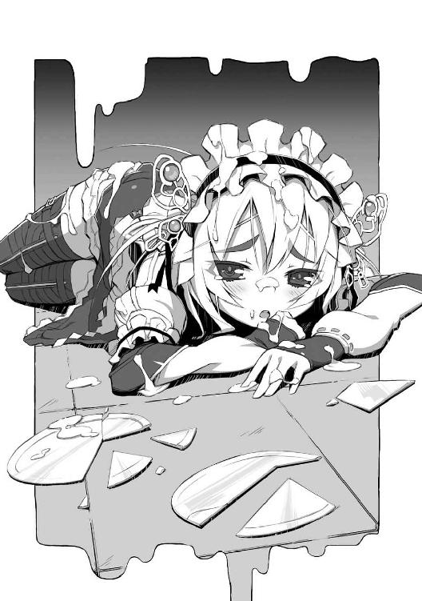
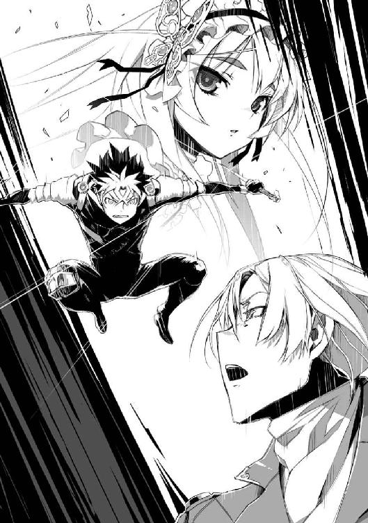

| 棺姫のチャイカI: 1 (富士見ファンタジア文庫) | |
| 榊 一郎 & なまにくATK | |
| 富士見書房 (2010) | |


棺姫のチャイカⅠ
一郎
ファンタジア文庫
本作品の全部または一部を無断で複製、転載、配信、送信したり、ホームページ上に転載することを禁止します。また、本作品の内容を無断で改変、改ざん等を行うことも禁止します。
本作品購入時にご承諾いただいた規約により、有償・無償にかかわらず本作品を第三者に譲渡することはできません。
本作品を示すサムネイルなどのイメージ画像は、再ダウンロード時に予告なく変更される場合があります。
本作品は縦書きでレイアウトされています。
また、ご覧になるリーディングシステムにより、表示の差が認められることがあります。
口絵・本文イラスト なまにくＡＴＫ（ニトロプラス）
口絵・本文デザイン Lightning
序 章 戦乱期の終わりに
THE END OF WAR-TORN
当たり前の様に続いた日々は──その日、唐突に終わった。
あるいは以前から何かの前兆はあったのかもしれない。
だが彼女は王国や周辺諸国の情勢を知るにはあまりに幼すぎて......全ては彼女のあずかり知らぬ処で始まり、そして終わっていたのである。彼女に出来たのは、ただ、あまりに唐突に始まった事態を前に、呆然と佇む事だけだった。
何処かで誰かが吼えている。
何処かで誰かが啼いている。
何処かで誰かが叫んでいる。
幾重にも重ねられた無数の声が滅びの歌を奏でていた。
それは悲鳴であり、怒号であり、絶叫であり──その他諸々の声が、炎や風の放つ轟音と混ざり合って生まれる旋律だった。一つ一つを聴き分けるのは無理だろう。それはつまり一つの国が死んでいく時に漏らす断末魔の呻きだった。
「──姫様！」
窓の外には奇妙なものが見えた。
遥か彼方の空に巨大な何かが浮かんでいる。
どれ位離れているのかは分からない。だがそれが呆れる程に大きな代物である事は分かった。手前を飛んでいる天竜騎兵の大きさと比べてみれば、城──いやちょっとした山程の大きさすらあるのだと分かる。
それが浮いているのだ。
支えるものもなく。吊り下げるものもなく。まるで雲の様に。
不可能を可能にするのが魔法だが──それにしても、あまりにそれは桁外れだった。
一見するとそれは直立した円筒の様にも見える。だが──細かく見て行けばそれが、むしろある種の立像に近い事が分かるだろう。祈りを捧げる乙女を模したかの様な......己の両腕を胸元に折り畳んでいるかの様な人の形に似ている。
空飛ぶ巨大な立像。
それが──
「──姫様！」
攻めてくる敵軍の要塞なのだと理解するのに若干の間が必要だった。
「............」
恐ろしい。恐ろしい。あまりに恐ろしい。
彼女は逃げるようにして視線を下へと転じる。
だがそこにもまた──そこにも既に地獄絵図が広がっていた。
敵兵。敵兵。敵兵。敵兵。敵兵。敵兵。敵兵。敵兵。敵兵。敵兵。敵兵。敵兵。敵兵。敵兵。敵兵。敵兵。敵兵。敵兵。敵兵。敵兵。敵兵。敵兵。敵兵。敵兵。敵兵。敵兵。敵兵。敵兵。敵兵。敵兵。敵兵。敵兵。敵兵。敵兵。敵兵。敵兵。敵兵──だらけ。
眼下は既に敵で溢れていた。
数え切れない程の兵士達が物凄い勢いで押し寄せてくる。
文字通りに相手を押し倒し殺し尽くす勢いで、武器を振りかざし、盾を突き上げながら、殺到してくる様子が見えた。見えてしまった。
「何処に!? 姫様!!」
戦略や戦術などまるで分からぬ小娘の身でも確信できる。
これは勝てない。勝ちようが無い。
「姫様......！」
扉を破るかの様な勢いで、初老の女官が部屋に転がり込んできた。
「ああ姫様......この様な所に！」
女官は恐怖と焦燥に顔を歪めて叫ぶ。
髪は乱れ、服も乱れて、悲惨な格好になっていた。常々『宮廷女官はまず品格が第一です』と澄まして唱えていたのが嘘の様だ。多分、何処かで転んだのだろう。頬には擦り傷が生じて血が滲んでいた。
「どうかこちらに......お早く！」
「............」
女官に手を引かれるままに城内を進んでいく。
見慣れた筈のその景色は──しかし一変していた。
何もかもが緋い。
それは燃え盛る炎の色であり、飛び散る血の色であり、つまりは──飽きる程に見慣れた城の情景を、根刮ぎ染め潰してゆく滅びの色だった。掲げられた国旗が、あるいは飾られた絵画が、火の粉を撒いて燃え狂っている。床の上の絨毯だけ火が燃え移らないのは、たっぷりと血を吸っているからだろう。
床を埋め尽くすのは夥しい数の死体だ。
敵も味方も数え切れない。本当に数えられない。中には何人分かさえ分からないものもあれば、人間のそれとは明らかに異なるものも在ったからである。
斬り殺されたらしい死体が最も多い。だが中には黒焦げになった死体や、全身が熱した飴の様に溶け崩れた死体もあった。一体どんな方法で殺されたのか想像もつかない。
男の死体があった。女の死体もあった。
子供の骸があった。老人の骸もあった。
本当にありとあらゆる死がそこには転がっていた。
そんな中を──
「大丈夫ですよ姫様、大丈夫」
女官はむしろ自分に言い聞かせる様に言いながら、死体の間を縫って──時には死体を踏み越えて進んでいく。敵兵も味方も区別などしない。出来ない。そんな余裕は何処にも無い。
「陛下の所に、陛下の御許に辿り着きさえすれば──」
普段の倍以上の時間を費やして、彼女と女官は城の中を歩いていく。
途中で敵兵と出会わなかったのは奇跡の様な幸運だった。
しかし──
「──陛下！ 姫様をお連れしました！」
そう叫びながら謁見の間に飛び込んだ女官は。
「.........!?」
愕然とその場に凍り付いた。
普段ならば百名余りの臣下が傅く大広間である。
権威の象徴とも言うべきこの広大な空間には──今や、がらんとした空虚が横たわるばかりで、窓から差し込む夕陽の色が、全てを廃墟じみた気怠い色に染め上げている。
そして──その最奥。
皇帝の姿が在るべき玉座は空席になっていた。
代わりに──
「へ......陛下............!?」
女官が声にならない喘ぎを漏らした。
──玉座から少し離れた床の上に、俯せの状態で一人の男が倒れている。
顔は見えない。だがその体格と、そこに帯びる金糸銀糸をふんだんに使った衣装から、男が誰であるのかは一目瞭然だった。
更に言えば──その人物が既に息絶えている事もだ。
ゆっくりと大理石の床の上に広がっていく血溜まりがその証拠である。
「そんな............」
呟いてから──女官は血走った眼で皇帝の遺体の向こうを見据えた。
そこに半円を描いて立つ八人の人影を。
いずれもが武装していた。刀剣を携えた剣士や騎士も居れば、機杖を帯びた魔法師も居る。獣様の耳や尻尾を備えた亜人も混じっている様だった。それぞれに身に帯びる戦装束は異なっており──更には容貌や肌の色にも異なる特徴が見て取れる。恐らくは様々な国から集められた混成部隊なのだろう。
「............陛下、陛下、陛下!?」
女官が叫びながら床に伏した遺体に駆け寄る。
だが次の瞬間──
「陛下、へい──」
──ばづん。
鈍い音が大広間に響く。
八人の内の一人が動いていた。その右手に携えた大剣で女官の首を刎ねたの──だろう。
断言を躊躇うのは、剣の動きが全くといって良い程に見えなかったからである。その剣士らしき人影の姿勢が一瞬前と異なっていたという事実、そして女官の首が驚きの表情を浮かべながら宙を舞っていたというその事実を以て、そう判断するしか無かった。
そして──
「......〈魔王〉の娘か」
八人の内の誰かが言った。
八対の視線がこちらに集中してくる。
不用意にも確かに女官は叫んでいた──『姫様をお連れしました』と。
ならば今更、否定しようが、とぼけようが、彼等が容赦など想い出す筈も無い。否──女官の言葉が無くとも状況は変わらなかったであろう。
これだけ死が蔓延した城内で、死体が一つ二つ増えたところで気にする者は居ない。
むしろ〈禁断皇帝〉の血族を逃す位ならば、疑わしき相手は皆殺し──そう考えて当然だろう。
「ならば是非も無い」
「子供といえど例外ではない」
「後顧の憂いは断たねばならん」
八人は悠然とこちらに向かってくる。
「平和の為だ」
「正義の為だ」
「世界の為だ」
「許せとは言わない」
女官の首を刎ねた剣士がその大剣を掲げるのが見えた。
「さ──好きなだけ罵り喚いて逝くが良い」
そして──
............
時に大陸歴一六〇四年。
フェルビスト大陸において、実に三世紀にも亘って続いてきた戦国時代は北方の雄ガズ帝国の崩壊を以て終焉を迎えた。
投入された兵力は正規の騎士や兵士の他、魔法師や乱破師、傭兵団を含め実に六十二万、更に航天要塞三基をはじめとする大量の魔法兵器、棄獣兵団、天竜騎兵隊といった特殊戦力すらもが残らず駆り出され、徹底的に『諸悪の根源』とされたこのガズ帝国を殲滅した。
ガズ帝国攻略に際して同盟を結んだ大陸主要六カ国は、以後も相互に平和条約を結び、事実上の終戦宣言を行った。ガズ帝国は分割統治され、〈禁断皇帝〉の持っていた莫大な富は戦後復興の為に同じく分割されて六カ国がそれぞれ管理し、有効利用する事となった。ガズ帝国の誇っていた魔法技術も同様である。
それは万民の待ち望んだ平和な時代の訪れであった。
だが──
第一章 棺を引く少女
目覚めればすぐそこに妹の顔があった。
吐息がそのまま触れる様な至近距離である。
「............」
「............」
二人してしばし──無言。
何処か遠くから小鳥の囀る声が聞こえてきた。
窓辺から差し込んでくる日差しは白く、漂う空気も暖かみを帯び、部屋の中にこもっていてさえ、長い冬も終わりが近い事が分かる。草木は芽吹き、獣は巣穴を出る。新たな繁栄の日々を前に、ありとあらゆる生命が期待を抱いていそいそと動き始める──そんな季節だった。
だが......
「兄様。おはよう」
妹は──アカリは囁く様な声で言った。
場所は兄妹共に寝台の上。
でもってアカリが上だ。彼女は四つん這いで、獲物に襲いかかる肉食獣の様な──獲物を組み伏せて、さあ食べちゃいますよ、と言わんばかりの体勢である。元々同世代の娘に比べると長身の彼女が、背中を丸める様にしてのしかかってくると、有無を言わせず相手を大人しくさせてしまいそうな迫力がある。
「............」
我が妹ながら美人だ──それはトールも認めざるを得ない。
まだ歳は十七だが、既に『可愛い』というよりも『美しい』と評した方が違和感が無い。目鼻立ちはくっきりとしており、凛然とした雰囲気で、その長い黒髪をおろして静かに佇んでいると実に絵になる。異性は勿論、同性にも好かれる類の容姿であった。
ただし──全般的に表情の類に乏しいのはいただけない。これで随分とアカリは損をしているとトールは思うのだが、本人はあまり気にしていない様だった。
対して──
「............」
アカリの瞳に──切れ長の黒い双眸に映る、少年の顔には明らかに迷惑そうな表情が浮かんでいた。
黒髪と黒瞳はアカリと同じである。
顔立ちもまあ──整っていると言えなくも無かろう。
だが全体的にその表情は緩んでいる。
物憂げというか。気怠げというか。
十代の少年ならば当然に持っているであろう、覇気だの精気だのといったものを、ごっそりと欠いているのである。代わりにその顔に貼り付いているのは、何処か枯れて乾いた風情だ。皺が在る訳でも黒ずんでいる訳でもないが、何処か人生の終盤に差し掛かった老人を想わせる。寝起きという事を差し引いても、それはあまりに色濃い。
我ながら鬱陶しい顔だ──とトールは思う。
思うだけで今更改めようとは全く思わないが。
「兄様......」
寝台に横たわる兄と、その上に跨る妹。
予想外──と言えば嘘になる。
いつかはこんな事になるのではないかと思っていた。
ここしばらくアカリが自分を見る眼が変わってきた事には気付いていたのだ。
しかし......
「私は──もう我慢出来ない」
アカリはトールの眼を覗き込みながら言った。
「兄様の事を思うと......思うと............」
「思うと......なんだ？」
トールは眼を半眼にして問う。
「............こんな大胆な真似をする積もりは無かったのだ......」
ほんの少し眼を伏せてアカリは言った。
「そうか」
「兄様が悪いのだぞ」
「俺が悪いのか」
「そうだ。兄様が──悪いのだ」
アカリはそう言って小さく首を振った。
「私がどんな想いでいたか......知っていた癖に」
「いや............」
妹の顔を見上げながらトールは眉を顰める。
黒髪が一房──何かに耐えかねたかの様に、はらりと垂れて毛先がトールの頬をくすぐった。
「正直、ここまで思い詰めてるとは思わなかった」
元々表情に乏しい上に、何かと突発的な行動が多いので、トールですら妹が何を考えているか、今一つ分からない部分がある。何かと我慢強い性格なのだが──その分、溜め込んで溜め込んで、ある日いきなり爆発させてしまう為、身近に居る者にとっては何かと厄介であった。
兄──トール・アキュラ。
妹──アカリ・アキュラ。
それが彼等兄妹の名前である。
もっとも下の名前を改めて名乗る事はあまり無い。隣近所の住人でも彼等の姓を知る者は皆無だ。平民は姓を持たない国も多いので、これは殊更に珍しがられる事も無かった。長い戦乱期の後で難民も多く、複数の国の出の者が入り混じりながら、一つの村や町で暮らしている事も別に珍しくはないのだ。
まあそれはさておき......
「アカリ。一つ聞いていいか」
眼を半眼にしてトールは言った。
「なんだろう兄様？ 敬愛する兄様が尋ねる事ならば私は何であろうと答える所存だが」
口調とは裏腹にアカリの両眼は冬の湖面の如く淡々と冷えている。
まあ彼女はいつもこうなのだが。
「コレは何だ」
トールは自分の頭部のすぐ脇を指差した。
一本の──鉄槌を。
それは深々と自らの尖端を枕に食い込ませていた。
「兄様。どうしたのだ？」
アカリは不思議そうに首を傾げた。
「その若さで健忘症にでも罹ったか？ これは私の十年来の愛器ではないか」
「んな事は知ってる」
唸る様にトールは言った。
鉄槌といっても大きさは大したものではない。威力は材質そのものの硬さ重さと使い手の筋力頼り、何よりも振り回し易さを重視した造りで──つまりは屋内でも充分に凶器として使える代物であった。
「俺が聞きたいのは、それが、どうして、俺の枕に食い込んでんのかって話だ」
「振り下ろしたからだが」
「それも分かってる」
「では何が分からないのだ......？」
「まずそれが分からないお前が俺は分からん」
妹の顔を睨み据えながらトールは言った。
「お前がその十年来の愛用の品である所の鉄槌を──」
言ってトールは指先でこんこんと鉄槌を叩いて見せる。
「俺の枕に振り下ろしたその理由だ。それが分からん」
「兄様......」
アカリは哀しげに首を振った。
もっとも仕草だけでその表情は微塵も揺らいでいないのだが。
「私は兄様の枕に向けて鉄槌など振り下ろしていない」
「ほう？」
「振り下ろしたのは兄様の頭に向けてだ」
「猶更悪いわド阿呆」
唸る様にトールは罵った。ただし寝起きという事もあって声に力が入らず、ついぼそぼそと呟く様なものになってしまったが。
「殺す気か？」
「私が敬愛する兄様に殺意など抱く筈が無かろう」
鉄槌を枕に食い込ませた体勢でアカリは堂々と言った。
何ら悪びれた様子が無いその様子は、いっそ清々しいとさえ言える。
「いつまで経っても寝たままの兄様を起こそうと思ったが故の事なのだ」
「あやうく永眠するところだったな」
間一髪......トールが壁側に向けて寝返りを打たねば、鉄槌は恐らく枕ではなくて彼の額に食い込んでいたであろう事は疑いの余地が無い。ちなみに今は枕に食い込んでいて見えないが──アカリの鉄槌は片側が尖っている為、そりゃあもうずぶりと、頭蓋骨なんかはものともせず、勢いよく脳にまで達しちゃっていた事だろう。
「そうか」
やはり平然とアカリは頷いた。
『それがどうかしたのか？』とでも言いたげだった。
「............」
「............」
そのまま両者動く事無く──またしばし無言。
何処かで更に鳥が囀る声が聞こえた。
「......兄様」
アカリがやはり淡々とした口調で、見つめ合いに飽きたかの様に言った。
「今日の予定は？」
「寝る」
面倒臭そうにトールは宣った。
「というかごろごろする」
「ふむ。他には？」
「腹減ったら何か喰う」
「成る程。道理だ。他には？」
「以上だ」
面倒臭そうにトールは言って、もう一度横向きに寝返りを打った。
彼女はしばし続きを待つ様に沈黙していたが──
「............兄様」
兄の横顔を見下ろしながらアカリは言った。
ちなみに鉄槌は尚もトールの枕に食い込んだままである。
「今日こそ働いてくれると、私はきっと喜びで鼻血を噴いてしまうだろうな」
「そのまま出血多量で永眠しろ」
「ひどい言い様だな兄様。私は兄様の事をこんなにも敬愛しているのに」
「それで鉄槌でぶん殴るのか」
「愛の槌だ」
平然とアカリは言った。
そして彼女は身軽な動作でひょいと寝台の上から降りると──これまた軽々と鉄槌を引き抜き、これを肩に掛けた。彼女の引き締まった二の腕を見れば別に不思議でも何でもないのだが、少女の姿と凶悪な打撃武器の組み合わせというのは見慣れていてさえかなり不思議な感じである。
「兄様。以前から不思議に思っていたのだが」
「なんだよ」
「どうして兄様は働かないのだろう？」
嘲りも蔑みも含まぬ口調で尋ねられる方が堪える事も在る。
トールは想わず漏れそうになる溜息を呑み込んでから──答えた。
「働いたら負けだ」
妹に背中を向けたままトールは言った。
「............」
アカリが首を傾げる気配が背中越しに漂ってくる。
「誰に対して？」
「知らん」
「............」
無意味に重い感じの静寂が二人の間に落ちる。
じいいいいいいいいいいいいいいいいい──と突き刺さる様な視線をトールは感じて付け加える様に言った。
「いいから放っといてくれ」
「............」
アカリはしばし考え込んでいる様子だったが──
（......殺気!?）
殺す気と書いて殺気と読む。
「──ッ!!」
物凄い勢いで旋回した鉄槌が、間一髪で身を縮めたトールの頭部をこすって過ぎた。恐らく一瞬でも回避が遅れていたら、彼の頭髪は皮ごとこそぎ取られて、トールは見事に禿頭と化していた事だろう。頭蓋骨剥き出しの頭部を禿と言って良いのであれば、の話だが。
「てめっ......！」
さすがにがばりと起き上がって妹を振り返るトール。
「兄様──」
左手で哀しげに目元を押さえつつ──もっとも表情はそのままだ──右手は猛烈な勢いでぶんぶんと鉄槌を振り回しながら、アカリはぽつりと言った。
「どうしてもというなら」
「いや待て。とにかく待て。つか、とりあえずソレを降ろせ」
アカリを少しでも遠ざけようとするかの様に両手を掲げて言うトール。というかこの距離だとアカリがほんの少し腕を伸ばしただけで鉄槌はトールの頭を直撃するだろう。いわゆる必殺の間合いの内だ。回転の勢いが乗った一撃をまともに喰らえば、トールは寝台ごと真っ二つに叩き折られかねない。
「............」
アカリは──しかしそのままぶんぶんと音を立てる程の勢いで鉄槌を旋回させている。
どうやらその凶器を降ろす積もりは無さそうである。いつもはのらりくらりと言い逃れしていれば諦めてくれるのだが──流石に今日はアカリも徹底抗戦の構えであるらしかった。さすがに堪忍袋の緒が切れたか。
「兄様......」
「なんだ」
「兄様がこれ以上、働かないどころか、殆ど外出もせず、家でごろごろごろごろごろごろごろごろごろごろごろごろごろごろごろごろごろごろごろごろごろごろごろごろごろごろごろごろごろごろごろごろごろごろごろごろごろごろごろごろごろごろごろごろごろごろごろごろごろごろごろごろごろごろごろごろごろごろごろごろごろごろごろごろごろごろごろごろごろごろごろごろごろごろごろごろごろごろごろごろごろごろごろごろごろごろごろごろしているだけという生活を続けるというのならば......」
「どんだけ転がってんだ、俺は」
「もう......もういっそ......」
「いっそなんだよ」
「兄様を剥製にして売るしか......」
「するな！ つか売れねえよ！」
「馬鹿な」
鉄槌をぶん回す手は微塵も緩めず、しかしアカリは意外だ、という風に首を振った。
「私なら借金してでも買うぞ？」
「俺の剥製をか？」
「飯を食わない分、長期的に見れば生の兄様よりも安上がりではないか」
「............」
「............」
わだかまる沈黙。
変わらず物凄い勢いで振り回されている鉄槌の音だけがひどく重い。
「やはり剥製──」
「ああ、分かった、分かりました！」
流石に慌ててトールは言った。
このままでは本当に妹に撲殺されかねない。勿論、剥製にされるのも御免だった。この期に及んで働く気など毛頭無いが、とりあえず二度寝せずこの場から逃げ出す算段をする必要がある。
「とにかくあれだ、まあ、その、とりあえず、朝飯喰ってから」
「もう飯の種が無い」
ようやく鉄槌を降ろしながらアカリは言った。
「昨日の夕食が最後の晩餐だと言っておいた筈だが」
「そ......そうだっけか？」
「まさか私の敬愛する聡明な兄様が忘れている筈は無いと信仰している」
「............」
トールは天井を仰いで溜め息をつく。
言われてみれば昨日の晩にそんな話を聞いたような聞かなかったような。いつもの様にアカリの小言は適当に聞き流していた為に、はっきりと覚えていないのだ。
「兄様──」
改めて鉄槌を構えるアカリ。
「分かった、とりあえず、朝飯を何とかしてくるから!!」
空気を抉り抜く勢いですっ飛んできた鉄槌は、悲鳴じみた叫びによって、トールの顔面を粉砕する直前でぴたりと停止していた。
道を歩いているとちくちくと視線が突き刺さるのを感じた。
その手の感覚が鋭敏なトールとしては鬱陶しい事この上無い。とはいえ新参者の立場に加えて自分が此処ではむしろ浮き気味の異物である事については自覚が在る。文句を言えた立場ではなかった。
「............」
思わず溜め息が漏れる。
右を見てもボロ屋。左を見てもボロ屋。見渡す限りに見えるのはボロ屋の群れ。人の姿が無ければ廃墟にしか見えない様な旧く小汚い建物が幾つも幾つも並んでいる。壁に亀裂が入ったり、塗装が剥がれているのは、まだマシな方で──明らかに傾いている建物や、崩れた天井に油脂を塗り込んだ撥水布を張って雨風を防いでいる建物もあった。どう考えても危険なのだが......贅沢は言っていられないという事だろう。
ただし退廃の空気は、此処には無い。
決して上品でも優雅でもないが──それだけに生命そのものといった、泥臭くも活気に満ちた空気が通りには満ちていた。
特にこの辺りは闇市がよく立つ。
そのせいで普段から人通りも多く......それを当て込んで、店とも呼べない様な、木箱の上に、『商品』と呼ぶのも躊躇われる様なガラクタやら、山菜やら、正体不明の獣肉やらを並べて売っている男女の姿も見受けられる。更にはそんな大人達の間を、ボロをまとった子供達が笑い声を上げながら走り回り、各家から出る生ゴミを処理する為に飼われている豚が、ふんごふんごと鳴きながら同じく通りを駆け回っていた。
国は滅び。
街は焼かれ。
友も親も死に絶えて。
だが......それでも人は生きている限りにおいて、営みを止める事は出来ない。自ら絶望の淵に身を投げ込んで人生に終止符を打つのでもない限り、人は泥を啜り、木の根を囓ってでも生きていく。ここはそうした逞しい者達が流れ着いた場所だった。猥雑ながらも活気に満ちているのは当然の話である。
だからこそ......トールの様な人間は目立つ。
いつも物憂げで、覇気も無く、まるで黄昏の空気を引きずって歩いている様な奴は。
「............」
トールが歩いているのは地方都市デルソラントの南側に位置する難民街だ。
幸い──と言って良いのかどうか微妙だが、長く続いた戦乱のせいで、何処の街でも、住人の居なくなった廃屋だの何だのには事欠かない。他の国や地方から流れてきた戦災難民達が、これを修繕して住み着く事も珍しくなかった。
流れ者が街に住む事について──当然、元々の住民達はあまり良い顔はしないのだが、かといって積極的にこれを排斥しようという事も無い。ようやく訪れた太平の世を何とか生きていこうと、庶民の間には立場を越えた相互扶助の様な意識が、確立されつつあるからだ。
今は戦後の混乱期だ。
大抵の国は領主から貴族、騎士まで、国家体制の再編成に追われていて、庶民の生活にまでは手が回らない。なので下々の民草は上をあてにせず自分達で協力し、明日の生活を守らねばならない──そんな雰囲気が何処の街でも自然と出来上がっていた。
彼とアカリが住む廃屋もこの難民街の一郭に位置する。
生まれ育った郷を追われた彼等は、半年ばかりの放浪生活の後、このデルソラント市の隅に自然発生した難民街に流れ着いた。
兄妹のみの二人暮らしだ。
親や親戚は行方知れずである。
戦乱の終了から程無くして一族郎党は揃って離散──今では生きているやら死んでいるやら分からない。まあ郷里を出る際には、それなりに家財道具を持ち出せた様だし、色々と図太い連中だったので多分、この難民街の連中と同様、何処かで逞しく、そして適当に生きているのだろう。
「おや。トール」
道端に出した長椅子に腰掛けながら、籐の籠を編んでいた老婆がトールに気付いて声を掛けてきた。名前は忘れたが──顔は覚えている。確かこの難民街に住む様になった際に何度か会っていた筈だ。確か世話好きが昂じて、夫婦喧嘩の仲裁から、簡単な職の斡旋まで、豊富な人生経験を活かして近所の諸々を仕切っているらしい。
「珍しいね。あんたが外に出ているなんて」
「そうかもな」
面倒臭そうに応えるトール。
次に来る台詞は大体想像がついた。
「アカリちゃんにばっか働かせてないで、あんたもちゃんと働かなくちゃ」
「............」
余計なお世話だ──喉まで出かかったそんな台詞をトールは呑み込んだ。
働いていないのも事実なら、望んだ事でないとはいえ、アカリに喰わせて貰っているのも事実だ。もっともアカリはアカリで妙に世間知らずな処があるせいで......決して稼ぎは良くない。ましてや難民に混じっていれば割の良い仕事にありつくのも難しい。だからこそ今朝の食事にも困る有様になっている訳で......
「そのうち──気が向いたらな」
軽く手を振って老婆の前を通り過ぎるトール。
トールは無職であった。
ついでに言うと......現状、たまたま解雇されて次の職に就くまでの間という訳でもなければ、新たな職に就く為の修行や修練を重ねている訳でもない。厳密に言えば街の職業派遣組合に形ばかりの登録はしているのだが......今以て具体的な仕事をした事は一度も無かった。
つまりは無収入であり無一文であり──更にはその事について自ら改善を試みようとはしない完全無欠の甲斐性無しである。
そんなトールであるから、妹が鉄槌で起き抜けに襲いかかってくるのも当然──とまでは言えずともまあ『仕方ない』と頷く者は多かろう。殺されかかったトールにしてみればたまったものではないが。
「『働く』......ね」
誰に対してという訳でも無く──強いて言えば自分に対してか──皮肉げな口調でそう呟くと、腰の後ろに吊った鉈の重みを確かめながら、トールは難民街を横切って、デルソラントの街の南門へと向かった。
羽根ペンを置いて溜め息をつく。
まだ今日の業務は始まって半時間と経っていないのだが──コンラート・シュタインメッツは既に疲れ果てていた。昨日までの疲労が抜けきっていない状態で仕事を始めればそれも当然の事である。
執務室の入り口に、帽子掛と並べて置かれている姿見に視線を向けると、その鏡面には見るからにくたびれた感じの、初老の男が恨めしそうな眼をして映っていた。最近はわずかに耳の上に残った髪も減り気味だ。完全な禿頭になってしまうのもそう遠い先の事ではあるまい。
「──そういえば」
机の上に山積みになった書類の向こう側から、女性補佐官のカレン・ボンバルディアが声を掛けてくる。どうやらペンを置いた事で、コンラートが一休みする事に決めたのだと判断したらしい。神経質そうな顔の真ん中を横切る眼鏡を指先で弄りながら、彼女は無表情に続けて来た。
「例の一件ですが」
「どの例の一件だね」
コンラートは今年で五十と八。記憶力は未だに衰えていない自負があるものの、毎日、何十件と追加される案件の全てを覚えている事はさすがに出来ない。
彼とカレンの所属する戦後復興推進機関〈クリーマン〉は多忙だ。明らかに処理能力を超えた案件が次々と持ち込まれてくるせいである。
良くも悪くも戦乱期の終焉はフェルビスト大陸に変化をもたらした。
戦争が当たり前だった時代の価値観と──そうでない時代の価値観というものは自然と異なるものにならざるを得ない。
政治面でも。経済面でも。その他の面でも。
特に戦争という『大義名分』で誤魔化せていた諸々を為政者達は──主に貴族達は今後の統治方法について真剣に考えざるを得なくなった。
『今は戦争中なんだ。贅沢を言うな』
『戦争に負ければ何もかも奪われるぞ。それでもいいのか？』
そんな言葉で民衆の不満の矛先を敵国に向ける事が出来なくなったのだ。
問題は何処の国でも山積みになっている。
誰もが戦国時代が終了すれば──『平和』が来れば、諸々の不安や不幸は全て解決するものだと信じていた。そう信じ込む事で辛い戦乱期を生き抜いてきた。だが長々と──数世紀に亘って続いてきた戦争がいざ終わってみると、誰もその『平和』の具体的な姿を知らなかったという体たらくである。
貴族達は考え方の切り替えを余儀なくされた。
勿論──上手く新しい時代に乗り換える事が出来た貴族も居る。だがその多くは戦国時代と変わらぬ強引な方法で民衆を統治しようとして、手痛いしっぺ返しを喰らっていた。具体的な姿を知らぬままに『平和』への期待だけを膨らませてきた民衆は、ちっとも生活が安楽にならない事に不満を覚えた。
結果として......フェルビスト大陸のあちこちで今日も暴動だの何だのが起きている。
かつて自国を守る為に振るわれていた騎士達の剣は、今、自国の民の方に向けられているという有様である。
勿論──このままで良いとは貴族達も思っていない。
全ての国や街が上手く行っていない訳ではない。
中には偶然なのか、それとも統治者の手腕なのか、大きな問題もなく、平和を文字通りの形で享受している場所もある。むしろ経済を活性化させてより豊かになっている国や街もあった。
貴族達は、そうした数少ない成功例を真似ようと、情報交換を始めた。戦争の終了と共に一度は大量解雇した魔法師達を改めて傭い直し、通信用の魔法を使って会議を繰り返している。
この数百年間、サボってきた政治経済の勉強を、大慌てで始めた様な状態だ。
当然──情報は錯綜して混乱する。
この混乱を最小限に抑える為に──情報を整理して適切に交換出来る様にと──各国が合同で設置した超国家機関がある。
それが戦後復興推進機関〈クリーマン〉なのである。
理想的な国家運営の方法を研究して、各国に提供するのがその主な使命だ。
ある意味でフェルビスト大陸の未来を担っている組織とも言える。
だが抱える案件は山の様に多く、関係者の数は哀しい程に少ない。
「『〈魔王〉の遺産』問題です」
「............ああ」
コンラートは顔をしかめた。
山積みになった問題の中でも──それはとりわけ、厄介な代物だった。
「ジレット隊が明日、デルソラント市に到着する予定です。昨晩、連絡がありました」
「デルソラント市......」
傍らの書棚から貴族名鑑を取り出してめくる。
デルソラント市の統治者は──
「──なるほど、『魔王討伐』の『英雄』の一人かね」
「彼が持っているとは限りませんが」
とカレンは言った。
「とりあえず先に書面で協力要請は出しておりますが、返事が来ておりません」
「まあ当然だな」
コンラートは溜め息をついて言った。
「誰も彼もが忙しい。忙しくて疲れている。『戯言に付き合っている暇は無い』という返事を出すのも億劫な程にな」
「どういたしましょう？」
「現場の采配に任せよう」
コンラートは言った。
「脅威になる『かもしれない』程度の案件に延々と関わっている暇は無い。暴動。疫病。通貨危機。民族紛争。既に我々の目の前には現実の脅威が山積みだ」
と彼は書類の山を指し示す。
「分かりました。そのように」
カレンも書類の『塔』の高さにうんざりしたのか、頷いて──それ以上はこの話題について振っては来なかった。
ただ──
（さすがに『魔王』だな）
コンラートは胸中で呟いた。
（死して後もその影は我々を怯えさせる）
アルトゥール・ガズ──ガズ帝国皇帝。
『魔王』『禁断皇帝』『大賢者』『狂戦王』『賢帝』......様々な二つ名を持ったガズ帝国の皇帝の死によって、長々とフェルビスト大陸に続いていた戦乱期は終了した。まるで皇帝自身が戦乱期の象徴であったかの如く。
だが......
（さて。全て杞憂であれば良いのだが）
再び羽根ペンを手にして書類仕事に戻りながらコンラートはそんな事を考えていた。
「──面倒臭ぇ」
抜き身の鉈を片手に提げて歩きながらがらトールはぶつぶつと呟いた。
「ああくそ本当に面倒臭ぇ。よく考えたらこれだって立派な労働じゃねえか。やってらんねえな。くそ。働いたら負けだって言ってるだろうが。ああもう面倒臭ぇ。いっそ何処かに金でも落ちてねえかな。その方が話が早いんだがな」
呆れる程に甲斐性無し丸出しの台詞である。
勿論──別に金が無いからといって、何処ぞへ強盗に入ろうというのではない。
トールの目の前には草木深い山林の風景が広がっていた。
デルソラント市は、ごく一般的な城塞都市だ。
三方を山に囲まれる為に交通の便はあまり良く無いが、その分、攻めるに難く護るに易い。列強諸侯が争う事により永く続いた戦乱は、こうした城塞機能を備えた都市を幾つも誕生させる事となったのだ。もっとも戦乱期の終了と同時に、堅固な城塞都市の多くは単に行き来の面倒な田舎になってしまった訳だが。
ともあれ──デルソラント市のすぐ外には広大な山岳地帯が存在する。
この山岳地帯は動物植物共に実りが豊かで......しかしその一方で山歩きに慣れていない者が分け入るには少々険し過ぎる。そういう訳で一部の猟師や樵夫といった専門職の人間以外は、殆ど立ち入る事も無い場所だ。
此処なら山菜を採ったりウサギやらネズミやらを獲ったり出来るのではないかとトールは考えたのである。
だが──
「まったくアカリの奴......」
鉈で払われた灌木の葉が舞い上がり──はらはらと落ちる。
顔の前に落ちてきたその一枚を口の端に咥えて、彼は独りごちた。
「今更、俺に何を期待してんだかなぁ」
デルソラント市に流れ着いてもう一年余り。
毎日毎日、何をするでもなく、ひたすら無為に過ごしている兄を見ていれば、もういい加減、諦めそうなものなのだが──アカリは未だに何かと彼を焚き付けて働かせようとしている。
デルソラント市の職業派遣組合にトールの名前を登録したのも彼女だ。
彼女自身も同じく登録している様だが、人手は余り気味らしくて常に仕事が回ってくるとは限らず、おまけに前述の通り、変な処で世間知らずなアカリは、誰もが嫌がる様な率の悪い仕事を押しつけられても気付かなかったりするので、結果として収入は微々たるものなのだ。
考えてみればデルソラント市に限らず城塞都市は自己完結的な側面が強いので、難民にまでそうそう美味しい仕事の口が回ってくる筈も無いのである。新参者ならば尚更の話だ。
「あいつの場合──器量は良いんだから、適当な男見繕って喰わせて貰えばいいんだよ」
いつまでも甲斐性無しの兄に関わっている必要など無い訳で。
トールとしてもいっそ見放してくれた方が気楽で良い。腹が減ってどうしようもなくなれば、こうして山に分け入るだけの事だ。さすがにパンもチーズもバターも塩も胡椒も無しのまま、三食山菜が続くと早々に飽きるだろうが。
まあその時はその時である。
「大体、兄妹つっても俺等の場合、元々は他人な訳だし......本当、今更だよな」
そんな事を呟きながらトールは山林を進んでいく。
前述の通り、この辺りはあまり人が入る事も無い為、辛うじて獣道らしきものがある程度──きちんと踏み締められる足場にも事欠く様な状態だ。トールはこの手の場所に慣れているから良い様なものの、素人が迂闊に入ると遭難しかねない。
だが......
「──うん？」
ふとトールは脚を止めた。
何かの音が彼の聴覚に引っかかったのだ。
「なんだ......？」
息を潜めて聞き耳を立てると──改めてがさごそと草むらの揺れる音が聞こえる。しかもそれは段々とこちらに近付いてきている様だった。
何かが草むらに潜んで移動しているのだ。
「......獣か？」
見れば、音だけでなく実際に茂みが揺れているのも見えた。
揺れている部分の大きさを見ればそこにどの程度の大きさのものが潜んでいるのかも分かる。
人間と同じか──それ以上の何かだった。
「............」
咄嗟に彼我の距離を目で測るトール。
おおよそ十五メルトルといった所か。獣ならば一瞬で──たとえ足場の悪い山林においても──殆ど一瞬で走破してしまう様な距離である。
身構えるトール。
シカやイノシシの類ならば何とかして狩りたい所だし、クマやオオカミの類であれば、やり過ごす算段をすべきだろう。
万が一にも棄獣の類ならば............その時はその時だ。
諦めは割と良い方である。
（......まあ、さすがに棄獣はねえか）
今一つ緊張感も無いままにそんな事を考えるトール。
すると──
「............？」
がこん、がこん、と到底、獣が立てているとは思えない音が聞こえてきた。
トールの記憶の中で似た音を探すとすれば、木箱か何かが岩に当たって立てるかの様な、そんな硬くて人工的な音である。少なくともこんな足音の獣は居ないし、こんな鳴き声の虫も居ないだろう。
更に耳を澄ましていると──ずぞぞぞと何かを引きずる音も聞こえてくる。
（なんだ？）
猟師でも樵夫でもあるまい。
となると......
「............」
不意に──草むらから何かがにょっきりと顔を出した。
「......あ？」
眉間に縦皺を刻んでトールはそれを見つめた。
あまりにもこの場に不釣合いというか、不自然というか、まあとにかく完全に予想外の存在であったからである。
端的に言えばそれは......人間の少女だった。
年齢は十四か五──といったところか。
典雅で可愛らしい顔立ちである。
昼なお薄闇残る山林の中で、長い銀髪が微かな木漏れ日を受けて静かに煌めいている。頭部に付けた白い髪飾りと、大きな紫の瞳をぱちくりと何度も瞬かせながらきょろきょろと辺りを見回す仕草が、何処か少女を小さな獣の様に見せていた。
とにかく人を襲う猛獣の類ではない。
それどころか──黒い衣装を着たその体躯は見るからに華奢で、どちらかといえば襲われる側に見える。
小柄な少女が一人で山の中をうろうろしているというのも妙な話だが、その格好たるや奇妙を通り越して明らかに変だった。黒いといってもワンピースには飾布やら装身具が幾つも付いていて、到底、山登りに適した格好とはいえない。実際、あちこちに引っ掛けてきたのだろう、折れた木の枝や葉がその体のあちこちにくっついていた。
勿論、葉や枝を払う鉈も無ければ、杖の類も手にしていない。
少なくとも山歩きに慣れた猟師や樵夫の格好とは真逆、街中の散策どころか、何処かの貴族の舞踏会にでも出席するかの様な格好であった。
いつ遭難してもおかしくない。
山をなめきっているとしか思えない軽装である。
ただ──
（......なんだ......あれ？）
一瞬とはいえ小柄な少女を大型の獣と見間違えたのは──彼女の荷物も込みで一体の生物だと見紛ったからである。少女は何やら大きな暗赤色の箱を背負っていた。その分だけ草むらの揺れが大きくなったのだ。
いや。それは単に箱というより──
（......棺？）
縦長で奇妙に特徴のある──縦に伸ばした八角形のそれは、トールの記憶に照らし合わせる限り、棺以外の何物でもなかった。
勿論、標準的な成人男性を収容可能なその容れ物は、少女自身よりも大きい。これに革のベルトを巻き付けて背負って歩いている様だった。そんな真似をすればあっという間にあちこちぶつけて傷だらけになって壊れてしまいそうだが──かなり頑強な代物であるのか、棺の表面には傷らしい傷も見えない。
しかし......あれは一体何の真似か。
中身は空だとしてもそれなりの重量がある筈だ。
少なくとも女子供が──それも山中で持ち歩くものではあるまい。それとも寝袋代わりにでもしているのだろうか。側面にはランプらしいものまで取り付けられているが。
まあ中途半端な縫製の寝袋に比べれば快適で安全かもしれないが......
「──おい」
呆れたトールは自らも草むらから立ち上がって、その少女に声を掛けた。
「そこの。何やってんだ？」
「......！」
びくりと身を振るわせて少女はトールの方を振り返る。
元々大きい紫の双眸を更に驚愕で大きく見開いて、彼女はこちらを見つめてきた。
「こんな山の中で一体何を......」
ある意味、そっくりそのまま投げ返されそうなトールの台詞は──
「......!?」
──しかし途中で中断を余儀なくされた。
ぼすっという音が聞こえてきそうな勢いで、少女と棺が再び草むらの中に沈んだからである。
「おい......？」
予想外の反応に思わずトールは前に出ながら声を掛ける。だが次の瞬間、ざざざざざ......と草むらの揺れが素早く遠ざかっていくのが見えた。
どうやら逃げているらしい。それもかなり慌てて。
「............」
だが街の中と異なり山林の中というのはとかく迷いやすい。
真っ直ぐ進むのも一苦労で──山歩きに慣れていない人間は、障害物を避けて避けて移動している内に、方向が分からなくなり、いつの間にか円を描いて元の場所に戻ってくる、などという間抜けな事も珍しくないのだ。
実際──
「............」
目を細めてトールが眺めていると、草むらの下を進む少女は、あっちに進んではごつん、と音をさせて停まり──『みぎゃっ!?』という短い悲鳴が聞こえてきた──こっちに進んではごつん、とまた鈍い衝突音を立てて横に逸れ、行きつ戻りつしている内に、結局、トールの前に戻ってきてしまっていた。
で──
「............」
「......おかえり」
もういいかな？ といった感じでずぼりと草むらから顔を出した少女に──トールは面倒臭そうにそう告げた。ちなみに二人の距離は二メルトル程、一歩か二歩踏み出して手を伸ばせば届く様な状態である。
「──ッ!?」
驚愕の表情で凍り付く少女。
普段──あまり表情を示さないアカリを見慣れているので、こういう反応はちょっと面白いと思ってしまうトールであった。
両手両脚をじたばたじたばたじたばた。
右見て左見てそれから再び正面を見て。
一通り慌てふためいてから──少女はぴたりと動きを止めて言った。
「お............」
「『お』？」
首を傾げるトールを、びしりと音がする様な仕草で指差して睨みながら少女は言った。
「襲う？」
「誰が？ 誰を？」
まあ言わんとするところは分からないではないが、敢えてトールは聞いてみた。
「お前。私」
トールを指差してから自分を指差す少女。
何というか......何となくだが仕草の端々が妙に偉そうに見える。初対面の相手に対してまるで遠慮が無いというか。その一方で警戒心だけは満載といった風情である。
「............」
「............」
半眼で少女を眺めるトール。
上目遣いにトールを睨む少女。
一方的な緊張感を孕んだ空気が二人の間に横たわる。
で──
「襲って欲しいのか？」
「............」
少女はぶんぶんと首を振った。
「山賊──違う？」
「一人でうろつき回る山賊なんていねえだろ」
「............」
「生憎と現在、無職真っ最中でな」
「............猟師？」
少女は眉を顰めてトールの顔を覗き込んでくる。
「だから無職だと言っている」
溜め息をついてトールは言った。
まあたまには小動物を獲ったりもするのは確かだが。その程度で職業的な狩人を名乗るのはおこがましいというものである。
「喰うに困って山菜採りに来たんだよ」
正直、自分で言っていてかなり情けないのだが......今更そんな事で落ち込む位なら、アカリが鉄槌持って襲いかかってくる様な状態にまで至らない訳で。
「......納得」
少女はうんうんと頷きながら言った。
何故か彼女はぱっと表情を得意げな笑顔に改め、トールの鼻先に人差し指を突き付けて断じてきた。
「貧乏人！」
「裕福な無職ってのは......まあいない事はないんだろうが、改めて貧乏人とか言われると、それはそれでムカつくな」
溜め息混じりに言うトール。
ただ少々不思議だったのは、他人を貧乏人呼ばわりしながら──まあ実際にトールは今日の朝食代にも事欠く程の貧乏な訳だが──少女の表情にトールを嘲る様な、あるいは蔑む様な様子が全く含まれていない事だった。むしろ珍しいものを見て喜んでいる様な雰囲気さえあった。
「貧乏人。納得。貧乏人」
何度も何度も頷く少女。
（......なんだこいつ？）
何というか......貧乏という言葉や概念は知っていても、実例を知らなかった、そんな印象である。
「それよりお前だ。お前。お前こそ何やってんだ。こんな所で──」
言ってトールは少女の肩越しに、彼女が引きずっている黒い棺を見遣る。
「棺桶なんか背負って。そもそも──地元の者でも此処には滅多に入らないんだが？」
「............あ」
分かり易い感じに目を丸くして自分の背負っている棺を肩越しに振り返る少女。
慌ててそれを体からおろして草むらの中に押し込んで、その前に立ち──あれはひょっとして隠している積もりなのだろうか？ ──それからトールに視線を戻した少女は、また上目遣いに尋ねてきた。
「..................見たか？」
「そりゃ見るわな」
と呆れてトールは答えた。
何しろ少女自身よりもでかいのだから、見えない筈が無い訳で。
「見なかった」
「............？」
「お前、見なかった、これ」
「......いやまあ。いいけどな」
頬を掻きながらトールは言った。
そんな彼を前にして──
「......山越えは人とも殆ど会わないし......名案だと思ったのにな......」
ぶつぶつと少女は呟いている。
それも大陸公用語ではなく──北方で主に使われていたラーケ語の様だった。先程からどうも会話が片言っぽいので変だとトールも思っていたのだが、どうやらこの少女、北方の出であるらしい。大陸公用語を使い慣れていないのだ。それに比べてラーケ語は多少流暢に聞こえる。
「なんだお前。罪人か何かか？」
わざわざ人目を憚り山越えを選ぶ様な奴といえば、その位しか思いつかない。
デルソラントは交通の便が良くないといっても、一応は馬車が通れる道というのが山間に通っている。余程の事情が無い限り、わざわざ大荷物を背負って道無き道を越えてくる様な真似をする必要は無いのだ。
「不敬──失礼！ 無礼！」
少女はトールを指さし睨み付ける様にして言った。
ちなみにまた大陸公用語に戻っている。辛うじて聞き取れない事も無いが......やはりトールとしても公用語を使ってくれる方が分かり易い。
「じゃあ何で人目につくのを気にしてんだよ？」
「............!?」
少女ははっとした表情で押し黙る。
どうやらトールがラーケ語を聞き取れるとは思っていなかったらしい。
「............」
また少女は上目遣いにトールを睨んできた。
ちょっと吊り気味の双眸が、困惑と、不安と、焦燥と、警戒と、その他諸々の感情をごちゃ混ぜにして映している。相手が敵か味方かを探る野良猫の目だった。
「まあいい。お前が罪人だろうが何だろうが、俺には関係無い」
肩を竦めてトールは言った。
つい数年前まで大陸中が戦争していたのだ。人は殺して当たり前。物は奪って当たり前。そんな価値観の中で生まれ育った人間も少なくない。更には戦後の混乱期という事でどの国も体制再編に追われていて、法整備も進んでいないのだ。実の処......何処までが犯罪で何処までが犯罪でないのかの線引きが未だ曖昧な部分がある。本人にその積もりは無くとも犯罪者として追われるなどという事は、別に珍しくなかった。
そう。珍しくない事なのだ。本当に。
「とにかく」
トールは溜め息をついて言った。
この短いやり取りの間にも大まかにだが分かった事がある。
この少女は余所者で、この辺りの事については殆ど知らないのだ。
そして恐らくは前述の通り、服装から判断するに、山歩きについてすらも──ろくな経験と知識が無いのだろう。何処か箱入りお嬢様といった世間知らずな雰囲気があった。
「お前......デルソラントの街に用があるのか？」
「肯定」
少女は頷く。
「お前、いつからこの山歩いてるんだ？」
「三日前」
「............」
よく無事だったものである。
トールは彼女の姿を頭のてっぺんから爪先までしばし眺めて──
「なあ。お前──」
「むい？」
「金。あるか？」
「金？ お金？」
紫の瞳をぱちくりさせて少女は言った。
そしてようやく合点がいった、といった様子で大きく頷いて、ついでにぽんと両手を合わせた。
「合点。追い剥ぎ！」
「誰が追い剥ぎだ。指差すな！」
勝ち誇った様にこちらを指差してくる少女の手を払いながらトールは言った。
「む。追い剥ぎ。違う？」
「違うわい」
「強盗？」
「違う」
「......殺人鬼？」
「何が何でも俺をその手の無法者にしたいのか？」
「むむ......」
腕を組んで首を傾げる少女。
（本当は襲われたいんじゃねえのか、こいつ？）
──などと思いつつトールは改めて溜め息をついた。
「朝食二人分だな。案内料」
「......？」
怪訝そうな表情で少女はトールを見つめてくる。
察しの悪い相手に、彼はぞんざいな口調で言った。
「人目につかずにデルソラントの街に入りたいんだろう？ どういう事情があるのか知らないが、お前、このままだと一週間経ってもたどり着けないぞ」
「......む!?」
「わざわざ山越えする位だから地図位は見たんだろが？ ちゃんと移動してたんなら越えるのに三日もかからねえよ。明らかに迷ってんだ、お前は」
何しろ先程もトールから逃げようとして、円を描いて同じ所に戻ってきてしまう位である。恐らく真っ直ぐ山を越えている積もりで、ぐるぐると同じ所を巡っていた可能性が強い。はっきりとした道がある場合はともかく......草木深い山の中では自分がどっちを向いているかすら分からなくなる事も多い。
「衝撃の事実」
「気付けよ！」
目を丸くして言う少女にトールは言った。
「案内してやるから朝食おごれつってんだよ。俺と妹の分」
「............むぅ」
少女は眉を顰めて腕を組む。
まあいきなり山中で出会った相手に案内料がどうの、朝食がどうのと言われても戸惑うのは当然だが。
「さっき言ったろ。無職なんだよ、俺。自慢じゃないが朝食喰う金も──」
そこまで言った時。
──もるぜるん もるぜるん えるむん
奇妙な音が聞こえてきた。
いや──違う。音ではない。
それは声だった。
陰々滅々と意味不明の奇怪な単語を並べ立てる──何者かの低い声。
──せぶるん わむるん とうるん
しゅねるん ほるん やるん──
「............！」
少女が驚きに眼を瞬かせるのと。
トールが少女に飛び掛かるのと。
それは全くの同時だった。
「みぎゃ!?」
突然の事に少女が短い悲鳴を上げる。
少女の小柄な身体を地面に押し倒しながら──トールは己の背中を、何かが猛烈な勢いでかすめて過ぎる感覚に気付いていた。
「畜生......！」
トールは呻いた。
「最悪だ！」
彼は有無を言わさず少女を脇に抱えると、そのまま地を蹴った。
このままじっとしていれば確実に殺される。逃げても殺される可能性は──かなり高かったが。
「──っておい!?」
妙な引っかかりにトールは思わず叫んでいた。少女の身体が妙に重い──というより後ろに引っ張られる。振り返って見れば、少女は棺の革帯をしっかりと掴んでいたのだ。
がこんがこんと音を立てながら黒い棺もトール達の後をついてくる。
ただでさえ安定した足場にも事欠く山の中、少女一人を抱えて平衡がとりにくいというのに、更にこんな荷物を引っ張っていては、走りにくいことこの上無い。
「棄てろ、んなもん!?」
「拒否」
と少女は即答する。
もっとも後ろ向きに抱えている為、トールに見えるのは、ばたばたと動く彼女の脚と、それから尻と背中ばかりだ。なのでどういう表情をしているのかは見えないが......やたらにきっぱりした口調だった。
「ああくそ!?」
叫ぶトール。
そんな彼の頭上を越えて黒く大きな影が跳ぶ。
木々の幹を蹴り、枝を蹴り、幾重にも折れ曲がった複雑な軌道を描いて、走るトール達のすぐ側に着地したのは──
「やっぱり棄獣か......！」
それは......異様な馬だった。
木々の間を軽々と跳ね回り、額に奇怪な器官を持つ闇色のそれを──何よりその口に肉食獣しか備えようが無い様な牙を備えたそれを、馬と呼んで良いのなら、であるが。
「独角馬......！」
本来、馬は平原の生き物だ。
その蹄も、脚も、肉体構造の殆どが、平らで広い場所を疾駆する事に特化している。少なくとも障害物の多い森の中や山の中で活動するのには向いていない。
だがこの独角馬と呼ばれる生物──棄獣の一種にはそんな常識は通用しなかった。
普通の馬と同じかそれ以上の巨体でありながら、猿や栗鼠よりも身軽に、立体的な動きをしてのける。
独角馬は、馬の形をした狩猟性肉食獣なのだ。
「くそっ......！」
トールは焦燥感に呻く。
この山の中で棄獣と──しかも独角馬と足の速さを競うのは愚の骨頂だ。ましてや文字通りに荷物を抱えていては到底逃げ切れるものではない。
ならば──
「............仕方ねぇ」
採れる手はそう多くない。
この山には何度も入っていて、大まかな地理も覚えている。トールは咄嗟に頭上を見上げ、梢の間から見える太陽の位置から、方角を確認──現在位置を導き出していた。
「おい！」
トールは抱きかかえる少女に言った。
「前言撤回だ、その棺、しっかり持って放すなよ!!」
「──む？」
──もるぜるん もるぜるん えるむん
せぶるん わむるん とうるん
しゅねるん ほるん やるん──
あの声が再び聞こえてくる。
そして──
「いくぞ!!」
草木に閉ざされていた視界が急速に開ける。
記憶通り、読み通りだ。
後は──
「息を止めろッ!!」
叫びながら一層強く地を蹴るトール。
次の瞬間──
「......にゃ？」
猛烈な勢いで空間に刻まれる黒い軌道と。
少女の何処か間の抜けた声と。
その両者を虚空に残し......崖から飛び出したトールと少女と棺は、その真下にある沢に向かって真っ直ぐ落下していった。
まるで矢の様な速さで山林の中を跳び回っていた異形の黒馬は──トール達の姿が消えた途端にその動きを止めた。
それまでとは打って変わった静かな様子でそこに佇んでいる。その様子にはトール達を襲っていた時の獰猛さは微塵も感じられない。それどころかその眼は虚ろ、まるで立ったまま死んでいるかの如くに精気が感じられなくなっていた。
そして──
「............ふぅむ？」
がさりと茂みを掻き分ける様にして一人の男が姿を顕した。
その人物は、小柄な体躯に濃緑色と焦茶色が入り混じった模様のマントを羽織っている。この様に草木深い場所ではその姿は周囲に溶け込み判別が尽き難い。『人間』としての輪郭を崩すマント姿ならば、猶更その模様は効果的だった。
しかも男は徹底していた。
顔にも、そして綺麗に剃った禿頭にも、また何かの塗料で同様の模様を描き込んでいるし......背中の、まるで大剣でも包んであるかの様に長い袋も、同じ様な色合いの模様になる様に、濃緑色と焦茶色の帯が幾重にも巻き付けられていた。
「逃がしたか」
男はぼそりと呟く。
顔に描き込まれた模様のせいで、傍目には目鼻立ちは勿論、表情すらも判然としない。
ただ、独角馬をまるで恐れる様子も無く、男はその隣に並ぶと、トール達が飛び込んだ谷間を──その下を流れる川を見つめた。
「準備が足りなかったか。やはりジレット殿を待つべきか......？」
考えをまとめるかの様に男は独りごつ。
やがて──
「いや。この幸運──逃す手は無い」
迷彩色の顔に白い亀裂が走る。
男が歯を剥いて笑ったのだ。
「どれ。今一度きっちりと括っておくか」
言いながら男は彫像の様に動かない独角獣を振り返り──背負っていた袋を降ろした。
恐らく気絶していたのは数秒の事であろう。
さもなくばトールとその少女は間違いなく溺死していたであろうから。
「ぬあっ......！」
意識が戻った瞬間にまずトールがしたのは、自分の手が未だきちんと少女を抱え込んでいるかどうかの確認だった。
がぼがぼと泡を吐きながら手脚をばたつかせているが、とりあえず生きてはいるし、意識もある様だ。
幸いだったのは──後生大事に少女が手放さなかった棺が、浮きの役目を果たしてくれていた事である。引きずる音からも半ば想像はついていたが、やはり中は空っぽか、それに近い状態であるらしい。それは充分な浮力でもってトール達を支えてくれた。
「く......お......」
トールは力を振り絞って反対側の腕を伸ばす。
川の左右には何本かの樹が生えて枝を張り出していたが、いずれもトールの届く位置には無い。
ただ──川縁は大雨で増水などした際に、土が削られて木の根が剥き出しになっている事も珍しくなかった。思った以上に早い川の流れに苦戦しつつも、何とかトールは三度目に触れた木の根に掴まり、自分と少女と棺を引き揚げる事に成功した。
「は......はぁ......はぁ............」
川縁の苔生した岩の上に仰向けになって、荒い息をつくトール。
疲労が激しい。体力の大半を持って行かれたかの様な感覚だった。
ちらりと隣を見ると少女も同様で、けほけほと激しく咳き込んでいる。それでも彼女はとりあえず棺の無事を確認して──どうやら余程大事なものらしい──それからようやくトールの方を振り返った。
「突然。強引。無茶──」
そこまで言って。
「む............!?」
眼を丸くして少女は凍り付いていた。
「......どうした？」
「血......!?」
少女が指差す先。
億劫に想いつつもトールは身を起こして自分が横たわっていた岩を見下ろす。
それは......薄茶色に染まっていた。
血だ。トールの服から滴り落ちた川の水と、彼の背中の傷から流れ出た血が混ざり合って、岩を薄茶色に染めているのである。血は単なる顔料と異なり、水と混ぜてやると単に薄紅色になる訳ではなく──やや茶に寄った色になるからだ。
「あー......」
トールは気怠そうに応じる。
「しくじった」
「しくじ......？」
少女は近寄ってきてトールの背中をしげしげと眺める。
「......私。庇う。したから？」
「あ......まあ......な」
トールは自分の背中は勿論見えない訳だが、どんな状態になっているのかは想像がつく。
骨には届いていないだろうが、背中にぱっくりと──まるで剣か何かで斬りつけられたかの様に、一直線に傷が付けられているのは感覚で分かった。
「どうしたもんか」
「至急。手当」
何かを探す様に、あたふたと自分の服のポケットを探る少女。濡れっぱなしのそれが少女の動きに合わせて、激しく飛沫を飛ばすが......しかし役に立つものは見つからなかった様だった。
「......無い」
しょんぼり呟く少女。
「いや、それはまあ、大丈夫だろ」
と面倒臭げにトールは言う。
他ならぬ自分の身体である。流水に浸かり続けていれば、失血死や体温低下による凍死の可能性もあったが──元々骨や筋肉に深々と食い込む様な傷でもなし、血がもう止まりかけているのは分かっていた。
ただ......
「粗食も祟ったか」
体力が足りない。
流血と──そして冷たい沢の水にさらされ続ける事で、生じた体力の喪失は、疲労感という重りとなって彼の身体に覆い被さっていた。ここしばらく食事が粗末だった事も遠因としてはあるだろう。
「これじゃ逃げ切るのは......無理か」
まるで他人事の様な口調で言うトール。
生命の危険すらある状況下で──しかし彼の口調も表情も今一つ切迫感が無い。別に楽観している訳ではなく、単に性格だ。
「棄獣──しかも独角馬が相手じゃな」
「............」
少女は無言。
尊大な態度の割には、何処か間の抜けた感じの少女だったが......さすがに山中で棄獣に追われるという状況が、どれだけ絶望的かという事は理解出来ているらしい。
「駄目だな。お手上げ。手詰まり」
言ってトールは肩を竦め──背中の傷から走る痛みに、少し顔をしかめた。
「......つまらねえ人生だったな」
あっさりそう判断を下してトールは呟いた。
「つまらない、人生？」
少女は眼を瞬かせて言った。
まるで意味不明の言葉を耳にしたかの様に。
「諦める？」
「......まぁな」
苦笑してトールは頷いた。
「死ぬ？」
「多分」
「困る」
「そりゃそうだろうな」
肩を竦めるトール。
「死。恐れず？」
少女はトールを指差してそんな事を聞いてくる。
「あ？ ああ──そうだな。怖くないって言えば嘘になるが──」
言ってトールは少女から眼を逸らす。
何故かは自分でもよく分からなかった。
「元々......何して生きて良いのかもよく分からなかったもんでな」
自嘲的な笑みを浮かべてトールは言った。
「こんな......世界じゃ」
何に向かえば良いのか分からない。
何を求めれば良いのか分からない。
したい事など何も無い。無くなってしまった。
今更なりたいものも無い。
明確な欲求も希望も無く、気が付けば、ただぼんやりと生きているだけの日々が延々と続いている状態だった。
真っ当な職業につく？
それで何がどうなるのだ。
その日のパンの為に働いて、適当な年齢になったら嫁を貰って、街の片隅に小さな家を持って、後は老いて死ぬまで同じ様な日々を繰り返して──限られた時間を淡々と消費していくのか。
それはどれだけ意味のある事なのだろう？
それはここで死ぬ事とどう違うのだろう？
自分は一体何の為に生まれてきたのか。
そんな──考えても詮無い事まで考えてしまう。努力しても報われない。人間一人に出来る事などたかが知れている。世界の片隅でさしたる影響を及ぼす事も無く、生きて、そして死ぬ。
何も出来ない。何も遺せない。
まるで虫や獣の生き様の様に。
生きる目的。
目指す目標。
かつては確かにあったそれは──自分が生まれてきた目的だと信じて疑わなかったトールのそれは、ある日突然に、奪われてしまった。
だからこそ、トールは何をすれば良いのかも分からないまま、この一年間、ひたすら自堕落な毎日を送ってきたのだ。
ふて腐れていたと言ってもいいだろう。
「昔はやりたい事があったんだけどな」
トールは肩を竦める。
「でも今はもう無い。無くなっちまった。以来、惰性で生きてるようなもんだ」
「............」
少女は──しばらく首を傾げてトールを見つめていたが。
「再発見」
びしりとトールを指差して言った。
まるで何かを命じるかの様に。
「あ？」
「再び。見つける。今から。もう一度」
ごく当然の理屈を言うかの様に、彼女はそう言った。
だが──
「もう遅ぇよ」
「何故？」
「正直、他に能がねぇんだよ、俺は」
かつてあった生きる目標。
その為に費やされてきた日々。
他の技術や考え方を学ぶ様な余裕など無かった。一度、皿の形に焼かれてしまった粘土の様なものだとトールは思う。今更、湯飲みになりたいと願ってももう遅い。違う人生を思い描けと言われても上手くいかない。
だが──
「............」
少女は──
「痛ぇっ!?」
ばんばんといきなりトールの背中を何度も叩いてきた。
「何しやがるんだお前は!?」
「あ。詫びる。遺憾の意」
「遺憾の意、じゃねえ！」
深くないとはいえ傷口を叩かれればそりゃ痛い。
「──一緒」
ふと少女は自分を指差して言った。
「なんだって？」
「能なし。一緒。出来る──これだけ」
そう言って......少女は傍らにあった棺に手を伸ばし、おもむろにこれを開いた。
川の中でも浮いていた事から分かる様に、その中は大半が空っぽで──しかし。
「──それ」
眼を丸くしてトールは言った。
少女が取り出したのは鋼の道具だった。
一瞬、その長さからトールは騎兵機槍の類かとも思ったが......違う。
長い長い鉄の筒。
その根本をねじ込む機関部。
照準調整用の測距器。
機関部を保持する為に取り付けられる木製の把棒と、固定用の二脚。
それは──機杖だった。
魔法師が魔法を撃つ際に使う道具だ。騎士が刀剣を使い、射手が弓矢を使う様に、魔法師は機杖を使う。機杖はつまり魔法師の証だった。
「お前......魔法師だったのか」
「肯定」
少女はちょっと得意げに微笑んで──てきぱきと機杖を組み立てていく。
部品の状態で取り出した時点で分かった事だが......それは彼女自身の身長にも優る長大な代物だった。冷たい黒色の鋼鉄の部分と暖かい茶色の木製の部分とが不思議な対比を描いている。
「これだけ。他に能なし。でも」
少女は最後に二脚を開くと、棺の上に置く。
「これ。色々。可能」
「例えば──」
トールは眼を細める。
彼自身は魔法師ではないので、細かな事は分からない。だが──魔法師が生み出す力についてはよく聞き及んでいた。
魔法は機杖の長大さと重さ、それに操作性の煩雑さから、およそ携帯しながらの使用には──移動しながらの行使には向かない。基本的に据え置くか、そうでなくても使い手がしっかりを足場を固めて使うものだ。
だが──一度、発動した魔法の威力は、剣や槍の比ではない。
それは長大な射程を持つと同時に──充分に時間と手間を掛ければ、個人ですら、一撃で城を吹き飛ばす程の威力を発揮する事があるという。数年前に斃され、その死を以て戦乱期の終わりを宣言された『魔王』──〈禁断皇帝〉の名を冠されたガズ帝国の大魔法師アルトゥール・ガズなどは、その絶大な魔法の一撃で山を削り、川を干上がらせたとも言われている。
故に──
「独角馬から逃げるんじゃなくて......ぶっ殺すとか？」
「多分」
と──不敵な笑みを浮かべて少女は頷く。
恐らく自分の魔法師としての技術に自信が在るのだろう。
「でも。術式起動中──動く、無い」
「......だろうな」
当然──その威力の大きさから魔法師は戦争にも駆り出される訳だが、彼等が最前線でその力を奮う事は殆ど無い。彼等は基本的に後方支援役だ。重く長い機杖を使い、これを現場で細々と調整しながら力を使う魔法師は、全くと言って良い位に近接戦闘に向かないからである。
つまり──
「まず探査系の魔法で棄獣の居場所を探って。それから攻撃............」
そこまで言って。
「............」
「............」
少女は凍り付き。
トールは溜め息をついた。
いちいち振り返るまでもない。
大きく見開かれた少女の瞳には、トールの背後の光景が──即ち木々の間から姿を顕した黒い怪馬の姿が、はっきりと映っていたからだ。
しかも──
もるぜるん もるぜるん えるむん
独角馬の頭部に備わる『角』──便宜的にそう呼ばれている器官に光が点った。
小刻みに動かされるその馬面の上で、光が残像の尾を引き......それはしかし消える事無く滞留し、それどころか自ら伸長して複雑な紋様を描き始める。
せぶるん わむるん とうるん
しゅねるん ほるん やるん
それは──魔法陣だった。
棄獣。
それは魔法を使う生物の総称だ。
人間は基本的に道具としての機杖を用いなければ魔法を使えないが──正確には機杖を用いなければおよそ現実的ではない程の手順を必要とする──棄獣はその躰のみで魔法を行使する。棄獣はその躰そのものに魔法の編纂及び発動用の媒体を備えている。独角馬の場合は額に生えた角がそれに相当するのである。
故に──
「──なあ」
トールは敢えて振り向かず、少女を見据えて言った。
「時間、稼げばいいんだな？」
「──むい？」
「時間稼げば、魔法、使えるよな？」
「......肯定」
少女は頷く。
魔法師にとって、あくまで距離は敵の攻撃を受けない為の『盾』であって、離れていなければ魔法が使えないという訳ではない。
つまり......少女が魔法を発動させる為の時間を稼ぐ事が出来れば、トールと彼女は生き残る事が出来るという訳だ。
「こんな得物で棄獣とやり合うにゃ荷が重いんだがな」
言ってトールが引き抜くのは、腰の鞘に入っていた大振りの鉈だった。
勿論、それは刃物ではあるものの、あくまで山林に分け入る際に邪魔な草木を払う為のものであって──戦闘用でも狩猟用でもない。
しかし......今更贅沢を言っている場合ではあるまい。使えるものは何でも使うしかない。
鉈であれ──習い覚えた技能であれ。
「──『我は鋼なり』」
ぼそりとトールは呟いた。
「......む？」
少女が反射的に聞き返してくるが、トールは答えない。既に彼は極度の精神集中に入っていて、少女の声は耳に入りはするが、意識にまでは届いていなかった。
「『鋼故に怯まず』......『鋼故に惑わず』......」
正直......覚えているかどうか不安な部分もあったが、いざ口にすれば続きはすらすらと喉の奥から滑り出てきた。やはり何万回と繰り返し繰り返し意識の底に擦り込んできた言葉は、数年の空白程度では消えないらしい。
それを喜ぶべきなのか哀しむべきなのか。
正直言って今のトールには分からなかったが。
「『一度敵に逢うては一切合切の躊躇無く』」
それはある種の『鍵』だった。
普段は使わぬ凶器を仕舞っておく為の。
一節を口ずさむ度に、自分の中で何かが切り替わっていくのが分かる。
「『これを討ち滅ぼす凶器なり』──」
徹底的に──骨の髄まで戦う為の技と術を叩き込まれた人間は兵器そのものになる。
それは単に膂力や脚力の問題ではない。
全身を──神経や生理現象そのものまでもを戦闘用に再定義して最適化するという事だ。
戦う為に呼吸し、戦う為に鼓動し、戦う為に思考する存在──既にそれは人間ではない。
まさしくそれは人の形状と機能を持った兵器だ。
存在の全て、持てる全てを一つの目的の為に揃えた──単一能の道具そのものだ。
だが......それでは人間として生きていく事に不都合を生じてしまう。戦闘に特化するという事は逆に言えば、それ以外はあらゆる面で凡人に及ばぬ役立たずに堕するという事である。
まして道具は道具。そこに人間らしさは残らない。
それ故に敵の手に渡れば危険だ。あくまで道理や忠誠や信義を求めるならば──その者はやはり人間でなければならない。
故にこそ切り替えが必要だ。
人間と兵器──その双極を行き来出来る方法が。
かつてそう考えた者達が居た。
そしてその者達はその考えを現実的な技術にまで高め──一族郎党を成してその技術を伝承するに至った。
人呼んで──奥義〈鉄血転化〉。
「ふぅっ..................」
全身の毛が逆立つ。
眠っていた筋肉が目覚め、神経は自らを焼く程の勢いで戦気を巡らせる。この瞬間からトールはトールであってトールではなくなっていた。
彼は一本の剣だ。
その吐息の一つ、鼓動の一つ、思慮の一つ、その全てが目の前の敵を屠る事にのみ費やされる。
彼の顔から一切の表情が消えた。
いや......それどころか独角馬や少女には、彼の容姿がいきなり色彩変化したかの様にすら見えただろう。
全身の気脈を活性化させた結果として、彼の体にはまるで刺青の様な模様が浮かび上がる。同時に表皮上を循環する高圧の気が光の屈曲率を変える為、彼の全身が燐光の様なものを帯び、特に気脈の影響が出やすい髪や眼の色が変化している様にも見えるのだ。
赤い眼。赤い瞳。赤い模様。
血色を全身に帯びたトールの姿は、人の形をした怪物にすら見える。
だが──
しゅねるん ほるん やるん
独角馬の呪文詠唱が終わる。
角の先に生み出された魔法陣は緩やかに回転しながら呼吸する様に明滅していた。
さすがに棄獣の一種──ちょっとやそっと見た目の色が変わった程度の人間に対して怯む筈も無かった。
「来い──駄馬」
トールは鉈を構えて言った。
黒い馬体が、輪郭を滲ませる。
次の瞬間──
──が。が。がが。ががががががががが！
残像の尾を残す速度で独角馬は跳ねていた。
黒い巨体が木々の間を幾重にも折れ曲がる複雑な軌道を描いてトールに迫る。本来、どれだけの跳躍力を持っていようと、到底不可能な筈の動きだ。時にその四肢は虚空すら蹴っていた。
これが独角馬の魔法である。
その魔法が発動している時間、ありとあらゆるものが──空間すらもが独角馬の足場足り得る。必要とあれば壁や天井すらも走り、跳び、獲物の眼を幻惑して襲いかかる怪物。しかもその身は一蹴り毎に加速され、最終的には矢にも優る速度を得る。高速で叩き付けられるその鋭利な牙と、何より巨体の重量は、文字通りに必殺の凶器だ。
独角馬が狙うのは──少女ではなくトール。
魔法を使う事からも分かる様に、総じて棄獣は通常の獣に比べると知能が高い。少なくとも人間の言葉を理解出来る程度には──だ。トールの方が手強いと見て先に片付ける積もりなのだろう。
「──ッ！」
鋭い呼気を吐きながら鉈を掲げるトール。
左手をも添えてがっちりと構えたその分厚い刃物が、独角馬の牙と噛み合ったのは次の瞬間であった。
牙と刃が擦れ合い火花が散る。
「............」
勿論トールの体重で独角馬の突撃を受け止めきれる筈も無く、彼は黒い棄獣の巨体と共に縺れ合う様にして川に落下──だが彼の顔には焦燥も憤怒も浮かんでいない。恐ろしい程に怜悧な表情のまま、彼はただただ己の置かれた状況を脳内で把握し分析しているのだ。表情などという余計なものに割く余裕は無い。先の『駄馬』発言ですらもが相手を挑発する為の一言に過ぎなかった。
独角馬には鋭利な爪が無い。
故にその攻撃は体当たりか、さもなくば牙による斬撃である。
そして速度を持ち味とする獣である以上──狙うは一撃必殺。喉笛を狙ってくると分かっていれば、どれだけ高速だろうと受ける事は可能だ。
そして──
「逃がさねぇよ」
独角馬の首に両脚を巻き付けながらトールは呟いた。
ぎょおおおおおおおおおおおッ！
独角馬が吠える。
水中──それは独角馬にとって最も苦手とする領域だ。魔法による超高速でこの棄獣は相手を圧倒し獲物を狩る訳だが......素早く動けば動く程に、水は、空気とは比較にならない程の抵抗となってその巨体にまとわりついてくる。結果としてその速度は封じられる事になるのだ。
更に──
「こうなりゃ速度は関係無いわな！」
密着状態ならば相手の移動速度など問題にならない。トールは両脚で逆さまに独角馬の首にぶら下がりながら、改めて鉈を振り上げる。
狙いは独角馬の──顎。
だが......
金属の悲鳴が響く。
牙ががっちりと鉈を噛み込んでいた。無理矢理に首を捻った独角馬がトールの一撃を文字通りに食い止めたのである。
これでトールは唯一とも言うべき武器を使えなくなった事になる。
だが......
「かかった」
己自身に確認するかの如くトールは頷く。
彼は両手で独角馬の口の奥へ向けて鉈を押し込みながら言った。
「これで呪文詠唱できねえだろ！」
魔法を行使する為の『芯』は確かに角だが、呪文詠唱は魔法行使の為の必須条件だ。
しかし現在──独角馬の顎はトールの鉈を止める事に使われている。迂闊に口を開けばその瞬間に刃は独角馬の頭部上半分を、胴体から斬り飛ばしてしまうだろう。いかに棄獣とはいえ脳と身体を切断されれば死ぬしかない。
ぎろりと独角馬の血走った眼がトールを睨む。普通の獣には決して在り得ない──憎悪すら含んだ視線がトールを射る。
「さあ──我慢比べだ」
淡々とした口調でトールはそう告げた。
独角馬は魔法を使えない。
トールは鉈を手放せない。
剣と剣の鍔迫り合いの如く、鉈と牙を軋ませながらトールと独角馬は川の水に流されていく。
（それでも俺の方が不利か）
まるで他人事の様に冷静にトールはそう分析する。
先の動きでトールの背中の傷が再び開いていた。流水に浸かっていれば際限なく出血が続き体温も奪われていくだろう。
体力という意味では言うまでもなく、巨体で、しかも今以て無傷の独角馬の方が何倍も有利だ。
しかし......
少女は機杖の機関部に備わる装填桿を引き下ろす様にして引いて、戻した。
がしゃん──と音を立てて蓄念筒が装填される。同時にバネ仕掛けの増幅術式筒がちりちりと涼やかな音を立てて回転を始めた。
「ん......」
最後に少女は自分の長い髪の間に右手を差し込んでうなじを探る。
正確には──そこに刺青された紋章を。
それが変わらずある事を指先の微妙な感触で確認すると、少女は機杖から引き出した接続索をまるで首輪の様にかちりと自分の首に巻いて留めた。
接続索の紋章と自分の首の紋章が合わさって自分の意識が機杖に繋がるのを感じる。
「......〈切り裂くもの〉」
選択呪文を自らに確認するかの様に少女は呟いた。
最も単純な魔法の一つだが、それだけに詠唱も早く応用も利く。
深呼吸を一つ──そして少女は呪文詠唱を開始した。
「......コルクト......エルム......」
励起された呪文が魔法陣を展開。
少女と機杖の周囲の空中に複雑な蒼い紋様が幾重にも──そして幾つも浮かび上がる。
「......ナイクト......インテ......ナイント......ワム・エ......」
慎重に呪文を選びながら少女は詠唱を続けていく。
魔法の効果を遠方に投射する場合、周囲の状況に合わせた微調整が欠かせない。温度や湿度は勿論、星辰や地脈まで。それらを一つ一つ確認して魔法を最適化する必要があるのだ。その為、同じ魔法の起動でも時間や場所によって呪文内容が微妙に変わる。
「ワム......ミルタ......ル......」
少女の周囲で蒼白い魔法陣が回転する。
幾つも浮かんでいた紋様は互いに噛み合って別の形を成す。複雑で混沌とした印象だった魔法陣は、少女の言葉に従い、整理され、数を減じ、単純だが明確な一つの形状へと集束していく。
まるでバラバラになっていた部品が噛み合う様に。
そして──
最初に音を上げたのは──意外にもトールの鉈だった。
「──！」
鋭い音と共に刃が噛み砕かれる。
棄獣は首を振ってその破片を吐き捨てると、高々と呪文の詠唱を開始。
トールを首にしがみつかせたまま、独角馬は水面を蹴って高々と空中に舞い上がった。
がががががががががががががががが！
独角馬の脚が空を蹴り、高く高く上昇していく。木々の枝の間を縫って山林から飛び出した独角馬は──そこでいきなり身をひねる。
「......！」
そして次の瞬間、猛烈な勢いで地面に向かって駆け出していた。
落下の速度に加えて独角馬の魔法が更にその巨体を加速する。
──さあ我慢比べだ。
独角馬がそう言った様な気がした。
迂闊に空中で独角馬から離れれば、その瞬間に独角馬が彼を噛み殺す。翼も魔法も無いトールの身では空中で独角馬の攻撃を避ける手段は無い。またこれを受け止める武器も無い。独角馬から離れればその瞬間にトールは殺されるだろう。
だが離れずにしがみついていれば──独角馬と共に地面に激突する。恐らくトールも独角馬も肉片にまでバラバラになって四散するだろう。
（──まずい）
真っ逆さまに落ちてゆくトールと独角馬。
戦闘用に何倍も加速された認識の中でトールは状況を判断する。独角馬が自殺する気で無ければ必ず落下の加速を緩めるべく、空を蹴って勢いを殺す瞬間が来る。離れるならその時だ。相手の動きと正反対に跳べばそれなりに距離と時間を稼げるだろう。
そして──
「──！」
ずるりと脚が滑った。
（......限界か）
トールは唇を噛む。
もう少し保つかと思ったのだが──流水によって失った体温と血液は、予想以上に彼の体力を奪っていたのだ。〈鉄血転化〉による身体強化も根本的な体力低下までは補ってくれない。むしろ普段よりも消費が激しくなるのが道理だ。
剥がれ落ちる様にして、力無く空中で独角馬から離れるトール。
ここぞとばかりに空を蹴り、独角馬は減速──姿勢制御。
魔法を持たず、既に武器も無いトールには、次の攻撃から身を護る手段は無い。
その時──
「............いざ」
不意に。
「顕れよ〈切り裂くもの〉！」
少女の声が響いた。
次の瞬間──
（──！）
時間にすれば本当に刹那。
だが......強化状態のトールはその詳細をつぶさに目視する事が出来た。
虚空から滲み出た魔法陣が、幾重にも空中の独角馬に絡み付く。それは回転しながら瞬間的に集束し、馬体の内側に消えた。
そして。
ぎょうらあああああああ!?
轟音と悲鳴が山林に響き渡る。
まるで見えない巨大な刃物で斬りつけられたかの様に、独角馬はその身体の半ば以上を切断され──左右に開かれ、吹っ飛んでいった。
雨の様に降り注ぐ鮮血。
吹っ飛んだ棄獣の身体二つは、直接地面に落下する事無く、それぞれ側にあった樹木の幹に激突──そこから大量の血を滴らせつつ滑り落ちていった。
「............！」
気力を振り絞ってトールは腕を伸ばす。
密に生えそろう木々の枝にその指を引っかけ、折れ、落ちてまた別の枝に指を引っかけ──落下の速度を殺したトールは、地面に落ちる寸前で、一際太い枝にぶら下がる事に成功した。
「............」
荒い息をつきながらトールは地面への距離を確認──飛び降りる。
湿った腐葉土がぼそりと音を立ててトールの身体を受け止めた。念の為にとトールは二つに切り裂かれた独角馬の方を振り返るが、さすがにもう動く様子は無い。
死んだ。
棄獣を──殺した。
「......やった、か」
呟くトール。
「『我は戦の終わりを告げる』」
『鍵詞』を唱えて己を切り替える。
「『我は人なり』......」
通常の五感と意識が戻ってきて──鋼鉄の形に凍結していた自分の中身が、改めて人間のそれに組み直されていくのを感じる。半ば麻痺していた感情がゆっくりとトールの中で広がっていった。
正直言って、生き残った喜びも、勝ったという単純な高揚も、無い。
ただ......
「............」
これは何だろうか。
この──奇妙な充実感は。
彼は自分の身の内に生じた、得体の知れない感覚を噛み締めていると......川の向こう側から少女が声を掛けてきた。
「大丈夫？」
「──ああ」
頷きながらトールは疲労で重くなった身体を引きずって川を渡り、少女の元に戻る。少女は長い銃を再び地面に降ろしながら、少し驚いた様に言った。
「びっくり」
「何が？」
「強い」
少女の指はトールの鼻先を指していた。
「......あー............」
トールは溜め息をついてから言った。
言いふらすべき話でもないが──この少女相手に隠し立てする事もあるまい。
「まあ、そりゃ、元、乱破師だからな」
それはかつて──戦場において活躍した特殊な兵士達の総称である。
形式や儀礼を重んじる騎士や戦士と異なり、彼等は戦場における汚れ仕事──暗殺や攪乱、偵察、といった諸々の作業を担当する存在だ。
それ故に彼等の多くは国家に属さず、傭兵の様な形で各国に雇われる事が多い。必要とあれば切り離しが可能な存在である方が、雇う側としては何かと都合が良いからだ。故に乱破師達は彼等独自の集団を形成し、その技能を方々へ貸し出す事で生計を立ててきた。
だが──
「戦場がなくなったら役立たずさ」
自嘲的にトールは言った。
そう。
乱破師が重用されるのは戦乱の最中だけだ。平静の世が訪れれば、途端に彼等の技能は権力者たちに煙たがられる。乱破師は反乱や謀反に最も有効な力だからである。
結果......トール達の育ったアキュラを含め、乱破師の里は、その多くが各国の王達によって取りつぶされた。トール達も皆殺しにされる筈だったが、いち早く情報を入手していたアキュラの里の乱破師達は逃散し──そして現在に至る。
生まれてからずっと乱破師になるべくして育てられてきた。
乱破師として戦い己の全てを燃焼させる事を目的に生きてきた。
だがそれは──トールが初陣に出る直前に奪われた。
既に戦場はこの大陸の何処にも無く、アキュラの乱破師を求める者は居ない。ごく一部の限られた乱破師達が諸侯に召し抱えられた程度で──他の者達は乱破師としての人生を棄てざるを得なかった。
戦う為に生まれ。
戦う為に育ち。
戦う為に死ぬ。
それがアキュラの者の定めであり、矜恃でもあった筈なのだ。
ただ戦う事でのみアキュラの者はこの世界と関わる事が出来る。
それ以外をトールは知らない。誰も教えてくれなかった。
なのに今更──
「役に立った」
少女の声でトールは我に返った。
「............え？」
「助かった。お前、居たから」
少女は腕を組んで偉そうな態度でそう言ってきた。
励ましてくれている──のだろうか。
世辞でも愛想でもなく、本気でそう思って口にしているのは分かった。その場凌ぎの小賢しい嘘をつける様な、器用な人間ではないだろう。
「......ま、そうそうねえだろうけどな、こんな事」
「激しく同意」
少女は笑いながら頷く。
そして──
「再依頼」
「うん？」
「道案内」
「......ああ」
そういえばそんな事をトール自身が提案していた。
「よろしくと乞う。えと──」
そこで少女は首を傾げる。
「......トール」
彼女が名前を尋ねているのに気付いてトールは言った。
「トール・アキュラ。お前は？」
「チャイカ・ガ............」
ぷるぷると首を振って少女は言った。
「もとい。チャイカ・トラバント」
乱破師トール・アキュラ。
魔法師チャイカ・トラバント。
偶然が引き合わせた二人は──当然、この時はまだ自分達の未来に何が待ち受けているのかを、微塵も知らなかった。
第二章 妹の決断
淡々と食器の触れ合う音が響く。
「............」
多分に呆れを含んだ視線が集中する中──黙々とトールは食事を続けていた。
元々お上品な行儀作法になど縁の無い彼だが、常にも増してその食べ方は切羽詰まった雰囲気であった。食事を愉しむという感じでは全くない。
口に入れて。咀嚼して。呑み込んで。水を飲んで更にこれを奥まで押し込んで。
それから始めに戻る。
延々と単純作業の様にこれを繰り返しているのである。
美味そうでも不味そうでもない。
食事を作った料理人としては不本意この上無いだろうが、今のトールにとって食事は味わうものではなく、純然たる栄養補給だった。
「............」
ほんの少し──三時間ばかり前の事。
トールは山菜採りに入った山中で一人の少女と出会い、更に棄獣の一種である独角馬と遭遇した。少女を庇って独角馬から逃げ回り、少女が魔法を用いてこれを斃すまでの間にトールは少なくない量の血を流し、体温を失い、そして更にはここ二年ばかり全く使っていなかった奥の手──〈鉄血転化〉を使った。
特にこの〈鉄血転化〉は異様な程に体力を費やす。
正直言って、事が終わった後、そのまま倒れなかったのが不思議な位である。肉体に備わる本来の力を強制的に引き出すそれは、限界という名の細い綱の上を渡るに等しい。
結果として......猛烈な空腹を覚えたトールは、デルソラントの街に入るや否や、少女と共に街の定食屋に入って現在に至る。ちなみに彼の前には既に五人分を越える皿が積み上げられていた。
既に時刻は昼過ぎという事もあって、定食屋はそれなりに繁盛している。
周囲の人間は当初はトールの存在を気にも留めていなかったが、黙々と食事を平らげながら皿を積み上げていく少年の姿を、さすがに無視する事が出来なかったらしい。
「............親父さん」
六皿目を綺麗に平らげてから、トールが顔を上げて言った。
「同じの。もう一人前」
「............へい」
厨房と食堂を繋ぐ小窓越しに、料理人が辟易した表情で頷くのが見えた。
でもって。
「......食べ過ぎ」
眉を顰めてトールの向かいで呟くのは、銀の髪に紫の瞳をした少女だった。
チャイカ・トラバント。
トールに対して彼女はそう名乗った。どういう素性なのかは今以てトールも知らないが、まあ今現在、重要なのは彼女がこの食事の代金を払ってくれるという事である。自慢ではないがトールは完全な金欠状態だった。
「無茶。食べ過ぎ。驚愕の胃袋」
「そんな事より。金はあるよな？」
「............」
チャイカは呆れ顔で頷く。
「なら問題無い。動いた後は腹が減るんだよ」
「............」
まあ確かにチャイカはトールに朝食を奢るという報酬で、ここまで案内して貰った訳だが。正確にその分量──というか予算を確認しておかなかったのは失敗だったと彼女も思っているだろう。
トールはそれから傍らに置かれていた籐籠のパンを手にして千切り、これも食べていく。何でもかんでも適当に喰えば良いというものではない。実は効率良い栄養補給には食べる順番も関係しているとトールは教えられた。脳が胃の状態を把握して消化酵素を出してそれから──、と一連の栄養摂取の動きの中で、やはり効率というものがあるのである。
トールは瞬く間に籐籠一つ分のパンを食い尽くし──
「──兄様」
そこで凍り付いた。
何故か無意味に、定食屋の中に居た者達も凍り付いている。
いや──無意味でもなければ理由が無い訳でも無い。ただ自覚が出来ていないだけだろう。ウサギがトラの前に引っ張り出されれば本能的に身が竦むのと同じ事だ。ウサギはその理由など知るまい。ただ、それはそういうものなのだった。
「なかなか戻らないので心配してたというのに」
「............」
「兄様は一体何をしているのか？」
「............」
トールは意志力を総動員して後方、つまり定食屋の入り口を振り返った。
そこに立つ──一人の少女を。
長身痩躯で、長い黒髪を後頭部で括っている。
切れ長の瞳は美しいが──半眼で見つめられると威圧感満点である。
アカリ。トールの妹である。
「兄様」
すたすたと定食屋の店内を横切ってトール達の卓に近付いてくるアカリ。
店内の客達は我知らずの内に後ずさって彼女に道を譲っている。彼女は何をしている訳でもないのだが──本当にただ歩いているだけで、柳眉を逆立てている訳でも、顔を紅潮させている訳でもないのだが、全身から陽炎の様に立ち上るその気配に、誰もが怯えを隠しきれないでいた。
「アカリ、あ、いや、これは」
トールは慌てて言い訳を脳内で組み立てる。
考えてみれば時刻は既に昼──『朝食を都合する』と家を出てきたのだから、遅くなったどころの話ではない。ましてや妹を家に残したまま、自分は自分で六人前の食事を平らげ、七皿目に手をつけようとしている以上、客観的にはもう弁解の余地など微塵も無い訳で。
結論。平謝りするしかない。
「──すまん。忘れてた」
「............」
むしろ堂々と謝ってくる兄をどう思ったのか、アカリは目を細めてトールを、そしてその後ろでびっくりした様に目を見開いているチャイカを見つめる。
そして──
「......血の臭いがする」
ぼそりとそう呟いた。
「......あ」
トールは顔をしかめる。
とりあえず独角馬に牙でばっさりやられた背中は、チャイカが持ち合わせていた針と糸で簡単に縫ってあるため──服も、そして皮膚もだ──そう目立たないと思っていたのだが。さすがは妹、兄の異変にはすぐ気付いたらしい。
そして──
「兄様」
「ああ、いや、だから」
「私というものがありながら」
「......あ？」
「その様な幼い少女を傷物にするとはどういう了見か」
「............」
トールはチャイカの方を振り返る。
チャイカはチャイカで意味が分からず、きょとんとしているが──
「アカリ」
「なんだ兄様」
「色々突っ込みたい所があるんだが、まあそれはおいといて。お前は勘違いをしている」
「そうなのか？」
アカリは無表情に首を傾げた。
「何処をどう勘違いしたのだろうか。愚鈍な私に教えてくれ兄様。私はてっきり兄様がそこの少女を手込めにした際の破瓜の血の臭いが、兄様にまとわりついているものだと」
「その前に怪我を疑えよお前は!?」
トールは卓を叩いて怒鳴った。
だがアカリは反対側に首を傾げて言った。
「これは異な事を」
「何が異な事だよ」
「兄様が山に入った位で怪我などする筈が無いではないか」
「............」
トールは溜め息をつく。
まあそこまで信じられているのはある意味で嬉しいが。
「しかも見慣れぬ少女を連れているとなると、これはもう兄様が遂に性的な事に目覚めたのかと思ってしまったではないか」
「人聞きの悪い事を言うな！」
しかも満席状態の定食屋で。
「だがそれなら普通は血の繋がらない妹が側に居るのだから、そっちに欲情するのが筋というものだろう。私は兄様の好みではないかもしれないが、若者の性欲というものは」
「黙れ。いいから黙れお前は」
唸る様にトールは言った。
「というかこれを見ろ」
トールは背中に手を回してほんの少し着ているものを引っ張る。
背中の傷が全部ではないとはいえ、縫った跡の端くらいはアカリにも見えた事だろう。
「これは──」
さすがに驚いたのか、目を丸くしてアカリが呟く。
「分かったか」
「うむ。分かった。私は大変な思い違いをしていた様だ」
「分かればいいんだ。分かれば。そうだ、折角来たんだから、お前も飯──」
「そこの少女」
アカリはトールの言葉を最後まで聞かず、チャイカの方に向き直って言った。
「──殺す」
「おおい!?」
つかつかとチャイカに歩み寄ろうとしたアカリを、トールは思わず羽交い締めにして止めた。今は愛用の鉄槌を持っていないが、だからといって安心など出来ない。ちなみにアカリは素手でリンゴを握りつぶせる。殊更に筋骨隆々たる体躯ではないが、これでもアキュラの里の出──勿論素人ではないのだ。
「お前全然分かってないな!?」
「分かっている。その少女にやられたのだろう。敬愛する兄様を傷物にされたとあっては、温厚穏和で知られる私としても我慢出来ない」
「お前の何処が温厚で穏和だよ!? つかお前は俺を尊敬してるのか侮辱してるのかどっちなんだ!?」
何処をどう見たらトールがチャイカの様な少女に背中をばっさりやられちゃうと思うのやら。
「......違うのか？」
羽交い締めにされたままアカリが首だけ回して肩越しに尋ねてくる。
「違うよ」
「しかし幼女趣味で油断させてから背中を襲う以外に、兄様を傷つける方法など」
「......お前、俺を何だと思ってんだよ」
トールは呻く。
そして──
「──棄獣だ」
声を潜め──ついでに言葉を切り替えてトールは言った。
街の側で棄獣が出たなどと知れれば、大騒ぎになる。でもってその棄獣と遭遇してなお、生きて還ってきたトールは一体何者なのか──という疑問にも繋がるだろう。そうなればわざわざ姓を名乗らず、身分を隠してこのデルソラントの難民街に住んでいる事も無意味になってしまう。
「............」
ふとアカリの目が細められる。
「どういう訳か棄獣と出会ってな。たまたま居合わせたその子──チャイカに手伝って貰って、ぶっ斃した。その子は魔法師だ。そこに在る棺の中に機杖が入ってる」
アキュラの里には里の者にしか通じない暗号言語が在る。
これで語る事によって周囲の者に棄獣の事が知られないのと同時に──トールが真面目な話をしているとアカリに分からせる事も出来る筈だった。
「だからその子はむしろ恩人だ。でもって今飯食ってたのは、その子が山の中で迷っていたから、ここまで案内する代わりに、俺とお前の朝食の支払いを任せるって条件出したんだよ。山菜もいい加減、喰い飽きたからな」
「......なるほど」
アカリは頷く。
同時にトールも妹を羽交い締めにしていた腕を解いた。
「すまない兄様」
「......分かればいいんだ、分かれば」
「いつも家でごろごろしていて働こうともしない兄様なので、てっきり性欲を変な方向にこじらせたものかと──」
「いいから黙れお前は」
と顔をしかめるトール。
「つか......折角お前も来たんだから一緒に奢ってもらえ」
「ふむ？」
アカリはチャイカの方を見ると、チャイカは溜め息をついて頷いた。
「なるほど。では日替わり定食を四人前」
「お前な」
「兄様が帰ってこないので心配になって、思わず奥義を使って街中を探し回ってしまったのだ。なので私は非常に空腹だ」
「............奥義ってのはもっとこう............いや、いい」
まあ〈鉄血転化〉は確かにアカリにも使える訳だが。
「悪いがまあ、そういう事で」
「......諦念」
チャイカは頷いた。
「............」
男は棄獣の屍の前に佇んでいた。
全身に緑と茶の色を塗りたくり、あるいはそれらの色の布をまとわりつかせて、周囲の景色に溶け込む様な格好をした人物である。綺麗に剃った禿頭にすら、何かの染料でその色を塗りたくっているという徹底ぶりだ。眼を閉じれば確かに遠目には人間と認識するのは困難だろう。
「おお............」
男の顔がきゅっと歪んだ。
とはいえ迷彩模様のせいで今一つ表情は分からないのだが──次の瞬間、その顔から滂沱と涙が流れ落ちてきた事を思うと、それは悲しみの表情であったのかもしれない。
「おおおおおおおおおお............」
男はがくりとその場に膝をつくと、その棄獣の亡骸に全身で取りすがった。
地面に転がっているのは、何か巨大な刃物で二枚におろされたかの様な、頭から尻までを両断された遺骸である。黒い巨体から吐き出された血はそのまま山林の腐葉土に吸収され、万民に恐れられる魔法の怪物は、まるで一回り小さくなったかの様だった。
「痛かったろう......苦しかったろう......おお......おおお......可哀想に、可哀想に......！」
男はその棄獣の死体の上でひとしきり嗚咽の声を上げる。
まるで自分の家族が殺されたかの様な悲しみ様である。
そして──
「......しかし解せん」
と──まるで人格そのものが綺麗に切り替わったかの様に冷静な口調で男は呟いた。
「独角馬が、この山の中、しかも襲う立場で、魔法師に殺されるなどと。どう考えてもこの場は独角馬の得意領域。対して相手は荷物を抱えた小娘の魔法師。敗北する要素など微塵も無い筈だが」
男は独角馬の死体から身を離して立ち上がり、そして首を傾げた。
「こんな事ならば多少の難儀は覚悟の上で、『眼』と『耳』も借りておくのであったな。何か私が見落としていた要素でもあったか......？」
男は辺りを見回し、そして次の瞬間には、まるで自身が獣と化したかの様に、再び身を沈め──四つん這いで辺りをうろつく。
眼を細め、鼻を動かし、彼はしばらく棄獣の死体の側を徘徊していたが──
「......標的の他に誰か居たのか」
そう呟いた。
男の眼は踏みしだかれた枯葉や、折れた小枝に向いている。
恐らく普通の人間の眼には、それはただ、それだけのものにしか見えない筈だが──
「足跡は......標的以外に、成人男性と思しきものが一人分。おう。おうおう。この踏み込みはかなりの使い手か。一体何者？ しかしあの小娘、今まではずっと一人であった筈。ここで何者かと合流した？ しかし......」
男は首を傾げる。
「ふむ。やはり独断専行は問題があったか。協力者が居るとなると俺の手に余るやも。ジレット殿の到着を待つが吉か」
男は立ち上がって──そしてある方向を振り返った。
「いずれにせよ、あの街に入ったのは間違いなかろうが」
男が見つめる方向。
そこには──デルソラントの街が在った。
チャイカとは定食屋の前で別れた。
一緒に戦った仲とはいえ、元々単に行きずり合っただけの知り合いだ。
トールは迷っていた彼女をこのデルソラントの街に連れてきた。チャイカはそんな彼に報酬としての食事を振る舞った。これでお互いに貸し借り無しである。棄獣に関しては元々どちらが襲われたのかも分からない以上、どちらかが助けてどちらかが助けられた、という関係も成立しない。
ただ............
「──兄様？」
アカリに声を掛けられ、慌ててトールは妹を振り返った。
「なんだ？」
「いや。兄様が後ろを振り返っていたので」
「ああ。いや......」
妙に気になる。
あの──チャイカ・トラバントとかいう娘。
何がと問われるとトールにも答えられないのだが。
「そんなにあの娘が気になるか？」
「あ？ いや──まあ、変な奴だなとは思うが」
「............」
アカリは妙にわざとらしい仕草で溜め息をついた。
元々あまり表情の無い少女なので、猶更に芝居臭いのである。この辺はアカリの欠点でアキュラの里に居る頃から何度となく指摘されてきた事だが。時に敵の後方に回り込み扇動・攪乱をも行う乱破師にとって、演技力は武器と同じ位に重要な道具なのである。
「なんだよ」
「兄様が幼女趣味の変態であったとは」
「是が非でも俺をそーゆー扱いにしたいのかお前は」
「誤解しないでくれ兄様」
アカリは首を振った。
「たとえ変態でも私が兄様を敬愛している事に変わりはないぞ」
「......お前の敬愛って言葉も割と意味不明だよな」
呟く様に言って歩き出すトール。
彼が──自分の中に生じた、ある種の変化を自覚するのは、もう少し後の事であった。
鈍い駆動音と共に街道を一台の機車が進んでゆく。
この数年──魔力によって駆動する魔導機関を用いた機械仕掛けは、既に庶民の間にも少しずつ浸透しつつあるが、それでも大型の機車となるとまだまだ一般には珍しい代物である。貴族や王族といった上流階級の者か。さもなくば豪商の類か。長い目で見れば馬車や牛車よりも遥かに便利で安く付く代物だが、代わりに初期投資──即ち機車そのものが半端無く高価なのである。故に購入出来る者はごくごく限られる。
故にその機車は目立った。
しかも白を基調にした清廉そうな塗装は田舎道では猶更に目立つ。
すれ違う馬車や牛車の御者台や荷台の上で、人々が目を丸くして振り返り、これを見送るのも当然と言えた。
「──やはり昼間の移動は避けた方が良かったのではないか」
機車の中で一人の青年が溜め息混じりに言う。
元々この機車──〈エイプリル〉号の中は広い。元々大型の機車であるのだが、すれ違う人々がその外見から想像する以上に中身の空間が大きいのだ。小さめの家一軒が動いている様なもので、〈エイプリル〉号を動かす為の御者室以外に、個室が四、貨物室が二、そして乗員が全員顔を付き合わせて話が出来る中央の客室が一。
青年が居るのはその客室である。
彼以外にもそこには数名の男女が円卓を囲む様にして座っている。
顔立ち、髪や眼や肌の色、衣装、いずれもがばらばらで──まるで統一感が無い。何処かの傭兵団の様な印象だが、その一方で、件の青年は何処からどう見ても上品かつ典雅、見るからに貴族然とした人物である。
「斥候役のマテウスからの報告じゃ、間違いなく例の娘だって話ですし。此処で逃がしたらまたいつ捕捉出来るか分かりませんよ」
青年の向かいに座っている人物が肩を竦めて言った。
肩幅の広い中年男である。明らかに年齢は青年よりも上なのだが──多少青年に対してへりくだる姿勢を見せているのは、身分や立場の差なのだろう。
「しかしやたらに目立っている」
「まあそりゃあねえ」
中年男は苦笑した。
青年の言うのはもっともな話だ。
白い大型機車が田舎道を延々と走っていれば人目を引くのは当然である。
「一応隠密任務なのだがな......」
「まあ田舎道を貴族の機車が走っているってのが目を引く程度で。俺等が何の為にこんな場所に居るかなんてのは、誰にも分かりませんて」
「それはそうだろうが」
「それより」
中年男は御者室の方を振り返って言った。
「ズィータ、そのデルソラントって街にはいつ頃着く？」
「──あと半時間もすれば」
御者室から返ってきたのは、若い娘のものと思しき声だった。
「......だそうです。問題はそれからでしょう」
「アバルト伯には連絡は？」
青年が問うとやはりズィータと呼ばれた若い娘らしき声が答える。
「一応。ただし内容までは伝えてません」
「それでいい」
青年は頷く。
「もっとも一筋縄ではいかんだろうがな......」
呟く青年の顔には──苦いものが滲んでいた。
長い間放置していた割には──それは最後に見た時と寸分変わらぬ状態でそこにあった。
廃屋の片隅、積み上げられた木箱の一つ。その中に手入れの為の道具と一緒にそれは、再び手に取られる時を待っていたかの様に見えた。
「............」
トールは顔をしかめてそれを木箱から引っ張り出す。
革製の腰帯に鞘毎取り付けられた二本の──小剣。
短剣程に短くもなく、長剣程に長くもない。これを中途半端と見るか、短剣と長剣の利点をそれぞれ都合良く取り入れた長さと見るかは、人それぞれだろう。
だが──
「............」
トールは一旦、その二本の小剣を腰帯ごと手近な木箱の上に置くと、自分の両手を覆っていた薄い手袋を脱いだ。普段は──アカリ以外の人目がある場合は、風呂に入る際にすら外さないそれは、平凡な庶民として生きていく上では、必要なものだった。
トールは己の掌を見つめる。
そこにはそれぞれ複雑な線で描かれた紋章が彫り込まれていた。
そして──同じものは、小剣の柄にも。
トールは改めて腰帯を己の胴体に巻き付けると、小剣の柄に手を添える。
一年余りの空白などまるで無かったかの様に、それは自然に手に馴染んだ。
軽く握って抜いてみる。
「............まぁ」
全く違和感が無い。
むしろ今朝使っていた鉈がひどく無粋な代物に思えてしまう。あれとて、このデルソラントの街に流れ着いてからは、愛用していた道具だったのだが。
「無理も無いか」
トールは呟く。
どうして今更、この小剣二本を取り出してみようと思ったのかは自分でもよく分からない。壊れた鉈の代わりに──などとは言い訳にもならない。平凡な庶民として生きていくのならばこれは明らかに無用の代物だ。
アカリなどはまるで気にせず昔からの愛用の武器を使い回しているが、トールのこの小剣は、それこそ儀礼用でも作業用でもないのが一目瞭然である為、このデルソラントの街で平和に暮らしている限りは全く出番が無かったのである。
まあアカリの鉄槌も普通は使い場所なんて無い訳だし、実際、彼女も家の外に持ち出す事は殆ど無い訳だが。
「どうにもな......」
トールは小剣二本を、しかし抜き放つ事無く腰帯を外す。
そのまま彼は木箱の中にかつて愛用していた武器を戻そうとして──
「............」
その手が止まった。
彼はしばし、二本の小剣を眺めていたが、それをひょいと革帯で肩に掛けると、更に手を伸ばして木箱の中から手入れの道具を取り出した。刀剣用の打ち粉とか、油とか、目釘抜き用の木槌とか、その他諸々がひとまとめになって、これまた革製の鞄の中に入っている。
トールはこれらを持って隣の部屋に移動すると、そこに置かれていた──放置されたままであった旧い食卓の上に、小剣と、道具を並べた。
そこに──
「──兄様？」
ふと通り掛かった様子で、扉が外れたままの出入り口からアカリが声を掛けてくる。
「それは......」
「あ？ ああ。まあ」
曖昧に言ってトールは溜め息をつく。
「何となく、な」
「............」
アカリは、改めて同じ部屋に入ってくるとトールの脇から彼の小剣二本を眺める。
「手入れを？」
「まあ......な」
改めて使うアテがある訳ではない。
だが──
「他に、やる事も無いしな」
「............」
ならば働けばいいではないか──とは、何故かアカリは言ってこなかった。
ただ、彼女は小さく頷くと、再び部屋から出て行っただけだ。
「やる事──やりたい事か」
自分のそれはもう叶わない。
戦場こそが乱破師の生きる場所であり生きる甲斐だ。
平和な時代にあってそれは、その技術は、鋸としても、包丁としても、役に立たない様な──中途半端な長さ大きさの小太刀と同じく、使うアテなど無い代物でしかない。
だが......
「............」
それはほんの些細な出来事でしかなかったろう。
戦闘とも呼べない様な無様な出来事だ。
山の中で遭遇した棄獣を──行きずりの魔法師と力を合わせてこれを討ち果たした。本当にただそれだけの事だ。恐らくは二度とあるまいし、万が一に二度目があったとしても同じ感覚を覚えるかどうかは分からない。
けれど──
「俺は──」
単に〈鉄血転化〉を使っていたからだけではない。
生と死のぎりぎりの狭間、余計な雑念を全て棄てて、自分の出来る事を限界まで引き出して何かの結果を生み出す事。
それは──
「まあ。いいさ」
何がどう良いのか。
自分でも分からないまま、トールは小太刀の手入れを始めた。
「──兄様」
翌朝。
目を醒ましたトールは息が互いに触れ合う程の距離にある妹の顔を昨日の朝と同じく見る事になった。
ついでに言うと枕に食い込む鉄槌も同じである。
「おはよう」
「......お前な」
トールは呻く様に言う。
「一体これは何の真似だ」
「何の真似と言われても」
アカリは首を傾げた。
鉄槌をトールの枕にめり込ませたまま。
「昨日と同じだ。兄様を起こしに来たのだが」
「だから昨日と同じ真似をする意味を聞いてんだよ」
「昨日と状況が同じだからだ」
「............」
言葉に詰まるトール。
まあ確かに昨日はチャイカのお陰で朝飯──というか昼飯にはありつけた訳だが。考えてみればそれは昨日だけの事であって、あれからトールが働いていない事も、だからトール達に金が無い事も状況としては変わっていない。というかアカリが少し近所の店で日雇いで働いて得てきた給金も全て昨日の夕食に化けてしまった。
何しろ共に〈鉄血転化〉を使った後だ。
昼飯のみならず晩飯も普通の人間の何倍も食う。
結果として本来ならば三日は食いつなげる筈の給金は一晩で吹っ飛んでしまったという訳である。
つまり確かに状況は昨日の朝と同じだ。
「つか俺、怪我治りきってねえんだよ」
「だが簡単な仕事なら出来るのではないか？」
「だから働く積もりになれねーつってんだろが」
トールは唸る様に言った。
「お前もいい加減、適当な男見つけて嫁いじまえって。ちょっと愛想笑いでも覚えりゃどうとでもなるだろ。実戦はまだでも、房中術は習ってんだろし──」
「だが嫁いだ男が働かねば結局は同じ事だと思うが？」
「まあそりゃそうだろうけど」
自慢ではないがトールの様な男が今の世の中にそうそう居るとも思えないのだが。戦後のいわば混乱期、誰もが生きていくのに必死な時代、むしろトールの様に『働いたら負けだ』などと宣う人間は余程の酔狂かさもなくば阿呆だ。
それはつまり『まあ死んでもいいじゃん』という意味なのだから。
「いずれにせよ」
アカリは言った。
「そろそろ限界なのだ」
「限界って」
「私の我慢のだ」
とアカリ。
次の瞬間──
「──ッ!?」
トールは寝台から飛び出していた。
アカリが猛烈な速度で貫手を突き刺してきたからである。
いつもの様な遊び半分の攻撃ではない。トールが本気で避けねば間違いなく彼女の右手は彼の腹を突き破り背中にまで抜けていただろう。
「──アカリ!?」
飛び出した先で勢い余って壁を蹴り、更に天井を蹴ってから床に降り立つトール。元々かなり傷んでいた廃屋は、それだけでぎしりぎしりと軋んで無体な扱いに抗議していた。
「言ったであろう」
アカリは身を起こすと、無表情に言った。
「このまま働かぬ兄様ならばいっそ剥製にすると」
「............本気かよ」
トールは唸る様に言った。
アカリは鉄槌を引き抜くと──昨日とは異なり、振り回す事も無くぴたりとそれを構えた。無意味な虚仮威しは無し。完全に殺りに来る構えだった。
（まあ......無理も無いけどな）
自嘲気味にそんな事を考えるトール。
彼女の言う通り、さすがに堪忍袋の緒が切れた──といった所だろう。まあ毎日毎日、家でごろごろしているだけ、将来の展望も無い、そんな『家族』が側に居たら、綺麗さっぱり駆除して人生を再出発、と考えるのも無理からぬ話である。
戦争が終わって未だ間が無い。
人の命など軽いものだ。どの街の住民台帳など整理されていないし、ましてや難民扱いの人間など、誰が何処に居るかなどまるで把握されていない。だからこそトールとアカリも何食わぬ顔をして庶民の間に交じっていられる訳だが。
いずれにせよ──
「──ッ！」
殆ど予備動作など無しでアカリの鉄槌が飛んでくる。
ぎりぎりでこれを避けるトール。彼の頭部をかすめて過ぎるその一撃は、元々いつ崩れてもおかしくない様な印象だった廃屋の壁を、ごっそり抉っていた。
床を転がり、寝台の横に置いてあった小剣の腰帯をひっつかむと、トールは更に跳ねて二撃目をかわす。再び向かい合った時には、既にアカリの体勢は最初のものに戻っていた。
居合抜きと呼ばれる抜刀術が存在するが、あれと同じだ。
鉄槌は使い手の身体が伸びきった状態では殆ど威力は無い。刃物と異なり鉄槌は動きが無ければ一切の破壊力を生じない。だからこそ連続的に攻撃を繋げようとする場合、遠心力を利用して回し続けるか、さもなくば居合抜きの様に、常に一撃を加速して放つだけの間合いが必要になる。
（苦手なんだよ。こいつの鉄槌術......）
そんな事を考えながらトールはじりじりと後ろに下がりながら──一応の安全な間合いを確保しながら小剣二本を腰に装着する。
トールは崩れた壁の開口部から廃屋の外へと出た。
アカリもこれを追って外に出てくる。
周囲では壁の崩れる音に気付いたか、何事かとそれぞれの廃屋から顔を覗かせている難民達の姿が見えるが──積極的に介入しようという酔狂な者は居ない様だった。まあ本気のアカリが放つ殺気を前にして、わざわざ割って入ろうなどという考えを抱ける一般人はまず居ないだろうが。
「......おふざけなら、この辺でやめとけ」
一応の最後通告としてトールは言った。
「冗談じゃ済まなくなる」
「兄様」
アカリは言った。
「私は産まれてこのかた、冗談の類など言った事はない」
「......いや、それ本当？」
「勿論だ」
「............」
色々つっこみたい事が脳裏に浮かんだトールだったが、まあそれはさておき。
「......仕方ねえ」
トールも覚悟を決めて小剣の柄を握った。
柄の上に刻まれた紋章とトールの掌の上に刻まれた紋章を合わせて──握る指に力を込める。同時に鍔の部分に備わる留め金を親指で弾いて小剣を抜いた。
「............へっ」
手の──否、腕の感覚が一瞬にして変化する。
トールの愛剣二本は無銘だが普通の刀剣ではない。戦陣にあるのを当然とする様な職業戦士がしばしば使う機剣だ。その柄と剣身にはある種の仕掛けが組み込まれていて、使い手は『鍵』である紋章を合わせる事でこれを起動させる。
その瞬間......機剣はトールの文字通り一部になる。
握った道具で敵を斬るというよりも、己の手で相手を掴む様な──ごく自然で違和感の無い感覚が剣にすら宿る。剣の表面が感じる温度や風をそのままトールも自分の皮膚で感じるかの様に把握出来る。文字通り己の腕が剣の形に伸びたかの様な感覚。剣を『扱う』という感覚はそこにはない。
更に──
「──『我は鋼なり』」
ほぼ同時にトールとアカリは呟いた。
「『鋼故に怯まず』『鋼故に惑わず』『一度敵に逢うては一切合切の躊躇無く』『これを討ち滅ぼす凶器なり』──」
奥義──〈鉄血転化〉。
鍵詞の詠唱と共に乱破師二人の肉体は兵器として最適化される。
機剣との一体感を併せれば──トールは即ち、その瞬間、剣をふるう為だけに存在する存在、機剣の一部であり、彼自身が機剣そのものと化していた。
剣故に惑わず。
剣故に恐れず。
鍵詞の通り一切合切の躊躇無く敵を討ち滅ぼす──その為だけの存在となる。
次の瞬間、トールとアカリは同時に地を蹴っていた。
だが互いに跳躍する様な真似はしない。相手の素早さを認識しているからだ。迂闊に空中に飛び上がれば下からすくい上げる様な攻撃が来る。そしていかに〈鉄血転化〉を用いているとはいえ空中でこれを回避する術は無い。精々が手脚を振って姿勢を変える程度だが、重心を狙ってくる攻撃は避け得ない。
だん！ と地面を叩く音。
続けて金属の打ち合う悲鳴。
地を這う様に──互いに上半身を倒して走った乱破師二人は、遭遇の瞬間に一際大きく地を蹴って、伸び上がる全身の筋肉の力を一撃に載せて放ったのだ。
「ぬっ......」
トールは呻く。
辛うじて今の一撃を回避する事は出来た。
左から横殴りに飛んできた鉄槌を、交差させた小剣二本で受け止めたのだ。無論、鉄槌の先端部分を受け止めれば小剣など折れてしまう。故にトールが狙ったのは鉄槌の柄の部分であった。旋回という加速過程を経る以上、鉄槌の破壊力は先端部を最強として、根本、つまりは使い手に近付けば近付く程に弱まる。
だが──それは即ち、相手の間合いに深く深く入り込む事を意味する。
普通の人間ならば咄嗟に身を引いて距離をとろうとするだろう。だがそれではアカリの鉄槌術の餌食である。更に旋回を加えて加速した連撃が襲ってくるだけの事だ。ここは敢えて踏み込むのが唯一の正解だった。
〈鉄血転化〉を用いているトールに躊躇も恐怖も無い。
戦闘の為に最適化された肉体は本能的な恐怖すら押し殺す。
だがそれはアカリも同じだった。
彼女は咄嗟に鉄槌を──引いた。
噛み合ったままの小剣もまたその動きによって流され、トールは一瞬、引っ張られる様にして体勢が泳ぐ。アカリは同時に鉄槌を引いた反動を利用して──今度は鉄槌ではなく自身を旋回、綺麗に伸びたその脚が、それこそ鉄槌の様にトールの、がら空きになっている右、それもこめかみを狙って飛んでくる。
「──ッ！」
トールもアカリも履いている長靴には数カ所に鉄片が仕込んである。基本的には防御の為のものだが、勿論、充分な勢いが加われば、それは凶器としても使える。アカリの全身の発条を使ったその回し蹴りは、勿論、直撃すればトールの頭蓋を陥没させるだろう──ただでさえこめかみは頭蓋骨の中で最も薄い部分である。
トールは更に踏み込み、むしろアカリに体当たりしながらこの体勢を崩しにかかる。
爪先がこめかみを打つのを避ける事は出来たが、しかしアカリの膝が彼の頬を強打、トールは妹と縺れ合う様にして地面に転がった。
「ぐっ......」
咄嗟にアカリを突き放して地面を転がり、その勢いを利用して跳ねる様に立ち上がる。
見ればアカリも同様に起き上がっていた所だった。
（......強いな）
淡々とそう考えるトール。
アキュラの里で手合わせをした事は何度もあるが──本気で戦った事は今まで無かった。
だが......
（技術は互角。ならば純然たる体力と筋力......）
この一年ばかり修練をサボっていたせいでトールの基礎的な能力は下降気味だ。対してアカリはむしろ上昇している感がある。まして......
（傷口が開いたか）
他人事の様にトールは考える。
背中の傷口は改めてアカリに縫って貰っていたが、それで完全に治る筈も無い。背筋というものは普段の生活ではあまり酷使する事は無いが、飛んだり跳ねたりといった全身の動きでは相当な負担を掛ける。
体力でもトールはアカリに勝てそうにない。
では──
（速攻勝負か）
トールは小剣二本を構え直しながら決断した。
現状のトールがアカリに対して有利な点が在るとすれば、それは武器の違いだ。アカリの武器──鉄槌は破壊力に優れるが、基本的に攻撃の態様が限られる。旋回を基本にする為にその動きも大きい。
対してトールの武器──双小剣は、単に斬りかかる以外に、刺突技に用いる事が出来るし、何よりも鉄槌より遥かに軽い為に小回りが利く。また二本在る事でその技の多彩さは倍増する。
つけ込む隙があるとすればこの差のみだろう。
「──ッ！」
呼気を吐き出しながらトールは踏み込む。
だん！ と踏み締められた地面が悲鳴を上げ、トールは滑る様にアカリに向かって接近していた。左の小剣を盾代わりに掲げ、右の小剣は脇を引き締めて構える。
アカリの鉄槌が飛んできた。
斜め下からのすくい上げる様な一撃。
左の小剣のみでは距離が遠く、右から来る鉄槌の攻撃はさばききれない。また右の小剣を防御に使えば攻撃が出来ない。身を反らしてかわそうにも軌道を微調整して横薙ぎにされれば、やはり防ぎきれない。
故に──
「──ッ！」
咄嗟に小剣を交差させて、先程と同じ様にこれを受けるトールだが、今度は左の小剣を右のそれに添わせるのが遅れた。中途半端な交叉受けは鉄槌の勢いを殺しきれる筈も無く、二本の小剣は甲高い音と共に空中に舞い上げられていた。
「............」
アカリの視線が小剣二本に一瞬、向いた。
だが鉄槌は殆ど軌道を乱す事無くそのままトールの脇腹に向かって飛んでくる。直撃すれば腎臓だの何だの重要臓器を破壊される。即死ではないかもしれないが、数日後には死ぬ致命の一撃だ。
だが──
「──へっ」
トールは掴んでいた。
鉄槌そのものを。
「──！」
アカリが驚きに目を丸くする。
無刃捕り──即ち両手で迫り来る刃を挟んで止める技はトールもアカリも習い覚えている。だがそれはあくまで刀剣に対してのものであって、鉄槌に対して使うものではない。鉄槌の場合、その回転力による勢いが強すぎて、とても素手の両手で受け止める事など出来ないからだ。下手に受けてもその手の間をすり抜けて結局、一打が直撃するか──さもなくば一撃を防ぐ事が出来たとしても、両腕の関節を痛めて、次の攻撃にはもう対処出来なくなってしまう。
だが──
「............」
トールはあくまで鉄槌を掴んだだけだった。強いて言い添えれば掴んだまま鉄槌の動きに逆らわずに同じ方向に飛んだのである。既に小剣二本を弾いて勢いを多少減じていた所に、大きな鉄槌の先端部は、むしろ掴みやすい。
そして受け止めるのではなく、その一撃に同化して跳べば、相対的にその威力は限りなく無に近付く。こうなればむしろトールの体重は鉄槌の勢いを殺す重りとして作用する。
つまり──
「──くっ」
短く呼気を吐きながらアカリは鉄槌を手放す。
この状態ではむしろ武器を持っている方が不利だ。
だが──もう遅い。
鉄槌と共に宙に浮かび上がりながら、しかしトールは身を捻って片足でアカリの長い髪を引っかけていた。
「──はッ！」
落下の勢いをそのままに髪を引っ張って彼女を地面に引きずり倒す。
更にトールはそのまま手にしていた鉄槌をひょいと持ち替えて、彼女の側頭部に突き付けて見せた。
「──さて？」
トールは縺れ合う様にして地に這った妹を見据えた。
鉄槌は妹の愛用の品で、トールにとっての小太刀同様、最大限にその力を発揮出来るのはアカリだけだが──それでもその重量と先端部の鋭利さは変わらない。トールがその気になればアカリは側頭部に一撃を食らって死亡する。
だが──
「改めて聞くぞ。本気か？」
「......勿論、本気だ」
何ら悪びれた様子も無くアカリは言った。
そこに──
「──はい、そこまでです！」
ぱん、と手を打つ響きがトールの耳に届いた。
アカリから距離をとり、鉄槌を地面に投げ出してから、トールはその音の方を振り返る。
そこには──
「......!?」
見覚えのある人物が二人並んでいた。
一人は──
「あんた......」
呟いてからトールは短く〈鉄血転化〉解除の鍵詞を口の中で唱え、己の臨戦態勢を解く。
そこに立っていた一人は、初老の男性だった。
小柄で痩せた、少し神経質そうな印象のその男性は、職業派遣組合の人間である。アカリに引きずられる様にして登録に行った際に、顔を合わせているので覚えていた。確か姓はバートンといったか。名は覚えていない。
「そこまで、そこまで。いや、慌てましたよ。あまりに速いんで止めに入る機を逃すのではないかと──」
「......どういう事だ？」
トールは眉を顰めて尋ねる。
「いやね。トール君、君の除名をそろそろ考えないといけない時期に来ていたんですよ、うちとしては」
とバートンは言った。
「何しろ名前だけの人間など、居ても組合の信用が下がるだけですし」
要するに、登録したはいいものの、全く仕事を受ける様子も無い、たまに連絡が来てもことごとくを断ってしまうトールなど、組合のお荷物でしかないのだ、という判断である。
まあ至極真っ当な考えであろう。
トールとしても文句を言える筋合いでもないし、その気も無い。
だが──
「で、そろそろ最後の仕事を振ってみて、これを受けて貰えなければ、除名──と考えていたのですが。ただ、組合の内部で、この最後の仕事について、貴方に振るのは問題では無いかという意見が出まして」
「......？」
「ああ、結構、依頼主からの話を聞く限り、難しいというか、条件が厳しくて。うちとしては貴方にその能力があるかどうかを確認しておいた方が良いだろうと」
「......つかそもそも、組合にゃ沢山、登録者が居るだろう」
トールは眉を顰めて言った。
「俺の資質どうのなんてさておいて、もっと別の──」
「いや。実の処、依頼者が第一候補に貴方を指名してましてね」
と──バートンが傍らの人影を示す。
銀髪の小柄な少女。
チャイカだった。
「で──まあ、実際にどれだけの技術を持っているかって事を試してみようと。妹さんに協力して貰ったんですよ」
「............」
トールはいつの間にか立ち上がっていたアカリの方を振り返って睨む。
だが彼女はやはり悪びれた様子も無く、平然とトールの視線を受け止めていた。
「本気じゃなかったのか？」
「無論、私はいつだって本気だ」
アカリはぐっと拳を握り締めて頷いた。
「これで駄目なら兄様を剥製にしようと思った私の気持ちに偽りは無い！」
「力一杯断言するな！」
トールは喚くと──長々と溜め息をついた。
「あーくそ。やっぱ働かないといけないのかよ」
乱破師として以外に生きていく道など無いと思っていた。
実際──今もそう思っている。
自分は他に何の役にも立たないのだと。
だが......
（こいつに傭われるのか？）
ふとトールはチャイカの方を振り返る。
チャイカは、大きく頷いて──
「雇用。雇用。腕利き」
何やら得意げにトールとアカリを指差していた。
「アカリもか？ しかし──一体何をしようってんだ？」
バートン達、職業派遣組合の連中は、トール達が各権力者達からお取り潰しを明言され、追われる身の乱破師だという事は知らないだろうが──しかし。
チャイカはトールが乱破師である事を知っている。
そして乱破師なんぞ、平和な時代には真っ先に無用と断じられる戦争の申し子だ。戦闘能力が高いのは事実だが、戦闘能力というのにも色々ある。騙し欺きが当然の乱破師は、むしろ使える現場が限られる。例えば店の用心棒や街の衛視隊ならもっと厳つくて単純な力業に強い奴の方が便利だ。金持ちの身辺警護でも同じで──もっと上品で正当な武術を身に付けている連中の方が好まれる。
身も蓋も無い──ただ『効率良く勝つ』事だけに特化し、使えるものは何でも使う、いわば戦場の便利屋たる乱破師は、お取り潰しの件が無かったとしても、むしろ非道非情なその仕事ぶりを理由に、嫌われる傾向が強い。
「相談」
大きくまた頷いてチャイカは言う。
「では話はまとまったようで。私はこれにて」
バートンは満足そうにそう言うと、その場にトール達を残してすたすたと歩み去っていった。良くも悪くも彼の仕事は人材派遣、派遣された先で誰が何をするのかは感知しないという事だろう。恐らくチャイカからはもう前金を貰っている筈だ。
「............どうして、俺なんだよ」
「んー......」
チャイカは首を傾げてから、言った。
「縁？」
「......縁......ね」
曖昧な話である。
だが──
（ひょっとしてこいつも、昨日のアレで何か感じたのかもな）
生死の境界の綱渡り。
あの瞬間に感じた充実感と──そして。
「兄様」
促す様にアカリが声を掛けてくる。
トールは束の間、苦虫を噛み潰した様に顔をしかめていたが──
「分かった、分かった、やりゃいいんだろやりゃ。俺とアカリを指名って事は、まさか、掃除婦とか農夫が欲しい訳でもないんだろう？」
「勿論」
チャイカは頷く。
「欲する。乱破師」
彼女ははっきりとそう言った。
アバルト伯爵邸。
それは城塞都市デルソラントの中央部に位置する領主の館である。
アバルト伯爵家は武門であり、その配下の者達にも戦士の類は多い。戦乱期の終わりに行われた大遠征──即ち北のガズ帝国の殲滅に際しても、現当主のロベルト・アバルトが多大な働きをしたとされ、しばしば『英雄』の名を冠される人物である。
昨今は魔法関連の技術者を招聘しデルソラントの再興及び、アバルト家の権勢拡大に余念がないとも言われる。本来の立場としては田舎貴族に過ぎない筈のアバルト家が、クヴェール帝国においてしばしば話題に上るのも、そうした背景あっての事だ。
故に──
「ようこそおいでくださいました」
〈エイプリル〉号の面々がデルソラントを訪れ、アバルト伯爵邸の訪問を願った際にも、ロベルト・アバルト本人が玄関まで迎えに出て、笑顔を振りまく歓迎振りだった。
〈エイプリル〉号はヴィーマック王国の騎士アルベリック・ジレットの所有する機車であり、アルベリックは、いわばヴィーマック王国を代表する立場にありながら、『武術修行』を名目にお忍びの旅をしてこのデルソラント市を訪れている──少なくともアバルト家にはそう伝えられている。
つまりアバルト家は、非公式に隣国の貴族との付き合いを結ぶ切っ掛けにも成り得ると、今回の訪問を捉えているのである。そしてそれは王国内での勢力拡大に役立つ。
「私がロベルト・アバルトです」
言って一礼するのは、金髪の偉丈夫だった。
いかにも貴族らしい──品良く整った顔立ちが肩幅の広い引き締まった体躯の上に載っている。貴族らしいという意味ではアルベリックも同様の容姿をしているが、彼はロベルトに比べるとやや地味というか、武門の者らしい無骨さが漂っている。
逆に言えばロベルトのその姿は、『英雄』の言葉を添えてみれば違和感すら覚えてしまう程に派手な印象があった。衣装も金糸銀糸をふんだんに使ったもので、アバルト家の家紋を衣装として取り入れており──全体的にその豪奢な印象は、貴族というより王族のそれに近い。
「アルベリック・ジレットです」
アルベリックはそう言って一礼する。
彼の背後に続くのは従者の格好をしたズィータと、ヴィヴィである。共に十代半ばの少女という事もあって連れ歩いても威圧感は無い。〈エイプリル〉号の面子の中ではこの二人が一番、『無害そうに』見える。アルベリックがしばしば重要人物との会見の従者に二人を選ぶのは、それが理由だった。まあお陰でアルベリックは訪問先でしばしば、『常に従者には少女を連れ歩く』様な色好みだと勘違いされる事も多いのだが──これは仕方あるまい。
アルベリックと従者の少女二人は、奥の応接室へと通される。
途中、延々と大量の美術品が並べられた廊下を進みながら、アルベリックは胸中でこのアバルト家の当主の為人を量っていた。
（少々自己顕示欲が強い......か？）
美術品の中には、ロベルト本人を描いたと思われる絵画や、彼を基とした彫像が幾つかあった。それらが歴史上の英雄の像や有名な絵画と並べられている。まるで自分がそれらに比肩し得ると暗にしめしているかの様に。
（──しかし。武門の出？ 『英雄』？ 本当に？）
アルベリックも騎士だ、相手の足運びを見ていれば──そしてその後ろ姿を見ていれば、どの程度の実力を相手が備えているのかは把握出来る。ロベルトの動きは......どうにも武芸に通じたもののそれとは思えなかった。むしろ素人のそれに近い。
だがこのロベルトが先の大戦で『英雄』と呼ばれた者の一人である事は間違いない。
さもなくばそもそもアルベリック達がこの屋敷を訪れる事も無かったからだ。
（......単に五年で鈍っただけか？）
既に『英雄』の名を冠される地方領主だ。今更、身体を鍛えて武勲を上げる事を目指さずとも良いという事なのだろうか。
「どうぞ」
ロベルトはこれも豪奢な内装の応接室に三人を招き入れると、柔らかなソファを勧め、自らも腰を下ろした。
貴族同士の簡単な挨拶を二言三言。
その後──
「──して。このアバルト伯爵家を訪れられた御用件は？」
「............」
アルベリックは一瞬、どう切り出したものかと迷った。
大抵の場合、アルベリック達を迎え入れた貴族や王族達が友好的なのはここまでだ。
だが──
「アバルト伯爵。初対面で不躾に過ぎるのは重々承知の上──お願いしたい事がございます」
「ほう？」
ロベルトが目を瞬かせる。
「貴方がガズ帝国帝都攻防戦において、非公式に手に入れられた『モノ』を私にお貸しいただきたい」
「............なに？」
眉をひそめるロベルト。
当然と言えば当然の反応だった。ロベルトの態度は瞬時にして賓客に対するものから、要警戒の相手に対するものへと変化していた。
「あれを貸せと？」
ロベルトは『何の事だ』とも訊いてこなかった。
実を言えばロベルトが持っているかどうかについてアルベリック達も確信を持てずに居たのだが。これで間違いはない。
「はい。詳細は申し上げられませんが、現在、我々はヴィーマック王国は勿論、幾つかの国家が協力して造り上げた戦後復興推進機関〈クリーマン〉の命により、特殊任務を遂行中です」
「............」
ロベルトは目を細めてアルベリックを、そしてその後ろ、ソファを隔てた背後に立っているズィータとヴィヴィを見つめる。
「〈クリーマン〉機関の設立にはクヴェール帝国も関与しています。我々の要請はクヴェール帝国皇帝からの要請と考えていただいて構いません」
「......もしそれが全て事実だとして」
ロベルトは言った。
「何の為に貴方達はあれを欲しているのか？」
「それは言えません」
アルベリックは言った。
「特殊任務遂行につき求められる機密性から、お答えできません」
「............」
ロベルトは顔をしかめてアルベリック達を睨み据える。
そして──
「──おい」
彼はソファから立ち上がると、部屋の端で控えていた侍女達に言った。
「お客様がお帰りだ。正面玄関まで丁重にお送りして差し上げなさい」
「............」
アルベリックは溜め息をついて立ち上がる。
ここまでは本当に予想出来た事だった。常識的に考えればアルベリック達の言い分の方が遥かにおかしいのである。いうなればそれは『お前の家の家宝を渡せ』と初対面の人間が要求しているに等しいからである。
「アバルト卿」
アルベリックは応接室の入り口付近で振り返って言った。
「貴方がアレを差し出せないというお気持ちは勿論、分かります。ですが、これはフェルビスト大陸全体の平穏に関わる問題なのです」
「............」
ロベルトは答えない。
ただその碧眼が静かにアルベリック達を睨み付けているだけだ。
アルベリックは──溜め息をついて、応接室を後にした。
「なんだって？」
トールとアカリの『実力検査』の──およそ半時間後。
二人が住んでいる廃屋の中で、チャイカは彼等を傭う仕事の内容について語った。
それは──
「正気か？」
「正気」
当然といった様子で頷くチャイカ。
無意味に自信たっぷりな様子であるが──
「無茶だ。いくら何でも」
「無茶違う」
チャイカは首を振る。
長い銀髪がふわりと舞った。
「必要。どうしても。なら──するだけ」
「............」
トールはアカリと顔を見合わせる。
さすがのアカリもこんな依頼をされる事になるとは思っていなかった様だ。あるいはバートンはおおよそ知っていたのかもしれない。だからこそ早々に『もう職業派遣組合とは無関係ですよ』と言わんばかりに、細かな内容を聞かずに立ち去ったのだ。
しかし──
「領主の館──襲撃」
チャイカはきっぱりと言った。
「そして奪取」
「何を？」
「............大事な、もの」
一瞬の躊躇の後に、しかしチャイカは言った。
第三章 昔日の英雄
闇空に浮かぶ半月の光が緩やかに街を照らしている。
既に時刻は深夜──通りから人通りは絶え、殆どの建物では灯火も消えている。街の中央部には比較的、領主の館を中心として未だ灯りが見える建物も多いが、これは燃料代の──魔力の光か、火の光かはさておき──類を気にせずに済む富裕層がその辺りに多いからであろう。
「............ふん」
街の中央部には......この富裕層の居る街区を他から切り離す様にして丈高い木々が並んでいる。とりあえず形式としては並木通りなのだが、実際にはそれは庶民の街区と金持ちや貴族の街区を仕切る『壁』だ。殊更に出入りを禁じる訳ではなくとも、明確な境界線があれば、人はそれを越える事に躊躇いを示すものである。殊更に用も無く越境してしまうのは、余所者か、さもなくば街の空気を読めない鈍感な人間だけである。
そして今──
「ごてごてと下品な建物だな」
ややふて腐れた様な表情でそう呟きながら、一人の少年──いや青年がその並木の一本の上に立っている。落ちれば大怪我間違い無しのその高さにありながら、彼は木の幹にしがみつくどころか、腕を組んで、しかも細い枝の上にごく自然な様子で立っていた。
とんでもない平衡感覚である。
身に帯びているのは黒を基調とした衣装である。完全に真っ黒にしていないのは、偽装......迷彩の為だ。こうした月や星灯りのある様な薄闇の中では、完全な黒一色の方がむしろ、風景の中に、人の形の穴が開いた様に見えて、目立つ事もあるからである。
トール・アキュラ。
彼は幾つも建ち並ぶ建物を越えて、中央街区の更に中央──領主ロベルト・アバルトの館を見据えていた。
館と言っても元々は城塞だ。長い戦乱のせいで貴族の屋敷といえば基本的にどれも城塞機能を備えている。戦国時代の終了と共に、その外観を、雅やかなものに改装するのが流行った為か、一見するとそう威嚇的にも見えないが......色々と装飾が施されている......基礎や基本構造は城塞のそれであるから、当然に堅牢で、複雑で、つまりは警護も厳重である。壁には矢や魔法を撃つ為の穴が幾つも穿たれているし、よく見れば監視塔なんぞも四隅に見いだす事が出来る。今もそこに衛兵が四六時中詰めているかどうかは確かめてみないと分からないが。
「んー......」
トールは脳裏に大まかな図面を引いていく。
乱破師としての教育の中には『城墜とし』──つまりは敵の城塞を攻略する為の技法も含まれている。単身で城を完全攻略するのはさすがに無理としても、本隊に先行して破壊工作を仕掛け、攻め込み易い様に下準備しておくのは乱破師の専門分野である。
トールもまた城塞の外見や立地から、内部構造を推察する技能は叩き込まれている。
要するに大工の連中が図面を引きながら建物を造っていく作業の、逆を脳内でするだけの話である。
「こうきて......こうきて......まあこんなとこか」
大まかに頭の中で城塞の図面を引き終えるとトールは頬を掻いた。
「......ったく。まさか領主相手に事を構える事になるたぁな」
「臆したのか兄様？」
足下から声が上がってきた。
「誰が臆したって？」
トールは館を見据えたまま声だけ下に投げ降ろす。
ひょいひょいと──猿さえ恐れ入ってしまう様な身の軽さで枝を伝い、木を登ってきたのは、言うまでも無くアカリ・アキュラである。彼女は幹を挟んでトールの反対側の枝に立って彼を振り返った。
「いや。そうだな。私の敬愛する兄様ならば誰に対してでも臆するなどという事はあるまい。すまない。私がどうかしていた様だ」
「............そうか」
「きっと兄様ならば武器も持たない素手で、たとえ身を護るものも何一つなく、生まれたままの姿、一糸まとわぬ素っ裸であったとしても、何ら臆する事無く百万の軍勢に向かって行くに違いない......！」
「それは色々な意味でただの阿呆だ」
だから何で素っ裸前提なんだよ!? と問い詰めたい気持ちを抑え込んで憮然と言うトール。本物の兄妹同様に育ってきた筈なのだが、未だにこの娘の考えている事がよく分からない時がある。
一方、アカリは何やら憤然とした様子で──表情はいつも通りほぼ無表情だが──言ってきた。
「馬鹿な。たとえ兄様といえど、敬愛する兄様を侮辱するとは許さないぞ」
「......すまん。阿呆はお前だった」
「分かってくれればいいのだ」
「いいのか？」
唸る様に言ってから、トールは馬鹿な会話を切り上げた。
「で──アカリ。西側はどうだった？」
「こちらと大差無い。まあ『城墜とし』が出来ない程ではなかろうが、いずれにせよ領主の館──戦時程ではないにしても、それなりの衛兵が詰めているだろう。大戦ではそれなりに功を挙げたというから、報償もあろうし、懐事情は悪くない筈だ。衛兵を傭う余裕もあろう」
「そうなのか？ 大戦の功労者？ ここの領主が？」
「兄様。世間の噂話には少しは耳を傾けた方がいいぞ」
「悪いな、ヒキコモリでよ」
やはりふて腐れた様な表情でトールは言った。
実の処、このデルソラント市に越してきてから、トールは必要最小限しか家の外に出ていない。積極的に外に出て近所づきあい──むしろ難民同士の互助組織に近い感覚らしいが──をしているアカリとでは知識の量に差があるのは当然だった。
「これでも私は耳年増なのだ」
「それ威張る所と違う──っていうかそれを言うなら事情通だろ」
「いや。実体験に基づかない房中術の知識も豊富だぞ」
「なんだそれは」
「脳内予習は完璧だ。兄様なら一発で骨抜きにする自信がある」
「だから威張る所じゃねーっつーの」
胸を張って言う妹に呆れ満載の半眼を向けるトール。
だがやはりアカリはまるで気にした様子もなく話題を切り替えて言ってきた。
「現当主のロベルト・アバルトは、例のガズ帝都攻防戦......あの際に、先陣をきって帝城に乗り込んだ部隊の一人だったと聞いているが。『英雄』と呼ぶ者も多いらしいぞ」
「領主は領主でも結構な武闘派か」
とトールは呟く。
貴族の類は大抵、礼装を帯びる際に剣を提げている訳だが、だからといって誰もがそれを使いこなせる訳ではない。むしろ元々騎士やそれに類する、武功で出世してきた一族ならさておき──代々の貴族が最前線に出る事は少ない筈だ。
逆に言えばその貴族が重要な一戦で先遣隊に混じっているという事は、それなりに武芸や軍事に通じた人間、という事になるだろう。無論、単に側近か従者が強者というだけで、本人はボンクラという場合も在るかもしれないが。
「となると......やはり」
トールはひょいと一歩前に出た。
まるで何気ない仕草であったが、勿論そこは枝も何もない虚空で──トールはそのまま真下に向けて落下を始める。しかし彼は慌てず騒がず、途中に何度か腕を伸ばして枝に捕まり、速度を減じさせ、殆ど音を立てる事も無く木の根元に降り立っていた。
一瞬遅れてアカリも同様に降りてくる。
「チャイカに支援頼んだ方が確実か」
「その話だが兄様」
二人して連れ立って歩きながら、アカリは言った。
「あの小娘──本当に信用して良いのか？」
「小娘ってお前と大差ねえだろ」
「胸は私の方が大きい」
「何を基準に喋ってんだお前は」
半眼でアカリを睨むトール。
「つか依頼主だろうが。信用するも何も」
「いやそうではなく。彼女の魔法師としての腕の話だ」
「......ああ。そういえばお前は見てないんだったな」
トールは頷いた。
チャイカの魔法の腕は──トールが見たところ、かなり高い。勿論、トールは魔法の専門家ではないので、細かい事は分からないが......独角馬と戦った際、あの緊迫した状況下で彼女は全くトチりもせずに魔法を撃った。その事をトールは何よりも評価しているのである。
高度で多彩な技を持つが、精神的に不安定で失敗の確率が高い奴と。
単純な技一つしかないが、如何なる状況でも必ず確実に使える奴と。
実戦の現場で組むなら後者だ。
「相当なもんだぞ。あれは」
「そうなのか？」
「ああ。なんつーか............」
こうと決めたら脇目もふらぬ──一途ともいうべき集中力。
揺らがない芯とでも言おうか。
自分自身が芯を持てずに日々を持て余してきていただけに、トールにはあのチャイカの迷いの無さがひどく眩しく見えたのだ。
「とにかく見た目以上に凄い。あいつは」
「なるほど」
何やら納得した様に頷くアカリ。
「見た目の大きさよりは形派か、兄様は」
「なんの話だ」
「胸の話だ」
「お前、本当に阿呆だな」
しみじみとトールは言った。
「む？ 脱いだら凄いという話ではないのか？」
「魔法の技能の話してんだよ、俺は！ つか話振ってきたのはお前だろう!?」
「怒らないでくれ兄様。ただの冗談だ」
「お前の冗談は分かりにくいんだよ！」
表情があまり変わらないから特に判別しにくい。
まあそんな──いつも通りと言えばいつも通りの──会話をしつつ、トール達は一旦、チャイカの待つ彼等の家へと戻っていった。
家に戻るとそこは戦場だった。
というか惨憺たる有様になっていた。
「............」
トールは屋内に入った所で立ち尽くしている。
隣には無表情にアカリがやはり立っている。
でもって二人の視線が向かう先には──
「............ううっ」
チャイカが転がっていた。
座っているのでも立っているのでもなくて転がっていた。
何やらべったりと粘つく液体だか何だかを頭から被った状態で。ついでに言うとあちこちに色々なものが──食器やら家具の残骸やら散乱していて、爆薬か、そうでなければ炸裂系の魔法でも使った後なのかと誤解しそうである。まあ元々此処は廃墟なので、残っていた家具は残骸同然だった訳だが。

「失敗。失敗」
言いながら立ち上がるチャイカ。
彼女は入り口で呆然と立っている二人を振り返って、にぱっと笑って見せた。
「こんばんは。否。おかえり」
「おかえりじゃねえよ。一体何やってんだあんたは!?」
とトール。
ちなみに明らかに歳下のチャイカに対してトールが『あんた』と呼んでいるのは、これでもチャイカが現在、二人の雇い主であるからだが、まあそれはさておき。
「夜食。作る。失敗」
「すげー分かり易いな」
うんざりした様子でトールは言う。
ちなみに隣のアカリの視線が非常に痛い。『見た目以上に凄い』と評した直後にこの惨状を突き付けられては、トールとしても立つ瀬が無かったりする。
「そーいやあんた、色々不器用っつーか......アレだったな......」
初めて会った際の事を想い出すトール。
彼から逃げる積もりで右往左往している内に、こともあろうに目の前に戻ってくるという間抜けな真似を、大まじめにしてのけたチャイカである。魔法の技能、それを行使する際の集中力は大したものなのかもしれないが、普段の生活においては目も当てられない不器用さである可能性は、考えてしかるべきだった。
「パン。焼く。失敗」
何故か無意味に胸を張って偉そうに宣うチャイカ。
だが──
「どう失敗したらこの惨状になるんだよ」
「加熱の魔法。威力調整。失敗」
てへへ──と一転してチャイカは照れた様に笑う。
その様子は、実に年相応......いや不相応な程に、無邪気で可愛らしかった。もっとも頭から生焼けのパン生地をべったり被っているので、冷静になって眺めれば、かなり壮絶な有様だが。
「普通に火で焼けよ！」
どうも魔法も緊張感が無いと失敗するものらしい。あるいはそもそも独角馬と戦った時の方がまぐれだったのか。そうではないと思いたいトールであったが。
「つかわざわざ小麦買ってきたのか？」
「皆無。食材」
「ぐっ............」
言葉に詰まるトール。
まあ食材が全くないのは事実な訳で。そもそも食材が家に豊富にあるならばトールがチャイカと出会う事も無かった訳だが。
「なんだかな......」
この分だとパン生地の発酵だの何だのも知らない可能性があるが。
まあそれはさておき......
「とりあえず実行は明日以降って事で──段取りの打ち合わせしたいんだが。身体洗うなり拭くなり何なりしてくれ。外に出て右に行ったところに水瓶あるから」
「うぃ」
こっくりと頷くとチャイカは外に出て行く。
それをじっと見送りながら──
「なるほど」
とアカリは頷いた。
「黙れ」
「兄様の趣味はちょっとそそっかしい感じか」
「いいから黙れ」
「だが兄様。安心してくれていい。これでも私は肝心な一番でのそそっかしさには人後におちぬ自信があるのだ」
「安心出来るかッ！」
トールは喚いた。
ジレット隊は街の東部に位置する交易広場に機車を停めていた。
長期かつ広範囲にわたる作戦行動を強いられるジレット達にとって、大型機車〈エイプリル〉号は移動手段であると同時に宿泊施設でもある。ロベルト・アバルト卿との面会を終えて戻ってきたジレット達は、〈エイプリル〉号の中で先行していたマテウス・キャラウェイと合流し、作戦会議を開く予定だった。
──が。
「いかがされました？」
戻ってきたマテウスは顔に塗り込んだ迷彩模様をタオルで拭いて落としながら言った。
普段、顎の先から禿頭の頂点にまで迷彩模様を描き込んでいる為、正面から見てもこの小柄な魔法師の顔は、今一つはっきりと分からないのだが──いざ塗装を落としてみると、細い目と丸顔の、何処か愛嬌のある顔が現れる。
彼は少々呆れた様子で〈エイプリル〉号内の中央車室を眺めた。
基本的にこの部屋は家屋の部屋割りに即して言えば居間にあたり──会議から食事まで多目的に使える様にと最も広く作られている。この前方に御者室が配置され、後方に各人の小さな──それこそ巣穴の様な寝室と、そして貨物室が配置されているのだ。
それはさておき。
「見て判らないか？」
と騎士アルベリック・ジレットは整った顔に疲労をにじませて言った。
中央車室に集まったジレット隊の面々は、皆うんざりした様子で備え付けのソファ席に腰掛けている。どの面子にも笑顔は無いが──中でも最も表情が険しいのがヴィヴィ・ホロパイネンであった。
この、ズィータと並んでジレット隊では最年少の少女は、ソファ席に逆さまに──マテウスの位置からは背中しか見えない──座りながら、壁際に置いた小さな木切れに、何かを投げつけている。
何か？ ──それは針だった。
乾いた音と共に実に十数本目の針が、その木切れに突き刺さる。
ちなみに木切れには適当な感じに彫られた目鼻立ちに加えて『ロベルト・アバルト』と書き文字が彫り込まれていた。
何というか、非常に敵意とか憎悪とかそういうものを感じさせる扱いである。
「......ああ。いつもの」
マテウスは納得の表情で頷いた。
「いつものだとも。基本的にはな」
苦笑して言うのはジレットの副官──ニコライ・アフトトルである。
この大柄でいかにも戦士然とした厳つい男は、ヴィヴィの方を指差して言った。
「今回は並外れて短かっただけだ。会見がな。それで御機嫌斜めなのさ」
「ははぁ」
マテウスは改めてヴィヴィの方を見る。
相変わらず彼女の背中しか見えないが、その幼さを多分に残した顔が思いっきり顰められているのだろうという事は想像に難くなかった。この幼い暗殺者は、いざ仕事となると恐ろしい位に感情を殺して行動するが、その反動か、仕事を一旦離れると途端に喜怒哀楽の激しさが表に出る。
「実質六分十七秒」
と──言ってきたのはヴィヴィと同じくアルベリックと共にロベルト・アベルト卿の屋敷まで出向いたズィータであった。こちらも未だ幼さを残した少女で──ただしこちらは、その鼻先に小さな眼鏡を引っかけている。
「新記録ですね」
「なぁによ」
ヴィヴィがズィータを振り返って頬を膨らませた。
とんでもない腕前で針を投げていた彼女だが、こうして見ると年相応、どころかむしろ実年齢よりも幼くすら見えてしまう。
「他人事みたいに。ズィータだって怒ってたじゃん」
「あはは。でもヴィヴィが私の分まで怒ってくれた感じ。私はそれで気が済んじゃった」
気楽にズィータは笑ってみせる。
この二人、生まれも育ちも、そして肩書きも全く違うのだが、何故か二人揃っていると姉妹の様に見える。単にジレット隊においては同じ女性で、しかも歳が近いという事も在るのだろうが──それ以上に、どうも気が合うらしい。
「いつもすまないね──二人共」
と微苦笑を浮かべてアルベリックが言う。
「君達に不愉快な思いをさせているのは分かっているのだが。さすがに従者も連れずに私一人で出向くと余計に怪しまれるし。まあでも次の機会からは別の──」
「ジレット様」
溜め息をついてヴィヴィは言った。
「ジレット様がそんなだから──」
「え？ な、なんだ、私が悪いのか!?」
慌てた様に眼を瞬かせるアルベリック。
彼は説明を求める様に仲間達を見回すが──
「ジレット殿」
ニコライがにやにやと笑いながら言った。
「そろそろ察してやっちゃどうです？ ヴィヴィとズィータが怒っているのは、自分達が無礼を働かれたから──ではないですぜ？」
「うん？」
首を傾げるアルベリック。
どうやら本当に分からないらしい。
「ジレット殿が──」
「そこ！ うるさい！」
ひゅん、と音を立ててヴィヴィが手を振る。
次の瞬間、ニコライはまるで窓を拭くかの様な仕草で手を己の顔の前にかざした。
「危ねぇなあ」
ニコライの分厚い掌には──否、指の間には、一本の針が生えていた。
ヴィヴィが投げたものを、彼が空中で掴んで見せたのだ。元より視認しにくいそれを、空中で掴んでみせるその技量はどう考えても一流以上のものだが、ニコライにそれを誇る様子も無く、他の者達も驚く様子は無い。
代わりに──
「うるさい、黙れ！ 馬鹿ニコ！」
少し頬を赤面させてヴィヴィが叫ぶ。
ズィータも少し頬を赤らめて俯いているが──
「私がどうしたのだ？」
「いえ。何でもありません。いや本当に」
何か宣誓する様な手つきで──指に針を挟んだまま──ニコライは言った。
「忘れて下さい」
「......？ そうか」
若干の困惑をその端正な顔に浮かべつつもアルベリックは頷いた。
そんな様子をしばらく眺めていたマテウスは、天井を仰いで嘆息し──
「まあ程度差はあってもいつもの事ではありませぬか」
と言った。
相手の貴族の応対も、ヴィヴィ達の不機嫌も、そしてアルベリックの度を越した朴念仁さ加減も、だ。
実の処......ジレット隊が出向いた先で歓迎される事は殆ど無い。
恐らく多くの相手は貴族という看板を掲げた詐欺師か何かだと思っているだろう。まあ無理も無い話である。『細かい理由は言えないが危険なのでお前の家のお宝を差し出せ』と言われて素直に差し出すのは余程の馬鹿か、さもなくば変な方向に色々振り切った人間だけだろう。
「建前としては貴族同士の丁寧な応対だったがね」
とアルベリックは言って肩を竦める。
「まずいですな」
マテウスは言った。
「アレがこの街に入ったのは間違いない。移動経路からすれば、間違いなくアバルト伯爵を狙っておりますよ」
「そうだな」
アルベリックは頷いた。
「......やはり細かな事情を話す訳にはいきませんか」
「さすがにな」
アルベリックは苦々しげに言った。
「一応、監視としてレオナルドを置いてきたが。何かあれば我々もすぐ駆け付けられる様にした方が良かろう。ただ──妙な印象でな、あの屋敷」
「妙──ですか？」
「衛視の類が妙に少ない。いや──違うな。屋敷の外にはそれなりに居るのだが。屋敷の中には殆ど衛視の類が配されている様子が無い。そもそも詰め所も全て屋敷の外だ。元々そういう造りだったというより、そういう造りに変えた様な印象があった」
とアルベリックは記憶を脳裏に映し出しているかの如く、眼を閉じて言った。
「まあそもそも奴一人ではアバルト伯爵邸の建物まで辿り着けるかどうか疑問だが。しかし下手を打ってアバルト伯爵に捕まったら捕まったでまた問題だ」
「──その事なのですが」
マテウスは眉を顰めて言った。
「奴は......手駒を手に入れた可能性がありますぞ。それもかなりの使い手を」
「......なんだって？」
「私が魔法で括って使っていた独角馬が殺されまして」
その言葉にジレット隊の面々の表情が変わる。
ヴィヴィですらもが針を投げつける手を止めてマテウスを振り返ってきた。
「独断専行とは思ったのですが。一度視界に捉えたので仕掛けてみたのですよ。そうしたら......」
「『視界に捉えかけた』？ 馬鹿な。目視可能な接近戦で魔法師が独角馬を？」
怪訝の表情で言うのはニコライである。
「直接殺したのはアレの魔法の様ですが。それまでにどうも魔法の起動と照準の時間を稼いだ奴が居たようで。もしそのままつるんでいるのならば、厄介ですな」
「............」
アルベリック達は顔を見合わせる。
「さすがに全員で行くのは目立つか。ヴィヴィ、ニコライ、済まないが準備してくれ。アバルト邸での揉め事にまでは手を出せないが──万が一という事もある」
「了解です」
ニコライが頷き、ヴィヴィがひょいとソファから降りた。
仕事に必要と思われる小道具やら何やらを用意するのには半日を要した。
大抵はアキュラの里を出る時に持ち出したもので事足りたが、中には時間と共に湿気ったり腐ったりして駄目になっているものもあった。その手の保存が利かない消耗品は改めてデルソラントの街で調達するか──それが駄目なら材料を買って自分で作り直すしかない。
チャイカから借りた金で一通りの買い物を済ませて、トールが戻ってくると、家ではチャイカが何やら棺を開いて機杖を取り出し、弄り回していた。
「おかえり」
チャイカが振り返って言ってくる。
どうやらアカリは別室で準備を進めているらしい。乱破師は単に武器で白兵戦をするだけが能ではない。時には毒殺、睡眠薬を用いる事もあるし、どうしても開けられない鍵には強酸の類を使う事もある。だがこの手の薬剤は売られていないものも多い為、自分達で調合するなり何なりする必要があるのだ。
薬剤の扱いに関しては万が一に失敗すれば危険なので、出来るだけ別室にて一人で行うのが常だった。
まあそれはさておき──
「ああ......ただいま」
「......？」
自分をじっと見つめるトールの視線に気付いたのだろう──チャイカは彼を振り返って首を傾げた。
「何？」
「いや。結局何なんだ、その棺？」
「............」
トールに言われチャイカは壁に立てかけてあった棺に眼を向ける。
「というかあんた一体何なんだ。領主の館に盗みに入るってのも普通じゃないが──そもそもそんな棺抱えて歩いて、何の意味がある？」
単に機杖を持ち歩くならもっと小さな鞄なり何なりで済む。
寝袋代わりとしてもこんな大きなものではなく、折りたたみ出来る布製のもので充分だろう。しかも実際に見れば中身は殆ど空っぽだ。
「棺は棺」
チャイカは言った。
「死者の器」
「空っぽじゃないか」
「これから」
そう答えるチャイカの表情には微塵の揺らぎも無い。
それはこれから誰かが此処に入る予定という事か。
だが一体誰が？
敵の類という訳でもないだろう。それならわざわざ棺に入れて弔う意味が無い。
では親しい誰かかというと──それも考えにくい。親しい誰かなら生きていて欲しいと思うのが人情だろうし、既に死んでいるなら死んでいるで......そうと分かっているのなら、今現在、空っぽである意味がない。遠方で知人の訃報を聞いて、という可能性もあり得るが、わざわざ棺をこんな少女が運んで持っていく理由が分からない。
それとも──これは『いずれ死すべき者』の為の棺か。
例えばこのチャイカ自身の？
「誰が入るんだ？ 誰が死ぬんだ？ あるいは誰が死んだんだ？」
「............」
チャイカは曖昧に首を振る。
言えないという意味か。分からないという意味か。
問い詰める事は出来たが──
「やるべき事。私の」
チャイカはきっぱりとそう言った。
「やるべき事......」
「やる。義務。使命。目的。絶対。一生──かけても」
チャイカはにっこり微笑んで言った。
「頑張る」
「............」
トールは言葉に詰まった。
チャイカには迷いが無い。
自分より歳下の彼女が既にやるべき事を見据え、それに向かって進んでいる。
対して自分はどうなのか。
乱破師としての今までの人生を否定され......何をして良いのかどうかも分からないまま、こんな田舎街でくすぶっている。チャイカに比べて自分はどうにも......惨めに思えた。
「......トール？」
トールの表情が少し澱んでいるのに気付いたのだろう。
チャイカは機杖の整備の手を止めて、気遣わしげに彼の顔を覗き込んでくる。
「トール強い」
ふと銀髪の少女はそんな事を言ってきた。
「......あ？」
「色々活かせる」
「ああ──乱破師の技術の事か？」
「そう」
こっくりとチャイカは頷いた。
「沢山。選ぶ先。目的。選び放題」
「............」
確かにそれはそうだろう。
乱破師は戦場の『何でも屋』だ。
白兵戦から爆薬の調合や風説の流布、果ては民衆の扇動、城塞の普請、食料調達、それらの行為に付随する諸々の作業の全て。正面切って激突する騎士や戦士に出来ない様な汚れ仕事を軒並み請け負う。
確かにこれらの技術は普通の生活においても役に立つ。
それぞれの専門家には及ばないにしても──それは今からでも精進すれば済む事だ。乱破師はその気になれば、猟師でも、大工でも、鍛冶屋でも、商人でも、何にでもなれるだろう。その分野の頂点を極めるのは流石に無理かもしれないが、ただ生きていくだけならばそれで充分なのだ。
だが──
「俺はさ......」
どうしてトールがその話をする気になったのかは分からない。
アカリにすら面と向かって話した事は無い。同じアキュラの里で育った以上、何となく気付いてはいるかもしれないが。
「自分が生きた証を残したかったんだ」
「............証？」
「ああ。自分が生まれてきて、生きて、死んだ、その意味が......欲しかった」
............
アキュラの里は山間の小さな村落である。
正確にはそうした小さな近隣の村落が幾つか集まったものを一言で括って『アキュラの里』と呼んでいたのだが──いずれにせよ、あまり、開けた場所ではない。
世間との繋がりは細い枝街道が頼りで......事実上の隠れ里と言っても過言ではない。
だがさすがに完全に俗世との関わりを絶って生活が成り立つ程、アキュラの里も自給自足が進んでいる訳でもなく、また、乱破師としての人材を送り出す為にも、一定の情報源は確保しておかねばならない。
そういう訳で、アキュラの里には、何組かの定期巡回商人が、馴染みとして出入りするのが習慣化されていた。
修練に次ぐ修練で厳しい日々を送るアキュラの子供達にとって、月に一度やってくる定期巡回商人の隊列は、数少ない娯楽の訪れでもあった。彼等が運んでくる俗世の話題は、トールやアカリにとって、別世界の華々しさを伴う夢物語だ。修練の合間を縫って子供達は商人達にまとわりついては、色々な話をねだった。
ハスミン・ウーロはそんな定期巡回商人の商隊に居た娘だった。
商隊の中で生まれ育った根っからの巡回商人。母親が彼女を生んだのも移動中の馬車の中だったというから筋金入りだ。特定の住居を持たない、旅から旅への根無し草な生き方だったが、そんな自分達の生き方を、彼女は誇っている様だった。
『私はただ穏やかに暮らせればそれでいいかな』
ハスミンはそんな事を言った。
いつか戦場に出て、獅子奮迅の大活躍する──そんな事を無邪気に夢見る乱破師の卵達に向かって。
『色々な処を回って。色々なものを見聞きして。色々なものを体験して。それで満足できるの』
『でもそれじゃあ何も残らないよ』
当時幼かったトールは彼女にそう言った。
彼女のそんな人生観、幸福観は、到底、トールには受け入れられないものだった。
『自分が死んだ時に全部無くなっちゃう』
『そんな事無いよ』
ハスミンはそう言って笑った。
『別に戦場働き出来なくったって、私は、私の生きた証を遺せるよ。私が出会った人達は私の事を覚えていてくれる。あるいは──』
言ってハスミンは少し頬を赤く染めて己の腹部に手を添えた。
『私の子供が生まれたら。そうしたら、その子が私の生きた証。その子に子供が生まれたら、その子も──孫も私の生きた証。そうやって、命は、繋がっていくから』
ハスミンが同じ商隊に属する若者と恋仲になっているのだという事、そしてその相手の子供をその時既に宿していたという事を、当時のトールは知らなかった。
それを知った時のトールは、ひどく落ち込んだものだ。
思えばハスミンはトールにとって初恋の相手だったのだろう。
無論、十も年齢が離れていた事を思えば、それは、本物の恋ではなく、幼子が親や近しい大人の異性に抱く擬似的な恋心だったのかもしれない。心の底から納得は出来ずともトールは数カ月後には彼女の幸福を祝える気持ちになっていた。
いずれにせよ......
以後、ハスミンの居る商隊は、二度ばかりアキュラの里に寄ったが、その度に彼女のお腹は膨らんでいった。トールと会う度に、ハスミンも、彼女の夫も、待ち遠しげに生まれてくるであろう子供の事を話していた。
だが──
............
「それから三度目にアキュラの里に来た時......ハスミンは、死んだ」
「......死!?」
恐らく甘酸っぱい初恋話の延長でも期待していたのだろう。
突然、トールの口からこぼれ出た言葉にチャイカはぎょっとした様な表情を浮かべた。
「襲われたんだよ。山賊だか何だか知らないけどな」
商隊は全滅した。
ハスミンの両親も、夫も、殺された。使われていた武器から判断して、恐らくは何処かの軍隊から脱落した連中だったのだろう。商隊も勿論、辺境を行く以上は武装し、数名の護衛を傭っていたが、多勢に無勢だったらしい。
「今でもはっきり覚えてる」
何度も何度も夢にまで観る。
繰り返し繰り返し見る事で既に己の一部にすらなっている記憶だ。
忘れたくても忘れられない。
魂にまで刻み込まれた──それは烙印。
「......ああ......ああああああ............」
既にハスミンの口から漏れるのは言葉にすらならない嗚咽だけだった。
むしろ未だ生きて声を出せている事の方が不思議──驚きに値する。人間の執念が時に条理や常識を越えた結果を出す事はよく知られているが、それにしても限度というものがある。ハスミンが未だ生きているのは殆ど奇跡の領域に属する出来事だった。何しろ華奢なその身体には何本もの槍が突き刺さっていたからだ。中には貫通してその穂先を腹部から覗かせている一本すらあった。
死ねなかったのだろう。死んだ方が楽だと思っても死にきれなかったのだろう。
「......あああああ............あ......あ......」
ハスミンが捧げ持っているのは小さな小さな布の塊だった。
その中に人間が居るとは信じ難い程の──
「......ああ............あ......あ......あ......」
大事に大事に布で包まれた赤ん坊。
ハスミンが十月十日を経て己の内に育み、腹を痛めて生んだ小さな命。
だがそれは──既に。
「............あ.........あ........................」
ハスミンは気付いていないのか。
それとも気付いていても認められないのか。
赤ん坊は母親よりも先に死んでいた。
当たり前だ。乳幼児は些細な事でも死んでしまう。ハスミンの惨状を見れば子供が無傷である筈が無いのだった。
「........................」
死んだ我が子を──救いを求める様に捧げ持ちながらハスミンは歩いて。
『せめてこの子だけでも』と言わんばかりに、既に冷たくなった赤ん坊を、呆然と立ち竦むトールに向けて差し出して。
既に言葉を紡ぐ力すら無い筈の唇が震えて。
「............おね......が......」
そこで──ハスミンは力尽きた。
あるいは本来ならばとっくに力尽きて死んでいた筈の彼女を、何かの偶然が生かしていただけなのかもしれない──まるである種の残像の様に。
そしてただ二つの死体だけがそこに残った。
いや。その骸すらいずれは腐り落ちて消えるだろう。
それで終わりだ。
必死の行為も。奇跡の価値も。
何もかもが無に帰して消える。
ただそれだけの──こと。
この世界では常に何処かで行われている有り触れた出来事に過ぎない。
生きて。死んで。生きて。死んで。
無意味な繰り返しがそこにあるだけ。
ただ生きているだけでは何も遺せない。
この世に生まれてきた意味も無い。
だからこそ──
長い溜め息をついてから──トールは続けた。
「うちの里に来る巡回商人を襲ったって事は、うちの里に対して敵対したも同然だ。身内とまでは言わないまでも──うちの里の協力者だった訳だからな。今後、同じような事が起きない様にする為にも、『見せしめ』は必要だった」
乱破師の里は何処の国にも属していなかった。
求められればその技術を売る──そういう集団なのだ。
だからこそ乱破師の里は自らと、自らに繋がる者に対して危害を加える相手を放置しない。全力で容赦なく叩き潰す。それが乱破師の里アキュラを守る為の方法であると同時に、自分達の技術を売る為の宣伝にもなる。
「うちの里、総出で、その山賊だか何だか──ハスミン達を襲った連中を見つけて、滅ぼした。一人残らず殺して死体を街道に晒したよ」
「仇。討てた？」
「ああ」
トールは物憂げな表情で頷いた。
確かに仇は討てた。誰がハスミンやその子に直接の手を下したのかは分からなかったが、間違いなくその者も報いを受けた事だろう。トールも山賊の殲滅には参加した。あくまで見張り役程度の事でしかなかったが。
「けど......ハスミンもハスミンの子も生き返らない。ハスミンの人生が何も遺さずに、無意味に終わったという事実だけは、もうどうしようも無かったんだ」
「............」
チャイカはただただ驚いた様に眼を瞬かせている。
トールは自嘲気味に続けた。
「だから俺はこの世界そのものを変えたかった」
「......世界？」
「生きた証を残したかった。自分の全力を使って、何かを成し遂げて、それを遺したかったんだ。魂まで燃え尽くす様な──そんな、生き方をしたかった」
平穏を望んで──爪も牙も自ら抜いて隠して、意味もなく消えていくよりも。
いっそ乱世の中に自分の爪痕を遺して死にたい。
そう思ったのだ。
「俺は乱破師だからな。他の方法を知らなかった。その為に、俺は必死に修行したよ。本当に──」
文字通りに死と隣り合わせの修行。
今にして思えば何かに取り憑かれたかの様な──
「そして初陣を待った。普通の騎士や戦士じゃ出来ない事だって俺には出来る。名誉や武勲なんて要らない。ただ俺が──俺がこの世界を変えたっていう実感が、欲しかった」
自分はその為に乱破師の里に生まれたのだと......そう思った。
そう自分に言い聞かせ続けてトールは修行を乗り越えてきた。
しかし──
「戦争は終わった」
「............」
「戦う事は、悪い事になってしまった」
必死に磨いてきた乱破師としての腕は──トールにとって唯一与えられていた『世界を変える為の手段』は使う事を禁じられた。しかも乱破師は『平和を乱す恐れが在る者』として権力者達から追われる事となった。
確かに乱破師は色々な事に精通している。だがその全力を絞り出せるのはやはり戦場であるし──そうでなければ世界など変えられない。確かに芋だろうと大根だろうと切る事は出来ても、剣が剣としての全力を発揮出来るのは戦場以外にあり得ないし、単に料理に使うだけなら包丁の方が便利だ。
剣は戦場無くしてはその意味を全う出来ない。
そしてトールは自らをそういう形に仕上げてしまっていた。今更──打ち直しなど利かない。そんな生半可な鍛え上げ方を、彼はしてこなかった。
「俺は──」
「トール」
ふと思いついた様にチャイカが彼の名前を呼んできた。
「──ん？」
「............」
ぽんとチャイカが手を伸ばし彼の肩に掌を置いた。
「ハスミンさん。意味あった」
「──え？」
「トール覚えてる。トール悩んでる。ずっと」
「............」
それは。
（ハスミンも言っていた──）
『私が出会った人達は私の事を覚えていてくれる』
そう。忘れられない。
こんなにも強く──
「哀しい事。でも」
チャイカはするりとトールの肩から背中へと掌を滑らせると、両腕を回してトールの身体にしがみついてきた。
「ちょ......何を......!?」
「だからきっと。トール。助け。くれた。私──に」
チャイカの掌が何かを宥める様にトールの背中をさする。
彼の──独角馬に喰らい、未だ治りきっていない傷の残る背中を。
「............え？」
思っても見なかった事だ。
だが──考えて見ればそれは。
「俺が......？」
最初にあの山の中で会った時。
トールはチャイカを見捨てて逃げる事だって出来たかもしれない。少なくともチャイカをかばわなければ背中に傷を喰らう事は無かっただろう。あれは本当に咄嗟の行為でしかなかったが──どうして咄嗟にあんな事をトールはしたのか。
武勲に縁が無い分だけ乱破師は合理性を重んじる。
それは時に冷酷非情と蔑まれる程に──だ。
そんな乱破師が、自らを危険にさらしてまで他人を助ける場合には──それ相応の理由が要る。
だがそれでは、あの時のトールに、出会ったばかりの少女を、身を呈して庇わねばならない様な、どんな理由があったというのか。むしろ合理性を優先するならば、鈍臭いこの少女を囮にして逃げた方が良かった筈なのだ。
自分はどうしてその方法を選択しなかった？
「俺は──」
ハスミンとチャイカは似ても似つかない。
むしろ共通点を捜す方が難しい位だ。
けれど......それでも。
「ハスミンさん──に。感謝」
とトールを抱き締めたままチャイカは言った。
その右手が優しくトールの背中を──傷痕を撫でている。
「............」
トールは言葉に詰まった。
チャイカの言う事は、結果から無理矢理、原因をでっち上げる様な、かなり強引な理屈である。ハスミンの事が無かったとしても、トールはまた別の理由からチャイカを庇っていたかもしれない。ハスミンの出来事だけがトールの判断基準の全てではない。
だがそれが全てではないにしても──ハスミンの事が今のトールの性格に大きく影響を与えているのは事実だ。
『そうやって、命は、繋がっていくから』
命を生み出す事と。
命を救い拾う事と。
それが同じく命を繋げるという事ならば、あるいはこれも──
「──ところで」
冷え冷えとした声が問うた。
「それは何の行為であるのか私は激しく詰問したい所存だが」
「──!?」
慌ててチャイカを押し離すトール。
まあトールは、ただされるがままになっていただけなのだが、彼の背後から部屋に入ってきた者にしてみれば、トールとチャイカが抱き合っているかの様に見える訳で。
「いや、違う、これは!?」
慌てて声の方を振り返るトール。
そこには無表情にアカリが──擂り粉木を手に立っていた。
恐らく買ってきた材料を砕いて調合するのに使っていたのだろう。何やら、迂闊に口に入れると危険そうな色合いの粉末がその先端にはこびりついている。
「兄様」
びしりと音がしそうな仕草でアカリは擂り粉木の先端をトールに向けてきた。
「申し開きがあれば聞くが」
「あ──いや。だから。違う。これは、その、俺の背中の傷を、チャイカが」
どうして慌てねばならないのか。
自分でもよく分からないままにトールは言い訳する。
「背中の傷を診るならば背中側に回ればいいではないか」
「お前──こういう時だけ道理を説くなよ!?」
喚くトール。
ちなみにチャイカは何を問題視されているのかよく分かっていない様子で、きょとんとトールとアカリのやり取りを眺めている。彼女にしてみれば本当にトールの背中の傷を触っていただけで──それ以上の意味など無いのだろう。
「まったく兄様にも困ったものだ。ようやく働く気になってくれたかと思ったら......今度は依頼主にまで手を出すとは」
やれやれと肩を竦めてアカリは言う。ただしやっぱり表情はあんまり無いので恐ろしくその仕草が白々しく見えた。
「俺がしょっちゅう誰かに手を出してる様な言い方だなおい？」
唸る様な声で言うトール。
「出していないのか？」
「出してねえよ」
トールはアカリを睨みながら言った。
「大体今だって俺は何もしてねえよ。たまたまチャイカが──その、俺の、背中の傷を確かめていただけで、やましい事は何もねえよ。見れば判るだろ」
とトールはチャイカを指差す。
そのチャイカはというとやっぱり眼を瞬かせて首を傾げるばかりだ。そういえばチャイカの年齢をきちんと聞いていなかったトールだが──一体彼女は幾つなのか。いい加減、十代半ばといえば異性に抱きつくというのが、どういう意味を持つのか知っていても良さそうな感じだが。
それはさておき──
「そうか。うむ。それでこそ兄様だ」
アカリは満足げに頷いた。
「純血を守り抜こうとする兄様の並ならぬ貞操観念の高さには常々私も感服していたところだ」
「それ絶対嘘だろ」
「なのでチャイカ・トラバント」
改めて擂り粉木でチャイカの方を指しながらアカリは言った。
「むぃ？」
「たとえ依頼主といえど兄様の童貞を渡す訳にはいかない。どうしてもというのならば私とジャンケンしろ」
「ジャンケンかよ──つか永遠に黙れお前は！」
トールは壁に拳を叩き付けて喚いた。
行動は真夜中に開始する事になった。
勿論、真っ昼間からの襲撃はあまりに無謀──という事もあるが、そもそも、チャイカが魔法の為の機杖を持ち歩く容れ物として、例の棺を使っているせいで、ただ昼日中は歩くだけでもやたらに目立つのである。無意味に注目を浴びるのは百害あって一利も無いので、トール達は一通り街が寝静まってから行動する事になった。
「──さて」
並木通りに囲まれた富裕層の街区。
比較的背丈の高い家の屋根の上から領主の館を睨み据えながらトールは言った。
領主の館まで距離は直線距離にしておよそ百メルトルといった所か。屋根伝いに移動するとして、トールの脚ならば武器や装備一式を身に付けていても四呼吸余り、十五秒余りで走破できる。〈鉄血転化〉を使えばもっと時間は短縮出来るが──〈鉄血転化〉そのものに制限時間があるので最初から使うのは得策ではない。
「屋敷の中に変化は無し。打ち合わせ通りに行くぞ」
「承知」
頷きながらアカリが屋根の際でぐい──とその右手を引く。下から猫の子の様に襟をつままれて引っ張り上げられたのは、チャイカだった。ちなみに彼女が常に背負っている棺は先にトールが引っ張り挙げて足下に置いている。
「......つかこれ本当に何とかならねえのか？」
トールは呆れた様子で足下の棺を見下ろす。
肌身離さず──という程ではないにしても、チャイカはどうもこの棺が目に見える所に無いと駄目、というか落ち着かないらしい。中身の魔法機杖だけ目立たない袋に入れ替えて持ってくる、という事をトールは提案したのだが、彼女が頑としてこれを聞き入れなかったのである。
元々魔法師というものは接近戦に向かないが、チャイカの場合、小柄な上にこういう荷物を抱えているせいで、猶更、身動きがとれなくなっている感じである。ならば離れた所から支援だけしていればいいようなものだが、今回に限って言えば現場にチャイカが居なければどうしようもない──確認しようがない事が在るので、彼女も連れての行動となっているのである。
「少なくとも屋敷の中に持ち込むのは」
「駄目」
上目遣いにトールを睨みながらチャイカは言った。
「不許可」
「......どう考えても難易度上がってるんだがな」
呟いてからトールは頭の中で作戦を再確認する。
トール達の仕事は──最終的には領主の館からあるものを奪い去る事である。別に領主の暗殺とか城塞そのものを陥落させるとか......そういう話に比べればまだ難易度は低い。
ただ問題は......その『あるもの』が何なのか分からないという事だ。
いや。正確には『あるもの』がどういう形で保管されているのかが分からない──それどころか現状『あるもの』がどういう形をしているかすら、分からないという事である。
雲を掴む様な話だ。
チャイカの話によると、どうやら魔法関連で用いられる何かの素材らしいのだが、加工されて何かに組み込まれている可能性もあるし、単純に金庫の類に仕舞われている可能性もあるのだとか。
とどのつまりは魔法師であるチャイカが現場に行って確認しないと分からないという事だ。専門知識の無いトールやアカリでは、全く関係の無い別物を奪ってきてしまう可能性がある。領主ロベルト・アバルトが用心深い人間ならば、偽物を用意している可能性だってあった。
そういう訳で。
トール達は警戒厳重な領主の館に、チャイカを連れて──しかも棺付き──で侵入しなければならないのである。チャイカがトール達を傭ったのも当然、というか一応、自分で自分の弱点はきちんと理解しているのだろう。ただでさえ鈍臭い事に加えて、彼女の技能は泥棒向きではないし、接近戦向きでもない。無理矢理押し入って素早く奪い去るにしても、こっそり忍び入って静かに奪い去るにしても、チャイカは全く不向きな存在で──だからこそ補佐をする人間が必要だったという事だろう。
「まあいい。行くぜ。アカリ、こっちは頼む」
「心得た」
頷くアカリを確認すると──トールは屋根を蹴った。
磨り減りやすいのを覚悟で、軟樹脂を塗り重ねた靴は、トールの膝のしなやかさと相まって殆ど音を立てない。建物から建物へ、ほぼ無音で跳躍を繰り返しながらトールは真っ直ぐに領主の館へと向かっていく。
昨晩の偵察でおおよその警備の配置は分かっている。
館の四方、東西南北に物見塔が置かれており、ここから館の敷地を俯瞰して見ると同時に、定期巡回する守衛が物見塔の死角を補う。貴族の住む屋敷の防犯体制としては、定番かつ、無難なやり方だ。
屋敷の規模からすれば使用人の数は百人を下るまいから、潜在的には彼等全員が警備の一部とも考えられる。長い戦乱期のせいで──程度の差はあれど武芸の嗜みがある人間は多いからだ。
勿論、屋敷の者を全員、倒して──というのは非現実的に過ぎる。
トールが考えたのは、予め重要物を保管している場所について、屋敷の構造から絞り込んでおいて──そこに至るまでの安全な経路をまず彼が確保、その後からアカリにチャイカを連れてこさせる、という方法だった。
「............」
久し振りに身に付けた戦装束。
殆ど使う事も無かった武器。
それらを身に付けた時──トールははっきりと高揚する自分を自覚した。
戦う為に組織され戦う為に継続されたアキュラの里。
そこで生まれ育ったトールもまた戦う為に生まれ戦う為に生きた。
修練は厳しく実戦に出る前に途中で死んだ者も居る。振るわれる事の無かった剣。鞘から出る事無く錆びて折れた剣。それはトールにとって恐怖そのものだった。
人間はいつか死ぬ。
だから生きた証を世界に刻みたい。
自分が生まれてきた目的を──生きる為の目的を全うしたい。
全うして死す事こそ人間の生き様だ。
だから......
「これは、戦場なんかじゃねえけどな」
自嘲気味に呟くトール。
ただの泥棒だ。
だがそれでも──
「......とと」
トールは一際大きく跳躍をした。
トールは懐から一枚の小さな鏡を取り出して、背後に向けて振った。
同時に空中で身を捻りながら袖口に仕込んだ細鎖を放つ。尖端に鈎爪状の重りの付いたそれは、領主の館を取り囲む丈高い塀を越え、物見塔の一つ──その頂上部分に引っかかる。
──ゅんッ！
鋭い音がトールの頭上を通り過ぎる。
いや。正確には逆だ。
強制的に一切の音を切り取られた無音の空間が帯状に伸びてきて物見塔を直撃したのである。夜風の音や虫の鳴き声等──微かな雑音も一切合切がその空間によって消滅した為、その落差がむしろ音の様にトールには聞こえたのだ。
大きく振り子の様な軌道を描いて、トールは物見塔の中程に取り付いた。
「............」
一瞬、物見塔の上を振り仰ぐ。
そこに居るであろう守衛が動く気配は無い。
トールの細鎖が立てたであろう物音は帯状に差し込まれた魔法の『場』によって吸収されてしまったからである。言うまでもなくこれはチャイカの魔法だ。彼女曰くこれは真空系の魔法──〈吸い尽くすもの〉の応用だそうだ。つまりは真空断層が音の大半を吸収してしまったのである。
「......よし」
トールは武器や道具を確かめると紐を伝って登り始めた。
定期巡回の守衛はおよそ一時間に一度やってくる。
逆に言えば物見塔の守衛を黙らせてしまえば一時間はばれる事が無いという事だ。
「......それでよ」
物見塔の上は──とりあえず人間二人が座っていればもう他には立つ場所さえ無い様な狭さであった。良くも悪くも周囲を監視するという以外に何も出来ない──そんな場所である。柵が無ければちょっと同僚と肩が当たっただけで下に落ちかねない。
「弟の商売が上手く行かなくなった時に」
「その話は前に聞いたぜ」
初老の守衛二人が柵にもたれかかる様にしながら立って無駄話をしている。
トールは機を測って物見塔の上に素早く上がると──
「──あ!?」
背後から素早く片方に当て身を喰らわせて眠らせ、短く驚きの声を上げているもう片方にも同じく当て身を喰らわせる。一瞬の早業だ。
ちなみに守衛を大人しくさせるのにトールが武器を使わなかったのは、別に慈悲の心でも道徳心の発露でもない。単に血の匂いを辺りに漂わせると、侵入が発覚するのが早まる恐れがあったからだ。
初老の守衛二人は意識を失って、その場に座り込む。
これをトールは改めて抱きかかえて立たせ、細い紐で柵や柱に繋いで『立っている』様に見せかけた。
大抵の城塞というものは、敵の侵入を阻む為に敷地内は妙に複雑な構造をしているが──その分だけ物陰が生じ易くなる。これを上から見下ろす事で侵入者を監視するのが物見塔の仕事である。
領主の屋敷には四つの物見塔がある訳だが、これでその一つ分の──およそ四分の一の死角が生じた事になる。これでアカリがチャイカを連れてこちらに侵入する事が出来る筈だった。トールは引き続き、『大事なものをしまっておきそうな場所』への最短経路を探って、屋敷に侵入──もし他人の眼がありそうなら、その人物を眠らせて更に『死角』を増やしていく役割だ。
「──よっと」
登る際にも使った鋼紐を垂らし、これを伝って下に降りる。
トールはそれから今度は物陰を伝って屋敷へと進んで行った。
物見塔の上から月明かりを反射させた合図が来る。
「......よし」
頷くとアカリはチャイカに向けて頷いて見せる。
チャイカは──背中に棺を背負った状態で、更にアカリの背中にしがみついた。
「しっかり掴まっていてくれ」
「了解」
アカリ。チャイカ。そして棺。
棺そのものについては中身が事実上空っぽなのだが──それにしても見るからにアカリが重そうな体勢である。だが彼女は表情一つ変えずにチャイカと棺を背負うと──
「──『我は鋼なり』」
〈鉄血転化〉の鍵詞を詠唱。
ざわりと全身の筋肉の収縮と同時に彼女の髪が揺れて──血の色を帯びる。
「『鋼故に怯まず』『鋼故に惑わず』『一度敵に逢うては一切合切の躊躇無く』『これを討ち滅ぼす凶器なり』──」
筋力を瞬間的に倍加させたアカリは、そのまま屋根を蹴って駆け出した。
人目につかない場所から場所へと点を繋いでの移動を繰り返し、屋敷の中に入っても、予め外観から予測しておいた構造図を頼りに移動していく。
屋敷の構造そのものは意外でも何でもなかった。
だが──
「............？」
トールは眉を顰めた。
屋敷の中が妙に手薄なのである。
外は標準的な警備だが、中は既に殆どの照明が消されており、見回りの守衛が動いている様子も無い。そもそも屋内に入る際にも最低限の鍵が付けられているだけで、これはいとも簡単にトールでも外せてしまった。
（なんだこの空気は？）
どうにも奇妙な空気がこの屋敷の中にはある。
どんな？ と問われてもトールには言葉にすら出来ない、曖昧な違和感。
もっともトールがいわゆる貴族やそれに類する裕福な連中の家に脚を踏み入れるのは実は初めてで......単に見慣れないから違和感を感じているだけなのかもしれないのだが。
（どうにも生々しいっていうか......）
何か大きな生き物に呑み込まれたかの様な。
（いや......今はそんな事を考えている場合じゃない）
首を小さく振ってトールは違和感を脳裏から閉め出した。
（大事なものを置いておく場所といえば限られる）
美術品の類ではないから倉やら物置に仕舞うという事は考えにくい。
かといって廊下に飾る事もあるまい。
となると──
（屋敷の中央部。自分の寝室や執務室、あるいはそこからすぐに行ける部屋）
そしてそういう部屋は大抵が位置的に、一箇所に固まっているものだ。
（──この辺りか）
トールは若干の疑問を覚えつつも、屋敷の中央部に固まる様にして配置されていた部屋へと進んでいく。
（そろそろアカリとチャイカも屋敷の中に入った頃か？）
そんな見当を付けつつ、トールは執務室らしき部屋に入り込んだ。
勿論──深夜であるから灯りは点いていない。窓の鎧戸も閉められている為に、月光も入って来ない。完全な暗闇である。
だが──
「............!?」
トールは次の瞬間、愕然として振り返った。
何か居る。気配が不意に生じたのだ。
そして──
「──ふん」
部屋の中に光が溢れた。
それも蝋燭やガス灯の光ではない。瞬間的にトールが目を眩まされた程の光量は、明らかに魔法関連のものである。何処かにそうした仕掛けが施されているのだろう。庶民の家にはあり得ない趣向だが、貴族や王族の家ではたまに見かける代物だ。
「こそ泥めが」
広い執務室の中央に──一人の中年男が立っていた。
金髪の偉丈夫。
上品な顔立ちと、肩幅の広い引き締まった体躯にまとった衣装──金糸銀糸を使った豪奢な寝間着がその素性を明らかにしていた。恐らくこの部屋の、そして屋敷の主、ロベルト・アバルトである。
「断られれば一日と置かずに盗みに来るか。やはり田舎貴族は品が無い」
「──？」
相手の言葉の意味が分からず混乱するトール。
「まあいい。折角の『宝』──使う当てもないのは少々つまらんと思っていた所だ。こそ泥とはいえ此処まで忍び込んだ以上、全くの素人という訳でもなかろう？」
愉しげに言いながら領主は執務室を歩く。
その領主の首に──首輪が巻かれているのにトールは気付いた。首輪には細い紐の様なものが付いており、これが彼の背中を伝い、更には床を這って、執務室の壁に向かっている。その先端は壁を通って何処かに消えている様だった。
まるで領主が犬の様に繋がれている様にも見える。
奇妙な光景だ。
だが──
「......なんだ？」
呟きながらトールは身構える。
だが──分からない。
何なのかこの違和感は。
この領主が出てきた瞬間に、先程からトールがずっと感じていた違和感は最高潮に達していた。
そして──
「──ッ!?」
それをかわす事が出来たのは、全くの僥倖であったろう。
強いて理由を言うならば領主の出方が全く分からなかった為、伏兵でも居るのかと周囲にも気を配った──その瞬間の出来事だったからだ。
壁から物凄い勢いで何かが飛んできた。
咄嗟に身を屈めてこれをかわすトール。
飛来したそれは、彼の顔を覆っていた覆面を引き裂いて通り抜けていく。
「............！」
連撃を警戒して脇に飛び退きながらトールは一瞬、その飛来物を振り返り──その正体が先程まで壁に掛けられていた長剣であったと気付いた。恐らくは実戦用ではなく飾りなのだろう──柄の部分にとても握りにくそうな飾りがごてごてと付いている上に、実戦ではすぐへし折れそうな細い剣身、そんな長剣が、壁に突き刺さり、その衝撃で震えていた。
だが──
「なんだ!?」
長剣が飛んできた方向を見ても誰も居ない。
勿論、領主が立っている場所とも違う。手を伸ばしてもとても届かない。
一体どうやって領主は──今の攻撃を仕掛けてきたのか？
「ほう。大したものだな。見ればまだ若い様だが何処で修練を積んだ？」
「......！」
まずい。顔を見られた。
だが──その事に慌てている余裕はトールには無い。
何故なら......
「ではこれはどうだ」
領主の言葉と同時に、部屋の中の諸々の物品が、いきなりトール目掛けてすっ飛んできたからである。
花瓶、灰皿、ペン、額縁、燭台、そして刃物、その他諸々。それらは領主が手を触れてもいないのに、いきなり自ら浮かび上がると、トール目掛けて殺人的な速度で飛来する。
「ちっ!?」
トールは腰に吊っていた双小機剣を抜き放つ。
掌の刺青紋様と機剣の柄の紋様が合わさってトールの感覚が拡大──比喩でも何でもなく感覚的に己の一部となった機剣二本を握り締め、彼は飛び来る品々を空中で叩き落とした。
「......そうか」
そこでトールは気付く。
領主の首輪。あれは──
「てめぇ──魔法師か!?」
「勿論。武勲を立てるのは剣士の特権とでも思っていたかね？」
領主は嘲笑を浮かべながら言った。
そう。領主は魔法を使っているのだ。あの首輪は機杖と領主を結ぶ為の接続索なのだろう。恐らくこの部屋の物品が次から次へと飛んでくるのも、魔法の力だ。
だが──
（どうしてこいつはこんな風に魔法が使える？）
叩き落とそうがはじき飛ばそうが、品々は執拗に空中に浮かび上がってはトールに襲いかかってくる。これが魔法によるものというのは恐らく間違いないが、しかし──
（呪文詠唱は？ いやそもそもこれは何の魔法だ!?）
魔法とは自分の位置と相手の位置をはっきり確定した上で、距離、方位、温度、湿度、その他に受ける影響まで組み込んで術式を起動せねばならない技法だ。だからこそ魔法師は最前線に出て戦えない。位置決めをして、のろのろと術式調整をしている魔法師など、近接戦闘に特化した剣士にしてみれば、鼻歌交じりで狩れる相手でしかない。
だがそもそもこの領主は呪文詠唱もしていないのだ。
またトールと自分との距離やら何やら、いちいち調整している様子も無い。あまりに攻撃が早過ぎる。しかもこの連続攻撃は一体どうしたことか？
「ははっ──魔法師の私が面と向かって剣士を圧倒する。素晴らしいね」
笑う領主。
トールはその嘲りに満ちた声に──ネズミをいたぶるネコにも似た傲慢さに大きく表情を歪めた。相手は既にトールに勝った積もりでいる。いつでも殺せる。だから少し位は遊んでもいいだろう、と。
「なめてんじゃねえ！」
回転する様にして飛んできた諸々を叩き落とすと、トールは深々と身を沈め、次の瞬間──床から伸び上がる勢いを利用して領主に飛び掛かった。いかに広いとはいえ所詮は室内、トールの脚力であれば領主を小剣の間合いに捉えるのには一瞬で足りる。
だが──
「──!?」
空中でトールは突如として抵抗を受けた。
見えない何かが彼を受け止めて──これを反対側に投げ返す。空中で何とか身を捻ると、トールは壁に着地、勢いを殺して床に降り立った。受け身もとれずに壁に激突していれば、骨の一本も折っていたかもしれない。
「今のは......？」
呻く様に呟きながら......しかしトールは幾つか理解した事があった。
戸外に比べて屋敷内の警備が手薄なのは、そもそも、必要無いからだ。領主自身がこれだけ強ければ生半可な相手は瞬殺されて終わりである。いや......むしろこれだけドタバタと動き回っていて、他の人間が顔を出してこないのは、むしろ下手に現場に割り込めば領主の足手まといになるからだろう。先程からトールが相手をしている限り、領主が物品を飛ばす──投げつける精度はそう高くない。迂闊に他人が割り込めば巻き添えになる可能性が高かった。
しかし......
「ふうむ......なかなか手強いな。さすがに」
領主は頷く。
「だがこれはどうかね？」
今まで順番に──次々と投げつけられていたものが、一斉に空中に浮かび上がる。
トールを囲む様にして。
「死ね。こそ泥」
領主は嗜虐的な笑みを浮かべてそう宣言した。
その瞬間──
「──兄様！」
叫びと共に一本の手裏剣が唸りをあげて飛んだ。
領主に向けて真っ直ぐに走ったそれは、しかし、次の瞬間、空中で静止──一切の勢いを殺されて床へ無様に転がった。同時に浮かび上がっていた他の物品も、糸が切れたかの様に床に転がる。がしゃがしゃと騒々しい諸々の品。
そして......
「来るな、アカリ、こいつはやばい！」
叫びながらトールは部屋の出入り口に向かって後退する。
そこにはアカリが別の手裏剣を左手に、右手には愛用の鉄槌を構えて立っていた。
「兄様、こいつは？」
「魔法師だ。多分──だが厄介だ。杖を構えてる様子も、呪文詠唱の類をしている様子が一切ねえ」
「......む？」
それが如何に異様な事かはアカリも一瞬で理解した様だ。
呪文詠唱の隙が無い、杖で狙いを付ける様子も無い、その癖、『投げつける』という効果は何度も何度も発生する。こんな魔法があり得るのか。
だが──
「──魔法師？」
ひょっこりとアカリの背後からチャイカが顔を出す。
同じ魔法師として、トールの言葉に反応したのだろう。
だが──
「顔出すな！」
鈍臭いチャイカを庇っている余裕はトールには無い。今まで〈鉄血転化〉の鍵詞を唱える余裕さえ無かったのだ。いや。今もこちらが迂闊に鍵詞に集中すればその瞬間にも剣だの何だのが飛んで──
「──ッ!!」
否。飛んでは来なかった。
それどころか領主ロベルト・アバルトは愕然とした表情で、一歩よろめきさえしていた。
「──貴様は」
喘ぐ様に──それまでは傲然たる表情で常にこちらを見下す様な態度を崩さなかったその魔法師は、陸に打ち上げられた魚の様に、その口を無様に開閉し──そしてようやく言った。
「馬鹿な、貴様は、死んだ筈だ！」
「──？」
それは誰に向けた言葉か。
トールではありえない。アカリでもあるまい。
つまり──
「──死？」
不思議そうに首を傾げているチャイカ・トラバントに向けてのものか？
しかし......
「馬鹿な、確かに、確かにあの時!!」
再び部屋中の品々が空中に浮かび上がる。
「一旦、逃げるぞ！」
叫ぶとトールはチャイカを抱え、アカリと共に廊下を駆け出した。
「魔法。多分。機杖──屋敷、そのもの」
抱えられながら腕を組むという器用な事をしつつ、チャイカはそう言った。
屋敷の中を逃げながらトールが手短に先程の戦いについて語ったのだ。あの訳の分からない魔法の使い方について、専門家の意見が聞きたかったのである。
「屋敷そのもの？」
思わずそう呟いて──
「──そうか」
トールは合点がいった。
呪文詠唱が無い。機杖を持っている様子も無い。
当たり前だ。領主の機杖は──この屋敷そのものだから。
機杖などと言われているが、それが実際に杖の形をしている必要は無い。その機能を組み込む事が出来ればどんな形でも構わないのだ。少なくとも小型化は難しいが、大型化は簡単である。
そして魔法。トールはいちいち投擲する作業を魔法と考えていたのだが、違う。
あれは、いわば見えない手を造り上げて、それを領主が意志の力で動かしていただけの事だ。いちいち投射の魔法を使っていた訳ではない。
勿論、長時間魔法を起動状態で維持するには、相当な魔力とかなり大きな魔法機杖が必要だが、後者については今更問題にする必要さえあるまい。
「呪文詠唱しなかったのも......」
呪文詠唱は基本的に、その魔法を行使する際の効果点と、行使者の位置を厳密に設定して調整する為のものだが──元々動く事の無い屋敷、その内部での効果範囲、それも何かを狙うのではなく領主自身が所定の位置に立つだけで発動する魔法なら──そもそも調整する必要が無い。
「要するに」
トールは呟いた。
「この屋敷自体があいつ自身な訳か......」
違和感を感じたのも当然だ。恐らく領主の魔法──見えない手は屋敷全体を覆っているのだろう。そしてこれを使う為の感覚も。トール達はいわば、相手の体内を逃げ回っているだけの事でしかない。
「いや。待てよ」
ふとトールは脚を止めた。
「兄様？」
アカリも立ち止まって振り返ってくる。
「屋敷の中に人が居ないのは......それにさっきの......」
屋敷の中に他に人が居ないのは──少なくともトール達の起こした騒ぎに反応して出てこないのは、恐らく領主が侵入者と味方の区別がつきにくいからだ。
「とことん『手』な訳だな」
見えている訳でも、聞こえている訳でも無く、あくまで触覚としてトール達の位置を領主は捉えているのだ。
そして──
（奴は一度に一つの事しか出来ない......）
領主の『見えざる手』は一本だ。
でなければアカリの手裏剣を受け止めた際に、トールに投げつけかけていた品々を落とす意味がない。
あるいはそれがあの男の魔法の限界なのかもしれなかった。沢山の品が空中に浮かんだのはあくまで『まとめてすくい上げている』だけであって、一つずつ手で掴んでいる訳ではないのだろう。
「チャイカ」
「うぃ？」
「もしお前があの領主の立場だったとしたら、機杖とその中枢は何処に置く？ この屋敷の中でなら」
「場所。外部。影響。少ない」
「屋敷の中央か」
呟くと、トールはチャイカを降ろして言った。
「アカリ、チャイカと奴の機杖を探してくれ。俺は奴の注意を引く。奴は多分──いざ攻撃するとなると一箇所しか攻撃出来ない。少なくとも一度に二つの『手』は使えないんだ。俺が奴とやり合っている間に、奴の命綱を絶ってやれ」
「──承知」
頷くアカリを確認すると、トールは──廊下の曲がり角で、彼女等と別れて走り出した。
領主ロベルト・アバルトは苛立ちを感じていた。
どうもあのこそ泥を今一歩の所で捻り潰せない。
「折角『あれ』を使って実現した代物だ。愉しまねばな」
戦時中は何かと剣士やら騎士やらに苦渋をなめさせられた。
魔法師は使う力こそ派手だが、腰を据え付けてしか使えない技能である為、前衛に出る事が出来ない。故に魔法師が単独で戦う事はほぼ不可能──剣士や騎士からは侮蔑の目で見られる事も多く、一般の者からも魔法師は、剣士や騎士の『従者』あるいは『予備武器』程度のものとみなされる事も多かった。
そもそも魔法師は騎士や剣士に比べると歴史が浅い。
儀式や呪文詠唱を簡略化できる機杖が出来るまでは、そもそも、戦陣に立つ事すら難しかった。そしてこれを実用化した最初の国こそがかの〈魔王〉の国、ガズ帝国だ。要するに元々魔法師というのは世間の風当たりが強いのである。
元々アバルト伯爵家は武門だ。
その長い歴史の中で多くの当主が武勲を挙げてきた。勿論代々の当主が全員、強者であったという訳ではないが、基本的にアバルト家の者は武芸に秀でた者が多い。環境が人間を創る典型という事である。
当然、ロベルトも当初は武芸を教え込まれた。
だが......彼は十歳のある日、右腕の肘を粉砕骨折してしまった。
治療のお陰で日常生活に不自由ない程度には右腕を動かす事は出来るようになったが、二度とまともに剣を振るうことは出来ないと医術師に宣告されたのだ。
その日からロベルトの地獄は始まった。
父も母も、いや、家臣の者達すら、『もう役に立たない』とでも言わんばかりに彼に期待を掛けるのを止めた。基本的な態度は変わらなかったが、わずかな仕草や言葉の端々に彼等の失望が透けて見えた。
もう剣は振れない。
少なくとも威力のある斬撃など繰り出せない。
ならば──剣に替わる武力を手にせねば。
そう考えてロベルトは魔法に手を出した。魔法師として大成すれば、剣が振れなくとも武門の人間としての面目は立つのではないか──と。
だからこそロベルトは魔法師として武勲を挙げようと必死になってあの最後の戦に参加した。何度か実際に死にそうになりながらも生き延びる事が出来て、あの特別な──限られた者達にしか与えられなかった『報償』を手にする事が出来た。
そしてその『報償』──今は家宝として寝室の奥に置かれた機杖の制御中枢に繋いであるあれ──を使ってこの屋敷そのものを大型魔法機杖とし、術式を組み上げた。
ようやくこの力を使ってこの手で──そうこの手でだ──剣士や騎士を縊り殺せる。しかも接近戦でだ。これを存分に愉しむためにロベルトは使用人達には『手出し無用』と告げていたのだ。敵以外がうろちょろしていては、むしろ区別がつかなくてややこしい。
とはいえ──
「......あの、娘」
あのこそ泥の後ろに居た、娘。
死んだ筈だ。殺した筈だ。
いや。万が一何らかの方法で生き延びていたとしても、あれから五年。まるで成長していない様に見えるのは一体どういう事か。あの位の年齢ならば五年の歳月は大きい筈だ。容姿がまるで変わらないというのは──何故なのか。
「......いや」
沸き上がる不安を押し殺してロベルトは呟く。
「いずれにせよ......殺し損ねたというのなら殺し直すまでのこと」
死んでいて当然の娘だ。
いや。死んでいて貰わなければ困る娘だ。
ならば──改めて殺しても何の不都合もあるまい。
「──さて」
接続索を引きずって廊下を歩きながらロベルトは言った。
「今度こそ潰してやろう。こそ泥」
こそ泥は廊下の奥に立っていた。
隠れるでも逃げるでもない。
ただほんの少し俯いて立つ様は、まるで観念して項垂れている様にも見える。
だが......
「──『一度敵に逢うては一切合切の躊躇無く』『これを討ち滅ぼす凶器なり』──」
何事かぶつぶつと呟いていたこそ泥の髪が──
「......！」
ロベルトは眉をひそめる。
こそ泥の髪が紅く染まる。
まるでそれは血に濡れているかの様で。
「貴様──」
聞いた事がある。
騎士の名誉とも戦士の矜恃とも無縁──ただ戦う事そのものを以て自らの存在理由と成す生粋の戦争職人、戦場における何でも屋、乱破師。彼等の使う奥の手の一つに、鍵詞と呼ばれる呪文の様な一文の詠唱にて自らを強化する秘法あり、と。
「乱破師か！」
「──ッ！」
鋭い呼気を吐きながらこそ泥は飛び掛かってきた。
鉄槌で一気に扉を破壊する。
既に〈鉄血転化〉の持ち時間を使い果たしているアカリだが、この程度の事ならば普段の膂力でも充分に可能だった。
同じ場所から動かないなら、方位やら距離やらを考える必要は無い──だが気温や湿度にも魔法は影響される事を思えば、出来るだけ機杖の設置は、可能な限りにそれらの影響を受けない場所が望ましい。
そう考えれば機杖の設置場所は、屋敷の中央部だろう。
即ち──先の執務室の隣、領主の、寝室。
「どれだ？」
寝台やら文机やら燭台やら──片っ端から家具を鉄槌で叩き壊しながらアカリが尋ねる。
あの領主の魔法は明らかに厄介だ。〈鉄血転化〉を使っているトールが簡単に負けるとは彼女も考えていないが、いずれにせよ、手裏剣を防ぎ、殺人的な速度で物を投げるあの魔法──〈見えざる手〉とでも言おうか──の前では、手裏剣も、そして通常の斬撃も役には立たない。トールには領主を倒す手段が無いのだ。
早くしないと〈鉄血転化〉を解いて殺されるか、さもなくば──〈鉄血転化〉の限界時間を超えた使用で、トールの肉体が自壊するかのどちらかだ。
「これ......！」
チャイカが指差したのは、アカリの鉄槌が抉った壁の裂け目だった。
「どけ！」
アカリは踏み込みながら回転を載せて更に鉄槌を裂け目に引っかけて振り抜く。壁紙と木片を撒き散らしながら偽装の壁は剥がれ、そこから、やたらに大きな──青白い光を血管の様に這わせて光る、装置が現れた。
「──ッ！」
裂帛の気合いと共にアカリの一撃が装置に向かって振り下ろされる。
しかし......
「なに!?」
彼女の鉄槌は鈍い音をたててはじき返されていた。
「これは──先の手裏剣を受け止めたのと同じ力か!?」
考えてみれば機杖を破壊されれば魔法が破れるのは明白である以上、何の対策も無く領主が機杖から離れる筈も無い。
「魔法──」
チャイカが頷きながら、棺と一緒に背負っていた──というか棺に今は括り付けていた機杖を降ろし、構える。
「解除する。その後。破壊」
「──急いでくれ！」
アカリは叫んだ。
つまりは──これは『手』なのだ。
トールはそう理解した。
巨大な『見えざる手』を造り出しそれを行使する魔法。だからこそ『受け止める』あるいは『投げ付ける』といった効果の使い分けも出来る。それは全て『手』の機能に含まれるからだ。恐らくは『触れて探る』のもその機能の一つだろう。だからこそ領主は侵入者と使用人を区別出来ない。
いや──それどころか。
領主はこの魔法の行使中に『二つの手』を使う事は出来ない。あくまで使える『手』は一つだけだ。だからこそアカリの手裏剣を受け止めた時に持ち上げていた諸々の品物が床に落下した。ただしあくまでそれは『二つの行為』を同時に出来ないというだけで、全て同じ行為ならば同時に可能。複数のものを一斉に投げ付けようとした様に。
（つまり──）
飛んでくる様々な品をかわしながらトールは考える。
（注意力というか集中力の問題か）
どれだけ法外な魔法でも、結局、その制御には主体である魔法師の意志が介在する。
逆に言えば魔法師が認識出来ない様な行為は制御出来ない。
魔法だけが勝手に作動して攻撃してくる事は無い様だった。
「ちょこまかと──」
「鈍いな。所詮、魔法師だからか」
領主の苛立たしそうな台詞に、トールは挑発的な台詞を投げ返す。
「黙れ乱破師風情が！」
轟ッ！ と空気が鳴る。
本来ならばそれは目に見えない一撃であったろう。
だが〈鉄血転化〉発動中のトールはこれを視覚で捉える事が出来る。空気と空気の摩擦が生み出す熱を視るのだ。トールは難なくこれを回避し、そして領主に接近する。
だが──
「ぬっ！」
領主が『手』を引き戻して──否、一旦消して、自分の側に再顕現させる。
トールが放った一撃は、しかし領主に届く事無く弾かれた。
やはりどれだけ攻撃しても領主には届かない。
それどころか......
「──さて。これで詰みだ」
不意に表情を余裕含みのものに変えて領主は言った。
「気付かないか？ 自分が追い詰められた事に？」
「............」
トールは無言。
だが領主の言いたい事は概ね理解出来た。
長い長い一本の廊下。途中に分岐は無く──奥にも曲がり角は無い。つまるところは一本道でどん詰まりだ。これ以上、トールに下がるべき先は無い。
そして領主はただその『手』を真っ直ぐ突き出すだけでいい。
それだけで『手』は廊下を隙間無く満たして突っ走り、哀れな『こそ泥』を奥の壁に叩き付けて潰してしまうという訳だ。
「では死ね。こそ泥、貴様の後にあの死に損ないも殺しておいてやるから安心しろ」
「死に損ないってのはチャイカの事か」
「チャイカ？ ああ。そうだなそんな名前だったか」
領主は嗜虐的な笑みを浮かべる。
「どうやら貴様はアレが何なのか知らずに付き合っている様だな。哀れなものだ。所詮は乱破師、主を選べねばただの野良犬──ただの時代遅れの役立たずだ」
「概ねその通りだけどな」
トールは言った。
「一つだけあんたが間違ってるってのを教えておいてやろう」
「何をだ？」
「これが詰みじゃないって事だよ」
「............」
眉を顰める領主。
「何を強がりを。いいだろう、そろそろ死──」
「乱破師ってのは」
トールは呟く様に言った。
「剣士や騎士とは違うんだよ」
その言葉が領主に届いたその瞬間。
領主の足下──廊下の床部分が、いきなり崩れた。
逃げながらトールが双剣で切れ込みを入れていたのだ。勿論、それですぐに崩れてしまっては意味がない。だが既に最初からこの一本道の廊下に領主が自分を追い詰めようとしている事に気付いていたトールは、最後に領主が廊下一杯に広げた『手』を突き出してくるだろう事も予測出来た。
当然──そんな一撃を放とうものなら、天井や壁や床には負担が掛かる。
「ぬおっ!?」
反射的に領主は『手』を使って落下を止めようとする。
だがこれは無意味な行為だった。
いくら〈鉄血転化〉状態のトールでも、二階の床から一階の天井までを丸ごと小剣で切り抜く事は出来ない。あくまでも領主は床板を踏み抜いただけの事だ。少なくともその程度で戦闘不能になる様な間抜けは居ないだろう。
つまりこれは──最初から相手の注意を逸らす為だけの仕掛け。
「──っ！」
領主は眼と鼻の先に迫っていた小剣に気付いた。
トールが投げたのだ。
己の支えていた『手』を戻してこれを防ぐ領主。
小剣を跳ね上げて──そして。
「ぬあっ!?」
そこに更に領主が視たのは、もう一本の小剣だった。
先の小剣すら引っかけ。先の一本とほぼ同じ軌道を、真後ろからすっ飛んできた凶器は、領主が先の一本を弾くべく掲げた『手』の脇を通り、領主の左肩に突き刺さった。
「ぐおっ......!?」
呻く領主。
その肩から──そして天井からも、跳ねる様にして二本の小剣がトールの手に戻ったのは次の瞬間だった。彼が小剣の柄に結び付けていた細い鋼糸を引いたのである。
ぱしんと音を立てて小剣がトールの左右の手に収まる。
そして──
「──!?」
トールが感じていた違和感が、消えた。
領主もその事実に気付き──そして目を剥いた。
「貴様......？」
「チャイカ達があんたの魔法機杖をぶっ壊したみたいだな」
「............！ あの娘も魔法師か！」
「うん？」
驚きの表情で叫ぶ領主に、トールは眉を顰める。
どうもこの領主、チャイカの事を知っている様だが──しかし彼女が魔法師である事は知らなかった様だ。同じ魔法師繋がりでの知り合いかとも思ったが、どうやら違うらしかった。
そして──
「トール！」
領主の背後──廊下の曲がり角からチャイカとアカリが顔を出した。
「撤収、撤収！ 目的達成！」
そう言ってチャイカが何か、硝子の瓶の様なものを掲げて見せる。
どうやらそれが彼女の探していたものであるらしいのだが──
「了解」
言ってトールは床を蹴り、刺された肩を庇って座り込んでいる領主の頭上を飛び越える。
「貴様......!?」
トールが自分に止めを刺さなかった事について、意外だったらしい。領主は驚きの表情でトールを振り返ってきたが、彼は構わず廊下を駆け抜けてチャイカ達と合流する。
「逃げるぞ、アカリ、煙玉」
「了解だ兄様」
頷きながらアカリが腰の後ろに括り付けていた袋から煙玉を取り出す。
トールはアカリと二人でチャイカを脇からひょいと抱え上げると、そのまま全力で走り出した。
屋敷から逃げ出すのには少々苦労した。
集まってくる使用人達の目を、煙玉を使って誤魔化しながら、トール達は予め仕掛けておいた爆薬が炸裂するまでの時間を稼いだのだ。勿論、トール達が調合して用意出来た爆薬など、大した量ではなかったが、守衛を中心に屋敷の者達の注意を反対方向に逸らす事には役立った。
ともあれ──
「......なんだかな」
並木通りの辺りまで一気に逃げ延びてきて、トールは溜め息をついた。
既に途中で〈鉄血転化〉は解いている。いつまでも〈鉄血転化〉状態でいると、身体が壊れてしまうからだ。一度に使い続けられる時間は基本的に数分の技である。
それはさておき──
「結局ぐだぐだだったな。何とか逃げられたのはいいが」
当初の予定ならば領主と直接やり合う筈も無かったのだが。
どうも領主はトール達を誰かと勘違いして待ち構えていた様である。
「ところで。それがあんたの探してたものなのか？」
「そう」
チャイカは胸元にぎゅっと抱き締める様にして持っていたそれを、トールに示して見せた。透明な、硝子か水晶の様な素材で出来た円筒。
そしてその中に──
「これ。大事。取り戻す」
嬉しげにチャイカが掲げるそれの中には、明らかに人間のそれと思しき左手首が、封入されていた。
第四章 追跡者達
まるでそれは奇怪な生き物の様にすら見えた。
肉の蠱──そんな錯覚をしてしまう位にだ。
人間の左手首。
実際、透明な円筒の中に浮かんでいるその形はクモに似ている。
胴体から四方八方に脚を伸ばした形のクモだ。握り拳でもなく指を伸ばした平手でもなくその中間──まるで何かを掴もうとした途中であるかの様な状態で、固着している為に、そう見えてしまうのだ。
「──それが大事なものなのか？」
思わずトールはそう尋ねていた。
わざわざ金を払って人を傭い、領主の館に忍び込み、挙げ句には領主とやり合ってまで──まあこれは単に結果だが──彼女が手に入れようとした品。然したる根拠も無くトールはそれを宝石や美術品の様な何かだと思っていた。
「そう」
こっくりと頷くチャイカ。
どうやら間違いないらしい。彼女は背中から降ろした棺を開くと──その左側の中程に、つまりは遺体が普通に入っていればそこに左手首が来るであろう位置に、問題の円筒を置くと、これを固定用の紐らしきもので縛った。
「......この棺はその為の、ものか」
「そう」
とまたチャイカは頷く。
その表情は何の暗さも迷いも含まぬ、真摯な喜びに満ちている。
だが......
「一体、そんなものどうするんだ？ っていうか──そもそもそれは本物の、人間の死体なのか？」
「............」
「本物の死体だったとして、それは、誰のものなんだ？」
「......トール」
チャイカは微笑を浮かべた。
「アカリ」
「──む？」
改めて呼ばれアカリも首を傾げる。
「感謝。残り。半金」
ごそごそと更に棺の中をあさって硬貨を数枚取り出すとチャイカはトール達にそれを差し出してきた。銀貨である。それも主に北方諸国で流通しているボフダーン銀貨だ。元々銀の含有量が多い為に大陸中何処ででも使い易い貨幣だった。
「ここでか？」
トールは呆れて言う。
道の真ん中──という訳ではないにせよ、仕事の帰り道に戸外でいきなり仕事料の残金を渡される事になるとは思ってもみなかった。
「っていうか──あんた」
「............」
チャイカはにっこり笑ったまま、銀貨を差し出したまま、動かず、喋らない。
その様子にトールは彼女の言いたい事を悟った。
（これ以上は関わるなって事か）
思えば細かい事情を話すのを彼女が渋ったのもこの為なのだろう。
どんな背景が在るのかは知らないが、トール達は彼女にとって一時的に傭っただけの、ただの行きずりで、それ以上でもそれ以下でも無かったという事か。
あの独角馬と戦った際の高揚感の為か、トールはどうもチャイカに必要以上の親近感というか仲間意識の様なものを知らず知らずの内に抱いていたのかもしれない。
元々他人だ。
だから用事が終われば別れる。それだけの事。
チャイカの捜しているものが他に何処にあるのかは知らないが、彼女はそれを求めてまたこのデルソラント市を出て行くのだろう。
「感謝！」
改めてチャイカが銀貨を載せた両手をつきだしてくる。
何をしているのか、早く受け取れ、とでも言わんばかりである。
だがトールは束の間ながらこれを逡巡した。アカリの物問いたげな視線が横から投げ掛けられるのを感じながら、しかし彼はその銀貨に手を出せずに居た。
これを受け取ればトール達とチャイカとの関係はそこで終わる。
終わる──筈だった。
しかし......
「──!?」
反応はほぼ同時。
若干だがアカリの方が早かった事を思えば、やはりトールはここしばらくの修練不足が多少祟っているのかもしれない。ともあれトールはチャイカを突き飛ばし、アカリはチャイカを背後から引っ張っていた。
突然の事にチャイカの両手から銀貨がこぼれて路面に跳ねる。
涼しげな音を立てるそれらの内の一枚を──
──ぢぃん!!
鋭い異音と共に何かが貫いていた。
何が？
それは──
（──投針！）
小柄なチャイカは殆ど空中を飛ぶ様にして移動──受け止めたアカリは一歩下がった後、勢いに逆らわず、チャイカの身体を巻き込む様にして手近な建物の陰に飛び込んでいた。
一連の動作は全て一瞬の事だ。
トールもまた腰の小剣に手を掛けたまま、路面を蹴って跳躍、やや大きめのゴミ箱の陰に身を潜めた。
そして──
「......ヴィヴィ」
困った様な、慌てた様な、そんな声が通りの奥から漂ってきた。
「いきなり、そんな──」
「ジレット様。失礼ながら」
若い男の声と──恐らくは少女の声と。
闇からゆっくりと分離する様に、三つの人影が現れる。
それは......
「乱破師相手に尋常な会話など無駄の極みですよ」
「............」
トールは眉を顰めた。
何者かは知らないが、相手はどうもトール達を乱破師と知っているらしい。勿論、投針に対する反応を見て──ではないだろう。予め知っていて、問答無用に針を放ってきたのである。トール達が反応したのはその投擲者の殺気に対してだ。
「......何者だ？」
良くも悪くもトールとアカリ達は分断されてしまった。
しかもチャイカの棺は先程の位置に置かれたままだ。それを気にしてかチャイカがジタバタしているのをアカリが抑え込んでいるのがトールの位置からは見えた。
（......アカリ）
トールは素早く手話でアカリに告げた。
乱破師にはこの手の特殊な意思疎通法が幾つかある。混乱する戦場、静まりかえった敵陣、如何なる状況でも混乱せずに仲間と連携がとれる様に──との考え方からだ。
（チャイカを連れて逃げろ。裏山で合流。棺は俺が回収。チャイカにそう伝えろ）
（了解。チャイカを連れて離脱。裏山で合流。棺は兄様が回収）
頷くアカリ。
それを確認すると、トールは懐から攪乱用の煙玉を取り出した。
何かに擦りつければ着火して静かに煙を吐き出すが、硬いものに叩き付ければ、破裂して音と光を放つ。彼は両手に持ったそれを近付いてくる三人に向けて投げた。
──どん！
鈍い炸裂音と共に夜の街路に閃光が溢れ、風景の闇を一時的に追い払う。夜の明るさに慣れている人間にとって、これは光で眼を塞がれたのと同じだった。
チャイカを抱えて脱兎の勢いで走り出すアカリ。
同時にトールは路上に置き去りになっていた棺桶に飛びついていた。
運搬用──だろう多分──の取っ手をひっつかむと、これを背中に担ぐ様にして更に路面を蹴る。ついでに最後の煙玉を駄目押しとして地面に叩き付けるのも、忘れなかった。
だが──
「──!?」
煙玉は炸裂しなかった。
一瞬の内に近付いてきた何者か──恐らくは三人の内の一人が、剣でこれを串刺しにしていたからである。強い衝撃を与えられなければ煙玉は爆発しない。
つまり──
（こいつは......！）
トールは一瞬にして目の前に迫っていたその人物を睨み据えた。
（相当──できる）
それは金髪碧眼の若い男だった。
恐らく先程、戸惑ったかの様な声を仲間に掛けていた人物だろう。
だがこの男は煙玉の光や、その後に生じた煙にも惑わされず、一瞬で間合いを詰めてきたかと思うと、剣で、それも煙玉を破裂させない程に鋭く──衝撃を伴わない様な鋭さでこれを刺し貫いていたのだ。
生半可な武芸者では此処まで出来まい。
「──君」
その青年は身構えるトールに対して悠々と言った。
自分の技を殊更に誇る様子も無い。それがかえってこの青年の秘めたる技量の高さを示していた。今の一突きなど、彼にとっては平凡な技なのだろう。
「君は先程の、あの銀髪の少女とどういう関係なのかな」
「......なに？」
「ヴィヴィが──私の部下が君の事を乱破師だと言っていたが。もし単に金で傭われただけの関係ならばこれ以上、関わるな。それが君の為だよ」
「............」
トールは眼を細める。
この青年は──恐らく本気で言っている。
トールに対して敵意や害意を抱いている訳ではない。この台詞は挑発でも無ければ嘲罵でもないのだ。むしろ善意からの忠告が一番近いだろう。
背丈と姿勢の関係で、若干、トールを見下ろす様な形になっているが......その表情は実に静かで清々しささえ感じられる。きちんと使命感を抱いて行動している者の、迷いの無い貌だ。
だが......
「先の、アバルト伯爵邸襲撃も君達だろう？」
「............」
「いや。それを責める積もりは無い。決して褒められた話ではないが。ただ君はその棺を我々に渡して、立ち去るべきだ。そうすれば我々は君を追わない。我々が用があるのは、あの少女と、その棺の中身だけだ」
「機杖の事か？」
「あの少女がアバルト伯爵邸から奪ったものを、君は見ていないのか？」
首を傾げる青年。
どうやらチャイカの機杖の事ではないらしい。まああの機杖に関して言えばトールが見ても判る位に年代物だ。まさか骨董が趣味という訳でもあるまいし、この青年達が求めているのは他のものという事になる。
それはつまり──
「どうだかな」
だがトールは敢えてしらばっくれた。
ここはこの人の善さそうな乱入者に喋れるだけ喋って貰った方が良いと判断したからだ。
「一体、何が入ってるってんだ、この中に？」
「............」
青年は口をつぐんで首を振った。
言えないという事か。まさか知らないという意味ではあるまい。
「ジレット様」
ふらりと──およそ体重を感じさせない動きで青年の左横に歩み出る少女が一人。
小柄で青年の肩の辺りまでしかない。年齢も恐らくはチャイカと同じ位──つまり十代半ばかそれ以下だろう。
顔立ちとしては非常に可愛らしい少女だ。
ただし──その鈍色の双眸はまるで刃物の様な光を帯びている。
今までのやり取りからすれば、恐らくはこの少女が先程の投針を放ったのだろう。
弾くならともかく硬貨を貫通させるとなると......それはとんでもない技量の存在を示唆する。
「乱破師との会話は無駄です。彼等の口は人を騙し欺く為にのみ動きます」
少女──恐らくヴィヴィという名なのだろう──が言った。
更に......
「同感ですな」
青年の右横に歩み出る三人目。
錆を含んだ低い声を発するその人物は、肩幅も広く背丈も青年より更に頭一つ分高い、巨漢であった。先のヴィヴィと異なり、こちらは何処か岩を想わせる、見るからに厳つい印象の容姿で、ただ歩いているだけでも周囲の空気を掻き回し、足音を響かせるかの様な印象がある。ただ腕を組んで立っているだけでも威圧感満点だ。
しかもその背には大剣を背負っている。
それは──
（──機剣か）
トールの小剣と同じく仕掛けを施された代物だ。
「乱破師はおよそ騎士の価値観とは真逆の存在です。努々真正面から交渉などなされぬ様──」
「言ってくれるな」
唸る様にトールは言った。
「暗殺者や傭兵にそこまで馬鹿にされる謂れはねえぞ」
「............」
「............」
ヴィヴィと巨漢は僅かに表情を揺らがせたのみだ。
だが恐らく──トールの読みは間違ってはいまい。
真ん中の『ジレット様』なる青年は騎士。
左横の『ヴィヴィ』という少女は暗殺者。
右横の名称不明の巨漢が──恐らく傭兵。
明らかに立場がばらばらで何の統一感も無い連中だが、一体何の目的で一緒に行動をしているのか。
「ニコライ。ヴィヴィ。何者であろうと我々の目的は基本的に彼女一人だ。事情を知らずにただ傭われただけの者に非はあるまい」
「............」
騎士ジレットの物言いに──トールはかちんと来た。
何なのだ。この上から見下ろす様な物言いは。
騎士ジレットにはトールを殊更に馬鹿にする様な言動は無い。恐らくこの青年は見た目通りの真面目な善人だろう。だから彼はごくごく自然に──意識する事無く他人を見下しているだけだ。騎士としての──貴族としての教育によって、ごく当然の事として、彼は貴族以外の人間を下に見る。
それに──
（何が『事情を知らずにただ傭われただけ』──だ）
トールは地面に転がる銀貨を一瞥した。
そう。実の処トールの立場は騎士ジレットの言う通りだ。ただの通りすがり。ただの傭われ。チャイカとは仕事が終われば縁の切れる間柄である。それ以上でもそれ以下でもない事は他でもない、チャイカがそう態度で示していた。
だからこそ......それを全くの他人から指摘されるのは余計に腹が立った。
確かにいざ戦となれば冷酷無惨──即ち人倫にもとる行為でもそれが有効と分かれば実行するのに躊躇いも無いのが乱破師だ。必要とあれば人質を取る。背後から闇討ちする。虚偽を唱えて惑わす。罠を仕掛けて陥れる。未だに騎士や戦士を主役とし、大義名分が幅を利かせる戦争において、卑劣上等、卑怯常套の、勝つ為に手段を選ばない忌み役──そういう汚れ役を一手に引き受けるのが乱破師なのだ。
だが──
（......だからこそ）
何かを成したかった。
あの嵐の様な戦乱の世界で──ただ翻弄されて散っていく羽虫の一匹にはなりたくなかった。何の為に生まれて、何の為に死ぬのか、そんな事すら分からない。そんなもの、生きているといえないではないか。
幼いあの日。
あの人が死んだあの時。
トールは──
「君は乱破師なのだな」
「......だったらなんだ」
確認するかの様に尋ねてくる騎士ジレットにトールは顔をしかめて応じる。
何にせよまずい状況だ。
この三人を相手に、煙玉の残りも無く、しかも棺をかついでとなるととても逃げ切れない。あるいは棺を棄てれば──そしてその中のあの『手首』も棄てていけば、逃げ切れるかもしれないが......
（......あいつ）
チャイカ。
満足にこちらの言葉も操れないのに。
損得抜きで頼れる相手も居ないのに。
それでも何の迷いも無く彼女はあの『手首』を欲していた。自分に出来る事をやって、目標に一歩ずつ近付いていた。恐らく自分の命が危険にさらされる事だって分かっていただろう。そもそもあの不器用で要領の悪い少女が、一人旅をしていて今まで生きていられたのが不思議な位だ。戦後と言っても──いや戦後だからこそ兵士崩れの山賊やら夜盗やらには事欠かない。あるいはトールが知らないだけで既に何度も辛酸を舐めてきたかもしれない。
それでも尚──惑わず。
ただ真っ直ぐに彼女が求めたものならば......
（置いてける訳ねえだろ）
そんな風にトールは想う。
自分のこの考え方が、ある意味で乱破師としては異常なのだという事を、トールは自覚していた。そもそも彼の初陣が遅れたのも、能力不足ではなく、彼のこの性格を師が見抜いていたからだろう。
しかし......
「乱破師は徹底した合理主義者と聞く。君が彼女を主君と定めていたならばともかく──そうでないならば、庇い立てする義理はあるまい。私は騎士だが、騎士だからこそ、無駄な争いは避けたいのだ」
「ご立派なこった」
静かにそう告げてくる騎士ジレットにトールは言った。
なめられたものだ。
要するに騎士ジレットはこう言っているのだろう。お前は勝てないから膝を屈して言う事を聞けと。合理的に判断すればここで棺桶を渡して消えるのが正しいと分かる筈だ──そう告げているのだ、この男は。
（......〈鉄血転化〉はしばらく使えない）
領主邸に忍び込んでから二時間と経っていない。最低でも半日は間を空けなければ、色々な意味で危険だ。
（その状態でこの三人を──倒せるか？）
それは極めて難しいだろう。
ではどうするべきか。
「さあ。その棺を渡してくれ」
騎士ジレットがそう告げてくる。
（考えろ、考えろ、トール・アキュラ）
自らをそう叱咤しつつトールは──棺の取っ手を強く握り締めた。
「駄目！ 不可！ 戻る！」
「──駄々をこねるな」
じたばたと暴れるチャイカを脇に抱えながら走るアカリ。
「あまり面倒な様だと気絶させるぞ」
「むっ──」
アカリが本気で言っているのが分かったのだろう、チャイカは暴れるのと叫ぶのを止めた。
「......そもそも」
アカリは立ち止まってチャイカを降ろした。
先にあの三人に声を掛けられてから、区画としては二つばかり移動している。この辺りは幾つか店の並ぶ商店通りだ。昼間は賑わっているのが常だが、夜は逆に気持ち悪い位に人の姿が絶える。お陰で誰かが潜んでいても気配で見つけ易い。
幸い──つけられた様子は無い様だった。
「あなたの大事な棺桶は兄様が回収すると言っていた」
「本当？」
「ああ」
眉を顰めた貌でアカリは頷いた。
「とはいえ......むしろ心配すべきは兄様だ」
「むぃ？」
「あの三人......全員が同じ技量とは限らないが、仮にあの投針を放った者と同等と考えれば、兄様でもあの場から脱出するのは難しかろう。ましてお荷物を持っては──」
「お荷物？」
「あなたの棺桶の事だ」
アカリの眉間の皺がわずかに深さを増す。
「......納得」
「兄様も......どうしてこんな......」
頷くチャイカと、そして表情こそ変わらないが、何やら納得しかねる様子で呟くアカリ。
やがて──懊悩を脇に除けるかの様に首を振ると、アカリは改めてチャイカに向き直って言った。
「──あなたはここに居ろ」
「............」
「私は兄様を助けに戻る」
「同道。私」
「駄目だ。足手まといだ」
アカリはすっぱりとそう告げた。
「でも──」
「既に仕事は終わっている。あなたは──私や兄様の雇い主ではない。ここまで連れてきたのはむしろオマケだ」
「............」
チャイカが言葉に詰まった様子だった。
無理も無い。先程──もう自分達の雇用関係は終わったと彼女自身が示したからだ。
アカリの言葉は筋が通っている。
だが──
「アカリ──トール、回収」
チャイカはアカリを指差して言った。
「私──棺、回収」
「だからそれは無理だと......」
「無理。私の事情。トール手助け。アカリの事情。別物、別物」
「............」
今度はアカリが言葉に詰まる番だった。
要するにチャイカは、棺を取り戻しに──そしてアカリはトールを助けに戻るという事になる。同行はしても目的は異なる。
そして当然──棺を取り戻しにチャイカが戻って、あの三人組に捕らわれても、あるいは殺されても、それはチャイカの事情だからアカリは気にするなと言っているのだ。
勿論そう割り切るのは乱破師アカリにとって無理な考え方ではない。
いやむしろ──
「兵は詭道なり......」
アカリは腕を組んで言った。
「まさか私達が戻ってくるとは想っていないか......？」
わざわざトールが煙玉を使ったのは、チャイカとアカリを逃がす為だというのは、あの三人組にも分かっている筈だ。
逆に言えばしばらくアカリ達は戻ってこないと踏んでいる筈である。そこに舞い戻れば──例えば回り込んで背後から攻撃を仕掛けるなり何なりすれば、まだ勝算はあるかもしれない。
「......分かった。ならば」
「感謝」
頷くアカリにチャイカは微笑した。
結論から言えば──トールは早々に捕縛されていた。
棺を抱えて逃げようと動いた彼を、素早く動いた巨漢と騎士ジレットの剣が左右から交叉する様に差し出されて制していたのである。首筋に触れる刃の感触にはさすがのトールも動きを止めざるを得なかった。
まして──
「......お前の剣も機剣の様だな」
巨漢は巨大な剣を片手で軽々と保持しながら言った。
「俺も機剣使いだ」
機剣使いは地味に厄介だ。
使い手が気を送り込み感覚を通じ合わせた機剣は、使い手の一部になる。剣を持ったその状態こそが最も安定した状態となり──つまりその瞬間から、剣と剣士はそういう形の生物に変化するのだ。
剣が剣士の一部になるという見方が多いが、これは逆に考える事も出来る。
剣士が剣という武器の一部になるという事だ。
機剣使いに『剣を振る』という意識は無い。
彼等は行動の全てが技だ。
「観念しろ。お前の力量ではいかに機剣使いでも俺達三人から逃れる事は出来ない」
「............」
トールはしばし睨む様な視線をその巨漢に向けていたが──
「............ふん」
トールは肩を竦めて構えを解いた。
ただし棺の取っ手からは手を放さない。
「改めて聞くが」
騎士ジレットが剣を突き付けたまま尋ねてくる。
こちらの剣は機剣ではない様だが──むしろある意味でその方が恐ろしい。
この騎士はただの剣で機剣使いと同じ動きをした事になる。武門の騎士には二本脚で歩く前に剣を握る者が居るなどと言われるが......あながちこの青年を見ていると間違いではないのかもしれないと思える。
「君は彼女とどういう関係だ？」
「............」
「彼女が何者か知っているのか？」
「そっちこそ知ってるのか？」
トールはわずかに首を動かして騎士ジレットに視線を向ける。
ほんの少しだが首の皮に刃が食い込んで──トールの首に血が滲んだ。
「チャイカが何者なのか」
「勿論だ」
騎士ジレットは頷く。
「我々は正当な義に基づき、各国政府の要請を受けて行動している。自分が何者を追っているのか──彼女が何を追っているのか。理解した上で行動している」
「あんたとは違うよ」
とヴィヴィが言ってくる。
「私達は正義だ」
「............暗殺者が、正義、ね」
トールの言葉にヴィヴィの視線が尖るが、彼女はそれ以上、何も言ってこなかった。
「まあいい。分かった。俺にこの状態で勝ち目は無い。あんたらが追ってるって品物を渡す。それでいいか？」
トールはゆっくりと身を屈めてチャイカの棺を地面に横たえる。
「手を放せ」
「いいのか？」
命じてくる巨漢にトールは言った。
「この棺にゃ爆薬が仕掛けてあるぞ。無理に開けると爆発する。あんたらの不注意で吹っ飛ばされたくはないんだがな」
「............」
騎士ジレットと巨漢は顔を見合わせた。
彼等は束の間、考え込んでいる様だったが──
「いいだろう」
巨漢が頷いた。
「仕掛けとやらを解除しろ。それから俺達に問題の品を──『遺体』を渡せ」
「............」
トールは考える。
この連中はチャイカの求めているものが『遺体』なのだと知っている。
ならば本当に──チャイカが何者で何を目的にあんな遺体を集めているのか、そしてあの遺体が誰のものなのかを知っているという事だ。勿論、この連中もまた誰かに傭われたか使われているだけで、本当は事情を知らないという可能性もあるが──それならそれでむしろ好都合だ。
彼等自身には細かい判断がつかないという事なのだから。
トールは騎士ジレット達の視線を背中に受けながら、棺の『仕掛け』を解除する真似をする。言うまでもなく爆薬云々はハッタリだ。だが『敵対者に渡す位なら』という考えは別に珍しくはなし──また先に煙玉を使って見せている分、彼等も爆薬の類には敏感になっているだろうとトールは考えたのだ。
そして......
「あんたらが言ってるのはこれか」
トールはチャイカの棺を開く。
その中に手を入れて固定用の紐を外し──問題の品を取り出すトール。
透明な円筒に入った手首。
トールはそれをよく見える様にと三人に掲げて見せた。
「そう。それだ」
騎士ジレットが満足げに頷く。
それを確認するとトールも満足げに笑うと──
「そうか。これか」
呟いて──投げた。
夜の闇の向こう側に向けて、その透明な筒に封入されていた、手首を。
「──!!」
思わず騎士ジレットや巨漢、そしてヴィヴィの視線がそちらに逸れる。
さすがに突き付けた剣を外す様な真似はしなかったが、しかし、注意が逸れている者の持つ剣など、死んだも同然だ。トールはやや強引だが両手の甲で──手袋には非常時に刃を受けられる様にと鉄片が仕込んである──首の左右を挟むそれらを弾き、身を沈めると、チャイカの棺を掴んで脱兎の如く駆け出した。
「ちッ──」
「構わん、あちらを！」
騎士ジレットがそう叫ぶと同時に、投げられた手首を追って走り出す。ヴィヴィもその後を追って咄嗟に走り──そして。
「............あんたは追わないのか」
トールは一人、手首ではなくその反対方向──即ち自分を追跡してくる巨漢を睨み据えながら問うた。
「乱破師は油断ならない」
トールのすぐ後を走りながら巨漢は言った。
「投げたフリをしているだけかもな」
「そこまで器用じゃねえよ」
「いずれにせよ」
巨漢は言った。
「俺はジレット殿ほど、優しくはない」
次の瞬間、空気を抉り抜く様な勢いで巨漢の機剣が飛んできた。
これをトールは身を沈めて躱すが、躱しきれず、動きに取り残された彼の髪の何本かが千切れて空中に舞った。
「敵は減らせる内に減らしておく。相手の事情など知った事か」
「合理的な判断だな」
機剣が翻って頭上に振り下ろされるのを見ながらトールは──手にしていた棺を強引に振り回した。
「ぬおっ!?」
まさか棺を武器にしてくるとは思ってもいなかったのだろう。棺の殴打は勿論、躱されてしまったが──無理な回避で、ほんのわずかだが巨漢の体勢が崩れる。
「──っしゃ！」
鋭い呼気を吐きながらトールは棺をそのまま──投げた。
この巨漢を相手に余計な荷物を持っていては到底、勝てない。
『敵は減らせる内に減らしておく』──まさしくその通りだ。折角、あの騎士ジレットとヴィヴィとかいう暗殺者を引き離したのだから、この際、この巨漢だけでも倒しておくのが鉄則だろう。
棺が何処かの建物の壁にでも当たったのだろう。何やら硬い音が背後から響いてくるが、構わずトールは両手で双機剣を引き抜いて巨漢に相対していた。
「ふん」
巨漢は野太い笑みを浮かべながら言った。
「小僧の癖に、中々、やる」
「そうかい」
トールは唇を舌で舐めながら言う。
次の瞬間、二人はほぼ同時に動いていた。
「──ふんッ！」
巨漢が放つ剣の一撃。
これを──トールが体さばきでかわす。
どれだけ優秀な機剣使いだろうと、どれだけ強い腕力の持ち主だろうと、モノの重さは無視出来ない。ただでさえ機剣は重い上に、この長さ太さとなれば、まともに振り回すのも難しい筈だ。
自然と──その軌道は限定される。
予め飛んでくる方向が限られている攻撃ならば〈鉄血転化〉無しの状態でも避けるのはそう難しくない。
刃は虚しくトールの頭上を通り過ぎてゆく。
そして──
「──ぬっ!?」
巨漢の剣がすぐ近くの建物の壁に、音を立てて深く食い込む。
（──もらった！）
その様子を見てトールは確信した。
あれではすぐに剣は抜けまい。なまじ高い破壊力が仇になっている。弱い撃ち込みならば単に壁に弾かれただけであろうに。
トールは一歩踏み込んで巨漢の胸元に双機剣の一撃を送り出した。
必殺の確信を込めて突っ走る右の小機剣の切っ先。
だが──
「──ッ!?」
突きは、相手の脇腹を抉る事無く、虚空へと抜けていた。
信じ難い動きで巨漢の体躯が突きを避けたのだ。
それも──いきなり上に。
巨漢の体躯は恐ろしく不自然な体勢で空中にあった。
あり得ない。
巨漢の立ち位置、姿勢、そうしたものから避けられないとトールは判断していた。どれだけ柔軟な人間であろうと、その動きには人体構造や力学的な限界が在る。普通に立っている人間がいきなり頭を基点に一回転する様な事は不可能だ。そもそも剣を振り抜いた巨漢の脚は、跳躍できる状態に無かった筈なのだ。
なのに──
「──ははっ！」
哄笑と共にブーツの踵がトール目掛けて鉄槌の如く振り下ろされる。
トールの頭上に居た巨漢から──だ。
一撃をかわされて体勢が泳いでいたトールは、これをかわせる状態に無い。咄嗟に左の小剣で踵を受けるものの、衝撃を殺しきれず、トールの手から小剣が吹っ飛んで、近くの建物の壁に突き刺さった。
「......っ！」
トールは敢えて立つ事に固執せず、地面に転がって一回転。
距離をとって巨漢に相対した。
「......そういう事か」
「そういう事だ」
にっと巨漢が笑ってくる。
巨漢の機剣は未だ壁面に食い込んだままだった。
食い込んだ？ 否。食い込ませたのだ。
巨大な機剣はそれに見合うだけの頑丈さを持っている。巨漢が体重を掛けても折れない程の──だ。つまり巨漢は、壁に食い込ませて固定した剣を力点として、己の身体を空中に跳ね上げたのである。
騎士の剣術ではない。
剣士の剣術でもない。
それらの正統派剣術とは似ても似つかない。
この身も蓋も無く状況を──周囲に在るものをそのまま利用する戦い方は、傭兵ならではのものであり、強いて言うならばトール達の様な乱破師のそれに近い。正統派騎士ならば卑怯と罵り邪道と蔑む様な技術であった。
だが──
「まさか卑怯なんて言わねえよな？ 乱破師が」
剣を壁から引き抜きながら巨漢は笑う。
「いわねえよ」
トールは言った。
卑怯上等。卑劣常套。
如何なる手段を用いても己の主に勝利をもたらすのが乱破師の矜恃である。戦いに正当もへったくれもある筈がない。
「ならば──」
だん！ と路面を踏み割るかの様な激しい音と共に地を蹴って、巨漢が迫る。
真正面からの突撃。
走る勢いを載せたそれは、巨漢本来の膂力と、更に剣の重量を加えたものとなる。しかも走り込んでの撃ち込みは間合いを測りにくい。更に──突撃する事により意識を前面に集中する為、放たれる一撃は裂帛の気合いを注ぎ込んだ、まさに必殺の斬撃。
たとえ軌道が単純だろうと、真正面からやや低め、横薙ぎに放たれる一撃は、右にも左にも下にも避けようが無い。そして迂闊に跳躍すれば無防備な状態を相手に晒す。
単純に見えてそれは恐るべき攻撃であった。
だが──
「まさか卑怯なんて言わねえよな!!」
叫びと共に回転しつつトールが跳躍。
彼のすぐ下を巨漢の斬撃が通り抜けた。
右にも左にも下にも避けられないのならば残るは上のみ。ごく当然の道理だ。
「──しゃっ！」
鋭く呼気を吐きながらトールは小剣を巨漢の頭上に振り下ろす。
元より岩をも断ち割るトールの斬撃、しかも身体全体の回転を載せた斬撃は、加速され、当然に威力が倍加する。
しかし──
「愚かッ！」
巨漢は叫ぶ。
確かにトールは横薙ぎの斬撃はかわした。だがそれだけだ。空中に在って動き様の無い彼に、巨漢は剣を翻してすくい上げる様な一撃を放つ。どうあっても巨漢の一撃の方が軌道が直線で短い分だけ早く届く。
届く──筈だった。
「──!?」
巨漢の体勢が崩れる。
その時になって彼はようやく悟っただろう。
黒く塗られた鋼紐が──己の脚に絡んでいる事に。
トールが先程吹っ飛ばされた片方の小剣。その柄頭に取り付けられていた鋼紐が突撃してきた巨漢の脚に引っかかったのだ。トールがわざわざ回転しつつ跳躍したのは、小剣の斬撃を加速する為ではなく、地面に張っていたその紐を巻き取って巨漢を引っかける為だったのである。
「屠った！」
巨漢の頭上に叩き落とされる小剣の一撃。
だが、これを巨漢はあろう事か、己の左腕を掲げて受けた。
──鋼の打ち合う異音。
トールの一撃は、巨漢の腕を切り落とせず、その太い筋肉の半ばで止まっていた。恐らくは服の内側に鎖帷子を着込んでいたのだろう。戦場においてそれは当然の仕儀だ。卑怯と評する様なものではない。
「ちっ......！」
トールは深追いせず、巨漢の胸に蹴りを入れてそのまま離れた。
同時に改めて紐を手繰り寄せて壁に突き刺さっていたもう一本の剣を取り戻す。
しかし──
「......ぬ......む......」
巨漢は左腕をだらりと垂らして呻いた。
出血と──恐らくは筋肉を大きく切断された為に、腕に力が入らないのだろう。二の腕から先は真っ赤に塗れ染まり、指先からも紅い雫が滴っていた。
「──さて」
トールは鋏の如く双小剣を交叉させて言った。
「敵は減らせる内に減らしておく。だったな？」
さすがに片手であの大機剣を振り回すのは不可能だろう。
まして大量の出血──放っておいても止血する隙を与えなければトールの勝ちだ。
「............」
巨漢は顔をしかめると、それでも巨大な剣を担ぐ様にして構えて、腰を落とし──
「まだやるかよ」
「おう。傭兵には傭兵の矜恃があるでな。乱破師には無いのかもしれんが」
「............」
トールは溜め息をついて、双小剣を降ろす。
次の瞬間──
「──!?」
ごつりと鈍い打音と共に巨漢の頭部が揺れる。
地響きを立てる様にして地面に沈むその男の背後に──
「大丈夫か兄様？」
「救助。トール」
鉄槌を手にしたアカリと、そしてチャイカの姿があった。
『遺体』の手首は問題無く回収出来た。
夜という事もあって困難を予想したアルベリックとヴィヴィだったが、意外にもすぐに見つかった。一定間隔で道路沿いに設置された燭台式の街灯が、ぼんやりと光を広げており──透明な容器がそれに煌めいていた為だ。
「これが──あの」
ヴィヴィが興味深そうにその手首を眺める。
「だろうな。さすがに私も本物かどうかの鑑定はしかねるけれどね。ズィータかマテウスに頼まねばならないだろう」
言ってアルベリックは手首を懐から取り出した布で包むと──これを剣とは反対側の腰に縛り付けた。
「──ところでニコライは？」
「あの乱破師を始末する為に残ったみたいですよ」
とヴィヴィは言った。
「始末って......」
顔をしかめるアルベリック。
「ジレット様。相手は若いとはいえ乱破師ですよ。それこそ偽物を投げて誤魔化す位はやりかねません」
「......それはそうかもしれないが」
アルベリックは溜め息をついた。
基本的に彼は無関係の人間を巻き込みたくないと考えている。そして乱破師であろうが何だろうが、あの少年はよく事情も知らずに、傭われただけの様に見えた。
「とりあえず戻ろう。上手く行けばニコライを止められるかもしれない」
「ジレット様」
今度はヴィヴィが溜め息をつく。
この生粋の暗殺者はアルベリックのお人好し振りに呆れているのだ。
だが──実の処、この二人はどちらも『ニコライが負ける』という可能性については微塵も考えていなかった。機剣士ニコライ。その実力は並ならぬものが在る。機剣による精密な攻撃と、傭兵剣術独自の特異な身体運用術。アルベリックですらもまともにやり合えば勝てるかどうか分からない──としている程だ。
そして......
「......え？」
先の、乱破師の少年を捉えた場所に戻ったとき。
「ニコライ!?」
愕然とアルベリックはそう呟き、ヴィヴィは僅かに身構えた。
彼等が強者と認めその敗北など考えもしなかった仲間は──その巨体を地面に横たえ、その上に脚を組んだ乱破師の少年が座っていたからだ。
「君が──ニコライを倒したというのか？」
「さあな」
乱破師の少年はぶすっとした表情で言った。
「念の為に言うが、こいつはまだ生きてる」
「............」
アルベリックは眉を顰めた。
乱破師は勝つ為には手段を選ばないという。勿論──殺人に禁忌の情など在る筈も無い。ニコライを倒したなら倒したで、そのまま息の根を止めるのが当然だ。
では──
「......これか」
アルベリックは腰に下げていた包みを開いて手首を取り出した。
「ああ。悪いな──わざわざ拾ってきて貰って」
と乱破師の少年は言った。
皮肉の積もりなのだろうが、表情はしかめ面のままだ。
「あんたらがこいつの命よりもそっちが大事だってんなら、それを返す必要はねえよ。俺はこいつを殺す。手こずったけど、ま──こうなってしまったら、赤ん坊の首を捻るよりも簡単だよ」
「............」
ヴィヴィが低く唸るのを耳にするアルベリック。
だが彼は──
「君は、知らないのだったな」
アルベリックはゆっくりと言葉を選びながら言った。
「何の話だ？」
「彼女の事だよ。君を傭った少女。今は何と名乗っているのか、知らないがね」
「............」
乱破師の少年は眼を細めてアルベリック達を見据える。
「幾ら彼女に貰ったのか知らないが、馬鹿な真似は止めておくんだ。彼女に協力しても良い事など何も無い。むしろ世界中を敵に回すぞ？」
「そう言われてもな」
乱破師は言った。
「曖昧で抽象的な言葉ばかりじゃ、判断のしようがねえよ」
「............」
「............」
アルベリックとヴィヴィは顔を見合わせる。
やはりあの乱破師は何も知らないのだ。
これは重要機密だが──しかし。
「──ガズ帝国」
アルベリックは言った。
「この手首は、ガズ帝国皇帝、〈魔王〉あるいは〈禁断皇帝〉などと呼ばれた男の──王にして最強最大の魔法師、アルトゥール・ガズのものだ」
「............」
しかめ面の上に更に眉を顰める乱破師。
胡散臭い話だと思っているのだろう。
アルトゥール・ガズは強大な存在だった。
殆ど伝説や神話の領域と言っても過言ではない。人間ではないとまで言う者達も少なくなかったが、いずれにせよ、その存在はあまりに大きすぎて、むしろ普通の人間にはおよそ現実味が無い。
しかし......
「そして君を傭ったあの銀髪の少女は」
アルベリックは相手の反応を窺いながら続けた。
「チャイカ・ガズ──ガズ帝国皇帝の、娘だ」
アルトゥール・ガズ。
彼の者を指し示す言葉は多い。
『禁断皇帝』『魔王』『不死王』『怪物』『大賢者』『超帝』『戦争狂』......
そのいずれもが正しくいずれもが誤りとも言える。何故ならばただ一言で言い表せる程にその存在は小さくなく、また単純でもない。フェルビスト大陸史上他に類を見ない存在であり、実を言えばあまりに長命かつあまりに強大である事から『個人ではなくガズ帝国の国王そのものを指す言葉ではないか』とまで言われていた位だからだ。
北方の大国を統べる独裁者であると同時に、数々の魔法技術を生み出した大賢者であり、そして長い戦国時代、常にその渦中にあって列強諸国を手玉にとり続けた策士でもある。
特に......魔法技術に関しては、現在のそれの基礎を造り上げたのは間違いなくアルトゥール・ガズであり、魔法が様々な分野で使われている現在の状況を鑑み、『彼の人がおらずば人類文明はおよそ百年は遅れていた』『ガズ皇帝こそが人類の導き手である』などと評する学者や賢者さえ居る。
だがその一方で──ガズ帝国を興す以前のアルトゥール・ガズについては一切の記録が無く、全くの正体不明であり、『アルトゥール・ガズ皇帝そのものの存在が壮大なある種の詐欺ではないか』と言う者も居る。
いずれにせよ......
アルトゥール・ガズ皇帝はそれ程にフェルビスト大陸においては強大な影響力を持っていた存在であり、記録があるだけでも三百年近くにわたって世界そのものの情勢に影響を及ぼし続けて来た。
しかし......数々の魔法の秘儀を駆使し、三百年という歳月にわたってガズ帝国皇帝に君臨し続けた『魔王』も噂程に不死身ではなかった様だ。
ガズ帝都攻防戦においてアルトゥール・ガズは討ち取られた。
そして彼の者の死を以てフェルビスト大陸における戦乱は幕を閉じたのだ。
即ち──アルトゥール・ガズはこのフェルビスト大陸における戦国時代そのものを象徴する存在とも言える。
当然その影響力は未だに大きい。
そして............
「〈魔王〉の──娘？」
眉を顰めてトールは呟く。
それは彼にとって全く予想外の一言だった。
衝撃的と言っても良いだろう。乱破師としてはつくづく未熟な話だが、恐らくは顔に驚きの相が出ていたに違いない──トールの反応に頷きながら騎士ジレットは続けて来た。
「そうだ。五年前のガズ帝国首都攻防戦の際にアルトゥール・ガズ本人は討ち取られたが、その娘──チャイカ・ガズは逃げ延びた」
「............一人で？」
チャイカはどう見ても十代半ば程、という事は五年前は十歳前後の幼児であった筈だ。
怪物アルトゥール・ガズが討ち取られる様な現場から、彼女一人が逃げ延びたとは考えにくい。だが臣下の類が協力していたとすれば、どうしてその者達の姿は今──チャイカの傍らに無いのか。
力尽きて死んだのか。
それともチャイカを見捨てて逃げたのか。
あるいは──
──「馬鹿な、貴様は、死んだ筈だ！」
確かにあの領主はチャイカを見てそう言った。
それはつまり死んで当然の状況から、奇跡の如き偶然が作用して彼女を生き延びさせたという事なのだろうか。
「その辺の事情は我々も知らない」
騎士ジレットは言った。
「いずれにせよ我々は彼女を放置しておけない」
「何故だ」
トールは問う。
彼が見たところ、チャイカはただちょっと魔法が使えるだけの、鈍臭い少女に過ぎない。わざわざ騎士だの傭兵だの暗殺者だのが寄って集って追わねばならない様な存在には思えなかった。
だが......トールのそんな考えは甘いものであったらしい。
「未だにガズ皇帝の信奉者は少なくない。そもそもガズ帝国首都を各国が協力体制を敷いて攻める事が出来たその事自体が、奇跡と言っても良い位だ」
本来ならば敵対関係にあった列強諸国が......諸事情から、偶然、一時的な協力体制を敷く事が出来た。その結果として実現したのがガズ帝国首都攻防戦だ。恐らく再びガズ帝国が再興されても、列強諸国の同盟は実現しないだろう──と騎士ジレットは言う。
「死して後もあの〈禁断皇帝〉の影響力は大きすぎる。その娘であるチャイカ・ガズを担ぎ上げてガズ帝国を再興しようという連中も居る」
「............」
「同時に──」
騎士ジレットは手にした円筒に視線を向けた。
「その生涯が三百年、いや五百年とも言われる〈怪物〉──その遺体は間違いなく強力な魔法念料となる。蓄積された魔力は計り知れない。魔法機杖に組み込めば強大無比な兵器が出来上がる」
魔法の原動力──魔力とはつまるところ、生物の思念である。
そして知的生物の死体はその生涯分の残留思念を蓄積している為に、適切な処置を施せばそこから魔力を引き出す事が出来る。多くの魔法機関は、物質的に安定しているという事で化石や屍蝋を使う。これらから抽出した魔力に術式という形で方向性を定め、魔法師の思念を『種火』として使う事で『起爆』させるのだ。
多くの場合には棄獣の化石を使うが......理屈から言えば、防腐処置を施した人間の遺体も魔力の源泉として使い得る。
あの──手首の様に。
「............なるほどな」
確かに領主のあの屋敷そのものを効果圏内にしていた大型機杖の事も在る。
単にあれは機杖が大きいから可能であった訳ではなく、強大な魔法師たる〈禁断皇帝〉の手首があったからこその技術であったという事か。
だからこそアルトゥール・ガズの遺体は幾つもの部位に分割され、ばらばらに保管される事になったのだろう。その全部を集めればどれだけの魔法兵器が作れるか、ましてそれがガズ帝国再興を目論む者達の手に渡ればどうなるか──その事を騎士ジレットの背後に居る者達は恐れたに違いない。
「分かっただろう？」
騎士ジレットはわずかながらも焦れた様に言った。
「チャイカ・ガズはこの──ようやく訪れた平安の世に再び戦乱の渦を呼び込む災厄の種なのだ。彼女に父親の遺体を集めさせてはならないのだ！」
「チャイカ・ガズはこの──ようやく訪れた平安の世に再び戦乱の渦を呼び込む災厄の種なのだ。彼女に父親の遺体を集めさせてはならないのだ！」
騎士ジレットの叫ぶ様な声は──少し離れた位置に身を潜めていたチャイカと、アカリの処にも届いていた。
「............」
アカリが無表情にチャイカの方を振り返る。
〈禁断皇帝〉の娘は──唇を噛んでわずかに俯いていた。
「奴の話は真実なのか？」
「............」
チャイカは答えない。
ただトールを支援する為にと民家の屋根の上で構えた彼女の機杖──その杖把を握り締める指が、ひどく白かった。
事実だ──と認めた様なものだろう。
「〈魔王〉の娘......」
「......私」
チャイカはぽつりと言った。
大陸公用語ではなくガズ帝国でも使われていた北方言語のラーケ語である。
「私はただ......ばらばらにされた......父上の遺体をちゃんと集めて弔いたかった......だけ......そうしないといけないから......そうしているだけ......」
「............」
アカリは無言。
だが確かにチャイカがガズ帝国の残党や支援者と繋がりが在るとも思えない。というよりそんな者達に伝手があるならば、わざわざトールやアカリを傭ったりはすまい。
アカリは孤児だ。アキュラの里にはそも家族を知らぬ者も少なくない。孤児を拾い育てて乱破師にする──伝統的にそういう事も行われてきた。
だからアカリにはチャイカの気持ちは分からない。
ただ想像する事しか出来ない。
しかし......
「──兄様」
トールはどう思うのだろうか。
アカリは眼を細めて義理の兄の決断を待った。
「......結構なこった」
トールは呟く様に言った。
だが騎士ジレットの耳には、そしてその隣のヴィヴィの耳にも届いたらしい。
二人は揃って怪訝の表情を浮かべた。
「再び戦乱の渦を巻き込む？ ──いいな。それ」
トールは歯を剥いて笑った。
騎士ジレットは眼を見開いて唸り、暗殺者ヴィヴィは唾棄すべき下衆を見るかの様な眼でトールを睨み据える。
だが彼は気にせず言葉を続けた。乱破師としても、無職の穀潰しとしても、罵倒されるのにも軽蔑されるのにも慣れている。
「戦乱上等だ。もう一度戻して貰おうじゃねぇか──戦国時代によ」
「君は......！」
まるで理解不能の呪詛を吐く怪物を見たかの様に、騎士ジレットは表情を歪めた。
「俺は乱破師だ。こんな平和な世の中、糞喰らえ──何も出来ずに、何も遺せずに、何も変えられずに、ただ死んでいく為の平穏なんぞいらねえ！」
脳裏を過ぎる幼い日の記憶。
死した我が子を捧げ持ちながら息絶えた──彼女。
世界を変えたかった。
世界に己の存在を刻みつけたかった。
ただ生まれただ死ぬのではなく──自分が此処に居る意味を見据えて生きたかった。何の為に自分は生まれ、何の為に自分は死ぬのか。その事を全力で追求したかった。
だから......
「戦乱を望むというのか！」
「おうよ！」
トールは獰猛に笑う。
だが実の処......それは理由の全てではない。全てではなくなっていた。
（......それがあいつの生きる目的だというのなら）
チャイカ。〈禁断皇帝〉の娘。
父の遺体を集めて回る──棺担ぐ孤独な姫君。
たった一人で。全てが敵とも言うべき、絶望的なこの世界の真ん中で。
彼女はそれでも真っ直ぐに自分の目的を見据えて動いていた。
それがどれだけ無茶で無謀な事であろうとも──彼女にとってそれは揺らがない目的で、生まれてきた意味に等しい重さを持つならば。
それは......
（......叶えてやりたい）
心底からトールは思った。
自分と違い──世界が変わっても、否、変わったからこそ、まるで揺らがぬ意志。
それはトールにとって途方も無く眩しく見えたからだ。
故に──
「──チャイカッ!!」
叫びながらトールは飛び出した。

猛烈な勢いで突進しながら彼は──眼を閉じた。
「──!?」
身構える騎士ジレットと暗殺者ヴィヴィ。
どちらも相当な使い手だ。真っ直ぐ飛び込んでも今のトールに勝ち目は無い。
しかし......
──ばし!!
強烈な閃光がトールと騎士ジレット達の間に炸裂する。
予めチャイカと打ち合わせしておいた魔法だ。
〈眩ませるもの〉──幻影系の魔法の発光量を極限まで上げて使ったのである。
当然、無防備にこれを見た者は、数秒間ながら視界を潰される。
対して──暗夜での隠密行動は乱破師の専門分野だ。音を殺し気配を殺し闇の中を──視界の効かぬ中を僅かな空気の流れと反射する音によって移動する技術がトールにはある。
当然、眼を瞑っていても相手に襲いかかれる程に。
「ぬっ──!?」
騎士ジレットが剣を抜き放つが、既にチャイカの魔法の光によって眼を眩まされている彼の動きは、大きく乱れていた。これはヴィヴィも同じだ。暗殺者もトール同様の技術を持ってはいるだろうが、何の前兆も無く炸裂する閃光から眼を守る術は流石に無い筈だ。
それでも攻撃してきた二人はやはり大したものだ。
剣が旋回し針が飛来する。
だが視界も利かない状態で放たれた一撃は、双方共に万全の技には程遠い。二人の攻撃はトールの掲げた双機剣が一瞬で叩き落としていた。
「──くっ!?」
呻く騎士ジレット。
その彼に体当たりしながら──
「返して貰うぜ」
トールは彼の手が握っていた『手首』を強引に奪い取っていた。
「ま──待て!?」
目許を左手で押さえながら叫ぶ騎士ジレット。ヴィヴィは反射的に投針を構えて──しかし動かない。眼が眩んだ状態で針を放って、仲間に当たる事を恐れたのだろう。
「待て、君は──」
尚も叫ぶ青年騎士。
だが──トールは脇目もふらず、彼等を背にして駆け続けた。
いざとなると持ち出す荷物は殆ど無かった。
愛用の武器と道具。他には衣類を少し。そして最低限の金銭と。
全部を鞄に詰めて背負ってもチャイカの棺程、大袈裟なものにはならなかった。
「──アカリ？」
「こちらも荷造りは済んだ」
アカリの方も似たようなものだ。
血の繋がらぬ妹に頷くと──トールは改めて確認する様に言った。
「念の為に言うが。お前は別に付き合う必要は無いんだぞ？」
「愚問だな兄様」
アカリは首を振った。
「私はどこまでも兄様と一緒だ」
「......アカリ............」
「兄様に──」
アカリは怜悧に整ったその顔で静かに言った。
「知らぬ処で死なれては剥製に出来ないではないか」
「死ぬ時は壮絶に爆死してやる」
唸る様に言うと、トールは溜め息を一つついて家を出た。
未だ黎明にも至らぬ暗い早朝風景──冷たく冷え切った空気の中に、棺を背負った少女は独りぽつんと立っていた。
「そんじゃ、行くか」
「──む」
声を掛けると、チャイカは振り返って困惑の表情を浮かべる。
「トール。アカリ。何故？」
「顔──領主に見られたしな」
とトールは肩を竦める。
「どっちみちこの街にはもう居られない」
領主の館に忍び込むどころか、領主と一戦交えた挙げ句、どうやら列強諸国から特別任務を授けられた連中とまで事を構えてしまった。とてもではないがこのデルソラントの街に留まる訳にはいくまい。
「なら旅のついでに、あんたの──お前の『仕事』を手伝ってやるさ。格安でな」
何処に行くアテがある訳でもない。
ならばチャイカの行く方向と同じでも構わない。
彼女はどうやらそれなりに金銭を持ち出してきている様で──一緒に行動していれば少なくとも飢える事は無いだろう、という現実的な打算も在った。
それに──
「でも。私」
俯くチャイカ。
自分の素性について──やはり気にしているのだろう。
「〈禁断皇帝〉の......」
「言ったろう」
トールは覆い被せる様に言った。
「戦乱上等だ」
「............」
「お前についていけば──世界は変えられるかもしれない。クソ下らない繰り返しの平穏じゃない、俺の生きてきた意味を見いだせる様な、混沌と変化に満ちた世界に、変えられるかもしれない。だからそれは、俺にとって望む所だ」
何も出来ずに死んでいくより。
たとえ悪鬼と罵られ下衆と嘲られようとも。
自分の生きた証をこの世界に刻む──
「チャイカ」
トールは銀髪の少女に向けて手を差し伸べる。
「俺は行くぜ。行ける所までな。お前はどうする？」
「............」
チャイカはトールを見て。
次にアカリを見て。
「......うむ」
アカリも頷いて見せる。
そして──
「──うぃ！」
ぱっと表情を輝かせると、チャイカはトールの手をとった。
〈禁断皇帝〉の娘──チャイカ・ガズ。
乱破師の兄妹──トール・アキュラとアカリ・アキュラ。
その日、黎明と共に彼等はデルソラントの街を出た。
世界を再び戦乱に巻き込む──その旅へと。
どうも、軽小説屋のです。
新作「棺姫のチャイカ」をお届けいたします。
剣と魔法のファンタジー、です、多分。
本作は色々と他の方々のご助力をいただいて出来上がっております──というと他の作品がまるで端から端まで全部自分で作ってるよーに聞こえたりしますが、そんな事も無く。普段だって担当編集さんから絵師さんから校正者さんからデザイナーさんまで、様々な方のご助力で作っているのは間違い無いのですが。
ただまあ、企画そのものや本文の内容についても色々な方のご意見や発案を節操なく取り入れているという意味で、ちょっと今までの作品とは毛色が違うかもしれません。そう思ってるのは著者だけかもしれませんが（笑）。
そもそも発端は──担当編集さんとの打ち合わせ。
「新作をどうしましょうか」
担（担当編集、以下「担」）「正統派な剣と魔法のファンタジーで」
「はあ。ではこんなのどうでしょう」
担「大変よろしいですが、この部分を変えて貰えますか」
「いや、そこを変えたらこの作品の特徴が無くなるんですが......」
担「変にひねらないでください」
「うっ......じゃあこれは？」
担「大変よろしいですが、この部分を変えて貰えますか」
「いや、そこを変えたらこの作品の特徴が無くなるんですが......」
担「変にひねらないでください」
「うっ......じゃあこれは？」
担「大変よろしいですが、この部分を（以下略）」
「いや、そこを変えたら（以下略）」
以後、数回繰り返し。
「じゃあどんなのだったらいいんだよ！」
担「剣と魔法のファンタジーで、家族とか恋人とかを守りつつ、巨大な敵と戦いながら旅をする話ですね！」
「ほほう。なんかそういうの昔書いた事があるような気がしますよ！」
担「そうですか！ じゃあそれなら楽に書けますよね！」
「じゃあヒロインの名前はパシフィカで！ 原稿はきっと一夜で十数巻分書き上がりそうですよ!?」
担「それは不許可で！」
「じゃあどんな（以下略）」
まあそんな。
──という訳で担当さんと喧嘩しながら割と「主人公パーティは男一人に女二人」とか「旅もの」とかその他諸々、原点回帰したのは良いのですが、逆に、色々以前の作品に引っ張られてまごつく事も多く。原点回帰しなければという意識と、新作を書かなければという意識が変に足を引っ張り合うというか。
結果、細かいネタを色々仕込むも、その度に担当さんの却下を喰らい続ける毎日。
ヒロインの名前も可愛くないとかでダメ出し。
いや、ヒロインは故在ってちとロシア系の名前にしたかったんですが、可愛いロシア系の名前って大抵、有名処が押さえちゃってるんですよね、アーニャとかサーシャとかクドリャフカとか。別に開き直って使っても良かったんですが、やっぱ、クドリャフカとか書いちゃうと、イメージ固定されちゃうしなあ──と。
なので悩みまくった挙げ句に、「ロシア語でこんな名前在ってもいいかなあ？」とロシアの鬼・富永浩史氏と速水螺旋人氏に尋ねてみたりとか。
題名とかもダメ出し喰らって悩みまくった挙げ句に、知り合い何人かに泣きついたら、雨木シュウスケ氏に「『棺姫』と書いて、ひつぎと読ませるとかどうよ？」とか提案いただいたので、それをイタダキで。
まあそんな、皆様の温かいご支援（ものは言いようだよな、おい）によって本作は出来上がっております。決して私が仕事してない訳じゃないんです！ 信じて！
色々設定も裏まで作ってありますが、さて、その辺りに絡んだ話も皆様に読んでいただけるだけ続けられればよろしいのですが。
普段と企画レベルから違う作り方をしている為、その辺、全く自分でも読めなくなってます。いや、普段から読めてねえだろというツッコミされるとどうにもならんですが。
多くの方に、面白い、続きが読みたいと感じていただければ幸いです。
まあイラストのなまにく氏の絵がどれもこれも素晴らしいので（表に出ていない初期の設定画も含め）、ミニ画集にお話がついている、という見方もアリで（笑）。
ではでは。
また次の巻でお会い出来る事を祈って。
２０１０／11／13
一郎
棺姫のチャイカⅠ
一郎
平成23年9月8日 発行
発行者 山下直久
発行所 株式会社富士見書房
〒102-8144 東京都千代田区富士見1-12-14
http://www.fujimishobo.co.jp/
(C)2010 Ichirou Sakaki, NamanikuATtaKai/Fujimishobo